30 سازهها، پیِ توربین و بارهای مکانیکی
30.1 نقشهٔ فصل
پس از این فصل، خواننده میتواند:
- مسیرِ بار و عمرِ طراحیِ سازههای نیروگاه را توضیح دهد و بارهای باد، زلزله، برف، دما و ساخت را با شکلهای ساده برآورد کند.
- پاسخِ سازه را بسنجد: کمانشِ پوسته، خستگیِ جوش با منحنیِ تنش-عمر و بارِ معادلِ آسیب، دهانهها، بسامد روی فونداسیونِ نرم و تغییرشکل.
- محصولهای سازهای را با وارسیِ حاکمِ هر کدام بشناسد: ستونها و پرلینهای PV، پیچ و جوش، قفسهٔ پیچِ مهار و گروت، میلگرد، روکش و دوام.
- طرحهای مفهومیِ فونداسیون را زیرِ فرضهای متفاوتِ خاک مقایسه کند و پرسشهایی برای مهندسان بنویسد، بیآنکه طرحی را برگزیند.
- برگهٔ همراهِ ساخت و برنامهٔ بازرسیِ یک بخشِ برج را بنویسد و وارسیهایی را که مهندس یا بازرسِ دارای صلاحیت میخواهند جدا کند.
- بارها و مرزهای طراحیِ دکلها، دروازهها، پایهٔ تجهیزات و پلینتِ ترانسفورماتور را توضیح دهد.
- نقشِ وارسیِ مستقل، بستهٔ بازبینی و پایشِ پس از برپایی را بیان کند.
پیشنیازها: فیزیک و مواد (فصل 4)، توربینِ بادی (فصل 11)، شناساییِ ساختگاه (فصل 29)، کابل و خط (فصل 24) و ترانسفورماتور و پست (فصل 25).
- گشتاورِ رانشِ 900 kN در ارتفاعِ 100 m چقدر است؟
- مدولِ مقطعِ یک لولهٔ نازک به چه چیزهایی بستگی دارد؟
- قاعدهٔ ماینر چه میگوید؟
- بازهٔ \(1P\) و \(3P\) چیست؟
- در فصلِ ۲۹، زیرِ توربینِ T07 چه خاکی بود؟
پاسخها: (۱) 90 MN m؛ (۲) قطر و ضخامتِ دیواره، تقریباً \(\pi D^2 t/4\)؛ (۳) آسیبها جمع میشوند و شکست وقتی است که جمع به ۱ برسد؛ (۴) بسامدِ چرخشِ روتور و سه برابرِ آن؛ (۵) رسِ نرم بالای ماسهٔ میانی. اگر دو پرسش یا بیشتر را نتوانستید، فصل 4 و فصل 11 را مرور کنید.
جایگاهِ این فصل در نیروگاهِ P. فصلِ ۲۹ زمین را خواند و پرسشهایش را نوشت. این فصل سازهها را روی همان زمین میسنجد: برج و فونداسیونِ توربین، میزهای PV، دکلهای خط و سازههای پست. پیشتر سه فصل به اینجا ارجاع داده بودند. فصلِ ۴ بلندشدنِ لبهٔ فونداسیون را و فصلِ ۱۱ کمانش، خستگیِ جوشها و فلنجها و دهانهٔ در را «وارسیهای واقعی»ِ فصلِ ۳۰ نامیده بودند. این فصل همانها را حساب میکند. تحویلدادنیها مبنای سازهای، مقایسهٔ طرحهای فونداسیون، بستهٔ بازبینیِ طراحی، برگهٔ همراهِ ساخت و سوابقِ برپاییاند، با تصمیمِ D-034. فصلِ ۳۱ همین سازهها را حمل و برپا میکند و فصلِ ۴۷ آنها را در کارخانه میسازد.
همهٔ بارها، ضریبها، ردهها و رواداریها آموزشیاند (A-356 تا A-362) و هیچکدام طراحی نیست. سندِ بارِ سازندهٔ توربین، آییننامههای سازهای، لرزهای و بارگذاریِ محل، و گواهیِ نوعی با ارزیابیِ ساختگاه حاکماند. طراحی را مهندسانِ سازه و ژئوتکنیکِ دارای صلاحیت انجام میدهند و وارسیکنندهٔ مستقل آن را وارسی میکند. جوش، آزمونِ غیرمخرب و پوشش را بازرسانِ دارای گواهی تأیید میکنند. بالابری و کار در ارتفاع زیرِ برنامهٔ ایمنیِ فصلهای ۳۱ و ۳۲ است.
30.2 الف. بارها و پاسخِ سازه
سازههای نیروگاه سه خانوادهاند: توربین (برج و فونداسیون)، میزهای PV، و خط و پست. هر سه یک پرسش دارند: باری که میرسد از چه مسیرِ باری به خاک میرود، و کدام حلقهٔ آن مسیر زودتر از همه به حدش میرسد. این بخش بارها را میشمارد و پاسخِ سازه را میسنجد: تنش، کمانش، خستگی، بسامد و تغییرشکل. همهٔ بارها و ضریبها آموزشیاند (A-356 تا A-362). در پروژهٔ واقعی، سند بارِ سازندهٔ توربین، آییننامههای پروژه و گواهیِ نوعی آنها را تعیین میکنند.
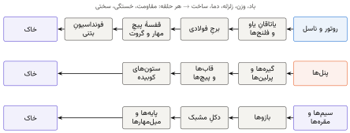
برنامهها:
python -m companion.ch30.examples_a # masses, wind, vortex, seismic, PV, combination
python -m companion.ch30.examples_b # buckling, fatigue, door, frequency, deflection
python -m companion.ch30.examples_m # rainflow, Miner, durability30.2.1 جرمها و مسیرِ بار
ایده. بار از روتور به ناسل، یاتاقانِ یاو، فلنجهای برج، قفسهٔ پیچِ مهار، بتن و سرانجام خاک میرود. سه نوع بار از همهٔ حلقهها میگذرد. بارِ تولید در اوجِ رانش است. بارِ حدی را تندبادِ ۵۰ ساله روی روتورِ متوقف میسازد. بارِ خستگی هم جمعِ میلیونها چرخهٔ کوچک است.
the load path of one turbine, top to ground (weights in MN)
rotor and nacelle 271 t 2.66
steel tower 340 t 3.34
concrete 620 m3 14.88
backfill 800 m3 14.40
total on the ground 35.27
tower-base loads (characteristic, teaching A-356):
production (peak) M 92.3 MN m H 0.92 MN
extreme (parked, 50-yr gust) M 184.6 MN m H 1.60 MN
fatigue: DEL at 1e7 cycles M 30.0 MN m H 0.00 MN
each load passes rotor -> nacelle -> yaw bearing -> tower
flanges -> anchor cage -> concrete -> soil; every joint on
that path is checked for strength, fatigue and stiffness
- a chain fails at its weakest link, not on averageمثال 30.1 (فونداسیون از همه سنگینتر) پرسش. وزنِ فونداسیون و خاکِ رویش در برابرِ وزنِ همهٔ آنچه رویش ایستاده چقدر است؟
پاسخ. بتن و خاکِ برگشته حدودِ 29 MN وزن دارند، در برابرِ 6 MN برج، روتور و ناسل.
تفسیر. فونداسیونِ وزنی برای نگهداشتنِ وزن ساخته نمیشود. کارش ایستادگی در برابرِ گشتاورِ واژگونی است: 185 MN m در بارِ حدی. وزنِ خودش اهرمی است که آن گشتاور را خنثی میکند (بخش 30.2.6). وارسی: \(620 \times 24 + 800 \times 18 = 14{,}880 + 14{,}400\,\text{kN}\).
30.2.2 باد با ارتفاع و پسای برج
ایده. سرعتِ باد با ارتفاع زیاد میشود. فشارِ دینامیکی با مربعِ سرعت بالا میرود و نیروی پسا با فشار، ضریبِ پسا و سطح:
\[ v(z) = v_\text{ref}\left(\frac{z}{z_\text{ref}}\right)^{\alpha}, \qquad q = \tfrac12\,\rho\,v^2, \qquad F = q\,C_\text{d}\,A \tag{30.1}\]
def wind_profile(v_ref: float, z_ref: float, z: float,
alpha: float = 0.14) -> float:
"""Mean wind speed at height z by the power law (m/s)."""
return v_ref * (z / z_ref) ** alpha
def dynamic_pressure(v: float, rho: float = 1.225) -> float:
"""q = rho v^2 / 2 (Pa)."""
return 0.5 * rho * v * v
def peak_speed(v_mean: float, ti: float, g_peak: float = 3.5) -> float:
"""Peak gust from mean speed and turbulence intensity (m/s)."""
return v_mean * (1 + g_peak * ti)
def drag_force(q: float, cd: float, area: float) -> float:
"""F = q Cd A (N)."""
return q * cd * area
def vortex_speed(f_hz: float, d_m: float, strouhal: float = 0.2) -> float:
"""Wind speed at which vortex shedding locks onto frequency f (m/s)."""
return f_hz * d_m / strouhalthe 50-year gust with height and the tower's own drag (teaching)
gust at 10 m 41.1 m/s, power law 0.11, air 1.09 kg/m3
gust at hub 52.9 m/s, pressure 1,528 Pa
tower drag 277 kN, base moment 14.4 MN m (Cd 0.6)
against the parked extreme of A-356: 185 MN m
in the storm the tower's own drag adds about 8 % to the base
moment: the turbine maker's load set includes it, and a
site gust above the turbine's class is a question for
the maker (site suitability, ch 11)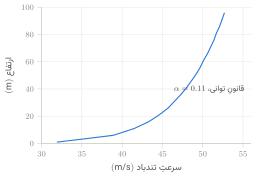
مثال 30.2 (سهمِ خودِ برج) پرسش. پسای خودِ برج در تندبادِ ۵۰ ساله چه گشتاوری در پایه میسازد؟
پاسخ. حدودِ 14 MN m، یعنی حدودِ 8 % بارِ حدیِ روتورِ متوقف.
تفسیر. سندِ بارِ سازنده این سهم را در خود دارد. تندبادی بالاتر از کلاسِ توربین در ساختگاه پرسشی برای سازنده است (مناسببودنِ ساختگاه، فصلِ ۱۱)، نه چیزی که طراحِ فونداسیون خودش جبران کند. وارسی: \(\tfrac12 \times 1.09 \times 52.9^2 = 1{,}525\,\text{Pa}\) در ارتفاعِ هاب.
30.2.3 ریزشِ گردابه: برجِ بیناسل
ایده. باد پشتِ استوانه گردابههایی میسازد که یکیدرمیان جدا میشوند. بسامدِ این ریزش با سرعتِ باد بالا میرود (\(f = St\,v/D\)، با عددِ استروهال \(St \approx 0.2\)). اگر به بسامدِ طبیعیِ سازه برسد، سازه قفل میشود و نوسانِ عرضیاش رشد میکند. سرعتِ قفلشدن چنین است:
\[ v_\text{cr} = \frac{f\,D}{St} \tag{30.2}\]
vortex shedding: the tower standing without its nacelle
bare tower (equivalent tube, ch 11): f1 = 0.45 Hz
with the rotor and nacelle on top: 0.215 Hz
lock-in speed at the 3.0 m top (Strouhal 0.2): 6.8 m/s
hours of the data-pack year within 15 % of it: 1970 of 8,760
with the nacelle on: lock-in at 3.2 m/s - harmless
a bare tower meets its lock-in wind in 22 % of the
hours: towers are not left standing without the nacelle
overnight unless the maker's procedure allows it (with a
temporary damper or a wind limit) - a construction load
the finished turbine never sees (ch 31)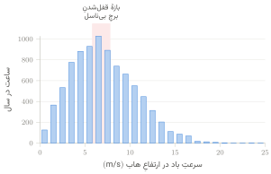
مثال 30.3 (باری که نیروگاهِ تمامشده هرگز نمیبیند) پرسش. چرا برجی که در یک روز تا بالا برپا شده، اما ناسل هنوز رویش نیست، نباید شب تنها بماند؟
پاسخ. برجِ بیناسل بسامدِ 0.45 Hz دارد و در بادِ 6.8 m/s قفل میشود. این باد در 22 % ساعتهای سال میوزد. با ناسل، سرعتِ قفلشدن به 3.2 m/s میرسد که بیخطر است.
تفسیر. این یک بارِ ساخت است: فقط در دورهٔ برپایی هست. روالِ سازنده آن را مهار میکند: حدِ باد برای ماندنِ برجِ بیناسل، میراگرِ موقت، یا نصبِ ناسل در همان روز (فصلِ ۳۱). وارسی: \(0.45 \times 3.0/0.2 = 6.75\,\text{m/s}\).
30.2.4 برشِ پایهٔ لرزهای
ایده. زلزله زمین را تکان میدهد و سازه به اندازهٔ جرمش نیرو میگیرد. روشِ نیروی جانبیِ معادل این نیرو را از طیفِ پاسخ میخواند: شتابی که سازهای با دورهٔ تناوبِ \(T\) تجربه میکند. اینجا شکلِ سادهای آموزشی به کار رفته، نه طیفِ یک آییننامه: یک فلات با \(2.5\,a_g\) تا \(T_c\)، و کاهش با \(1/T\) پس از آن.
\[ V = m\,g\,\frac{S_a(T)}{q_\text{b}} \tag{30.3}\]
در این رابطه \(q_\text{b}\) ضریبِ رفتار است که توانِ سازه در جذبِ انرژی را نشان میدهد (اینجا ۱).
equivalent seismic base shear (teaching spectrum: plateau 2.5 ag
to 0.6 s, falling as 1/T beyond; ag = 0.25 g; no code assumed)
structure period s Sa/g mass t shear kN
turbine (top + 0.24 tower) 4.65 0.081 353 279
main transformer on plinth 0.15 0.625 95 582
turbine: 28 MN m at the base against 185 from wind -
wind governs the tall, soft tower
transformer: a stiff, heavy item sits on the plateau; with
tall bushings, anchors and the plinth, earthquake can
govern the substation - the local seismic code and the
equipment's qualification decide (ch 25)مثال 30.4 (بلند و نرم، کوتاه و سفت) پرسش. برای توربین و برای ترانسفورماتورِ اصلی، کدام بار حاکم است: باد یا زلزله؟
پاسخ. برای توربین، با دورهٔ تناوبِ 4.65 s، زلزله فقط 28 MN m گشتاور میسازد در برابرِ 185 از باد. ترانسفورماتور اما با دورهٔ 0.15 s روی فلاتِ طیف است و 582 kN برش میگیرد.
تفسیر. سازهٔ بلند و نرم از بیشترِ انرژیِ زلزله فرار میکند. سازهٔ کوتاه، سنگین و سفت آن را کامل میگیرد. پس در پست، زلزله ممکن است حاکم باشد: مهارها، پلینت، و تأییدِ لرزهایِ بوشینگهای بلند (بخش 30.6.5، فصلِ ۲۵). طیفِ واقعی را آییننامهٔ لرزهایِ محل میدهد. وارسی: \(2.5 \times 0.25 \times 0.6/4.65 = 0.081\,g\).
30.2.5 بارهای میزِ PV: باد، برف و گرما
one PV table (2P x 26, 25 deg; teaching coefficients A-360, A-361)
area 134 m2, length 29.5 m
50-yr gust at 2 m: pressure 646 Pa; uplift (net coefficient 1.2): 104 kN
dead weight 29 kN; net uplift 75 kN on 12 posts
snow 0.4 kPa on plan: 49 kN downward (rare here)
temperature range of the steel: -8.6 to 65.7 C (sun +25 K)
free expansion of a 29.5 m rail: 26 mm
wind uplift, not weight, sizes the posts and their
embedment; the rail needs slotted holes or a joint so
the heat is not turned into a force on the postsمثال 30.5 (باد بالا میکشد) پرسش. کدام بار ستونها و عمقِ کوبیدنشان را تعیین میکند؟
پاسخ. برکنشِ باد: 104 kN در برابرِ 29 kN وزن. برکنشِ خالص 75 kN روی ۱۲ ستون میافتد.
تفسیر. وزنِ میز کم است و باد آن را بالا میکشد. پس ستون باید در خاک گیر کند (بخش 30.3.1). گرما هم ریلِ 29.5 m را 26 mm دراز میکند. سوراخِ لوبیایی یا درزِ انبساط جلوی تبدیلِ آن به نیرو روی ستونها را میگیرد. وارسی: \(12 \times 10^{-6} \times 29.5 \times 74.3 = 26\,\text{mm}\).
30.2.6 ترکیبِ بارها و پایداری در برابرِ واژگونی
ایده. هر بارِ مشخصه در یک ضریبِ جزئی ضرب میشود تا عدمِ قطعیتش در وارسی بیاید. بارِ اثرگذار بزرگتر و وزنِ پایدارکننده کوچکتر گرفته میشود. ضریبها را آییننامه تعیین میکند. اینجا 1.35 و 0.9 فقط آموزشیاند.
overturning about the toe of the 20 m base, extreme case (teaching
factors: action x 1.35, stabilising weight x 0.9; the code sets real ones)
case overturning MN m resisting MN m ratio
characteristic 190 353 1.85
factored (teaching) 257 317 1.24
the factors make the check carry its own uncertainty; the
ratio stays above 1, but the soil under the compressed
part of the base is checked too (lesson D, effective area)مثال 30.6 (پایدار، اما نه کافی) پرسش. فونداسیونِ 20 m با ضریبها در برابرِ واژگونی پایدار است. پس کار تمام است؟
پاسخ. نه. نسبتِ پایداری 1.24 است، اما این فقط یکی از وارسیهاست. در بخش 30.5 همین فونداسیون در وارسیِ «بلندنشدن در تولید» رد میشود.
تفسیر. فونداسیون چند وارسیِ جدا دارد: واژگونیِ کلی، بلندنشدنِ لبه در بارِ عادی، فشارِ خاک روی سطحِ مؤثر، سختیِ دورانی و نشست. گذشتن از یکی چیزی دربارهٔ دیگری نمیگوید. وارسی: \(35.3 \times 10 = 353\,\text{MN m}\) گشتاورِ مقاوم.
- سه نوع بارِ توربین را نام ببرید و بگویید هر کدام چه چیزی را اندازه میکند.
- سرعتِ 10 m/s در 10 m با \(\alpha = 0.14\) در 100 m چقدر است؟
- اگر سرعت دو برابر شود، فشارِ دینامیکی چند برابر میشود؟
- سرعتِ قفلشدنِ استوانهای به قطرِ 4 m با بسامدِ 0.3 Hz چیست؟
- چرا برجِ با ناسل از ریزشِ گردابه آسیب نمیبیند؟
- چرا زلزله برای ترانسفورماتور خطرناکتر از توربین است؟
- برشِ پایهٔ جرمِ 50 t روی فلاتِ طیف با \(a_g = 0.2\,g\) چقدر است؟
- چرا وزنِ میزِ PV بارِ حاکم نیست؟
- فرقِ پایداری در برابرِ واژگونی و بلندنشدنِ لبه چیست؟
- ضریبهای جزئی را چه کسی تعیین میکند؟
30.2.7 کمانشِ پوسته و تنشِ حدی
ایده. برجِ لولهایِ نازک پیش از آنکه فولادش تسلیم شود، با چینخوردنِ موضعیِ دیواره (کمانش) از کار میافتد. تنشِ کمانشِ کشسانِ یک استوانهٔ کامل \(0.605\,E\,t/r\) است، اما نقصهای ساخت (بیضیشدگی، فرورفتگی، جوش) آن را چند برابر کم میکنند. یک ضریبِ کاهشِ نقص این را نشان میدهد. وقتی تسلیم و کمانش نزدیک هماند، با هم برهمکنش دارند. رابطهٔ رانکین این را به سادهترین شکل نشان میدهد:
\[ \sigma_\text{el} = \kappa\,0.605\,E\,\frac{t}{r}, \qquad \frac{1}{\sigma_\text{R}} = \frac{1}{f_y} + \frac{1}{\sigma_\text{el}} \tag{30.4}\]
def shell_buckling(e_pa: float, t_m: float, r_m: float,
knockdown: float) -> float:
"""Axial buckling stress of a thin cylinder, the classical value
0.605 E t / r times a knock-down factor for imperfections (Pa)."""
return knockdown * 0.605 * e_pa * t_m / r_m
def rankine(fy: float, s_el: float) -> float:
"""Strength when yield and elastic buckling interact (Rankine):
1 / s = 1 / fy + 1 / s_el."""
return 1 / (1 / fy + 1 / s_el)extreme bending up the tower against buckling (teaching, A-356)
(moment falls with height; knock-down 0.4 on 0.605 E t/r;
Rankine: 1/s = 1/fy + 1/s_el)
section D m t mm r/t stress MPa strength MPa use t for use 1
1 4.50 46 49 260 265 0.98 46 mm
2 4.12 40 52 267 261 1.02 41 mm
3 3.75 32 59 268 252 1.06 34 mm
4 3.38 26 65 202 244 0.83 23 mm
with this teaching knock-down, sections 2 and 3 of the
ch 11 wall schedule are thin: buckling, not yield, sets
the wall (strength far below 355 MPa); the real check
uses the code's reduction for the fabrication quality
class - which is why ovality and dents are measured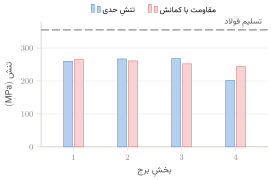
مثال 30.7 (کمانش، نه تسلیم) پرسش. مقاومتِ بخشِ پایه در برابرِ تنشِ 260 MPa چقدر است و چرا از 355 کمتر است؟
پاسخ. 265 MPa. کمانشِ کشسان با ضریبِ کاهش 1,039 MPa است و ترکیبش با تسلیم مقاومت را به 265 پایین میآورد.
تفسیر. فصلِ ۱۱ فقط تسلیم را وارسی کرده بود (بهرهوریِ 0.74) و گفته بود کمانش وارسیِ واقعی است. اینجا، با ضریبِ کاهشِ آموزشی، بخشهای ۲ و ۳ کمی بیش از ظرفیتاند و دیوارهٔ 41 و 34 mm لازم دارند. ضریبِ واقعی را آییننامه بر پایهٔ ردهٔ کیفیتِ ساخت میدهد. از همین رو بیضیشدگی و فرورفتگی در کارخانه اندازهگیری میشوند (بخش 30.4.1). وارسی: \(1/(1/355 + 1/1039) = 264.6\,\text{MPa}\).
30.2.8 خستگیِ جوشهای محیطی
ایده. در بیست سال، برج بیش از صد میلیون چرخهٔ بار میبیند. هر جزئیاتِ جوش یک منحنیِ تنش-عمر (S-N) دارد. در شکلِ دوخطیِ آموزشی، شیب ۳ است تا \(5 \times 10^6\) چرخه و شیب ۵ پس از آن، و منحنی با بازهٔ تنش در \(2 \times 10^6\) چرخه («ردهٔ جزئیات») نام میگیرد:
\[ \begin{aligned} N &= N_C\left(\frac{\Delta\sigma_C}{\Delta\sigma}\right)^{3}, && \Delta\sigma \ge \Delta\sigma_D \\ N &= N_D\left(\frac{\Delta\sigma_D}{\Delta\sigma}\right)^{5}, && \Delta\sigma < \Delta\sigma_D \end{aligned} \tag{30.5}\]
def sn_life(ds: float, ds_c: float, n_c: float = 2e6, m1: float = 3.0,
n_d: float = 5e6, m2: float = 5.0) -> float:
"""Cycles to failure at stress range ds on a bilinear S-N curve:
slope m1 through (n_c, ds_c) down to n_d, slope m2 below (no cut-off)."""
ds_d = ds_c * (n_c / n_d) ** (1 / m1)
if ds >= ds_d:
return n_c * (ds_c / ds) ** m1
return n_d * (ds_d / ds) ** m2fatigue of the circumferential welds (DEL at 1e7 cycles, teaching
detail class 71 MPa, slopes 3 and 5, stress x 1.15)
section range MPa damage t for damage 1 t buckling t chosen
1 48.6 1.39 50 mm 46 mm 50 mm
2 50.0 1.59 45 mm 41 mm 45 mm
3 50.1 1.61 36 mm 34 mm 36 mm
4 37.8 0.40 22 mm 23 mm 26 mm
steel added to the tower: about 32 t on 340 t
fatigue, not the storm, sizes the lower welds: with the
ch 11 walls three sections exceed a damage of 1; thicker
cans, a better weld detail (ground flush) or a lower
load set fix it - the maker's tower design does this with
the real load spectrum and the code's detail categories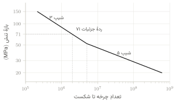
مثال 30.8 (خستگی پایهٔ برج را اندازه میکند) پرسش. با بارِ معادلِ آسیبِ 30 MN m و ضریبِ آموزشیِ 1.15، آسیبِ جوشهای محیطی در عمر چقدر است و چه دیوارهای لازم است؟
پاسخ. آسیبِ بخشهای ۱ تا ۳ از ۱ بیشتر است (1.39، 1.59، 1.61). دیوارههای لازم به ترتیب 50، 45 و 36 mm هستند و برج حدودِ 32 t فولادِ بیشتر میخواهد.
تفسیر. در بخشهای پایینی، خستگی دیواره را از کمانش هم بیشتر میکند. طوفان پایهٔ برج را اندازه نمیکند؛ خستگی اندازه میکند. راهها سهتاست: دیوارهٔ ضخیمتر، جزئیاتِ بهتر (جوشِ سنگزده و همسطح)، یا مجموعهٔ بارِ کمتر. طراحیِ واقعی را سازنده با طیفِ بارِ واقعی و ردههای آییننامه انجام میدهد. وارسی: \(\Delta\sigma = 30 \times 10^6/0.709 \times 1.15 = 48.6\,\text{MPa}\).
30.2.9 بارِ معادلِ آسیب از یک سابقهٔ بار
ایده. بارِ واقعی یک سیگنالِ نامنظم است. شمارشِ جریانِ باران (فصلهای ۴ و ۱۱) آن را به چرخههایی با بازهٔ معین میشکند. بارِ معادلِ آسیب بارِ ثابتی است که با تعدادِ چرخهٔ مرجع همان آسیب را بسازد:
\[ \Delta M_\text{eq} = \left(\frac{\sum_i n_i\,\Delta M_i^{\,m}}{N_\text{eq}}\right)^{1/m} \tag{30.6}\]
rainflow counting of a 10-minute tower-base moment record (synthetic)
133 counted ranges; largest 33.7 MN m
DEL at 1 Hz, slope m = 3: 11.53 MN m
DEL at 1 Hz, slope m = 5: 15.21 MN m
the same record gives a larger DEL for the steeper slope:
the big ranges weigh more - so a DEL is always quoted with
its slope and its reference cycle count, and welds (m 3)
and bolts or composites (other slopes) get their own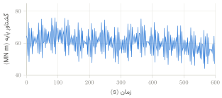
Miner's sum for a stress spectrum at a weld (teaching, detail 71)
range MPa cycles in 20 yr damage (bilinear) damage (slope 3 only)
80 2.0e+04 0.014 0.014
60 2.0e+05 0.060 0.060
45 1.5e+06 0.141 0.191
30 8.0e+06 0.099 0.302
20 4.0e+07 0.065 0.447
total 0.38 1.01
the many small ranges below the knee hurt far less on the
shallower slope: the single-slope shortcut is safe but
pessimistic; the bilinear curve the code gives (with or
without a cut-off) is what the designer usesمثال 30.9 (میانبرِ تکشیب، محافظهکار) پرسش. جمعِ ماینرِ طیفِ تنشِ یک جوش با منحنیِ دوخطی و با شیبِ ۳ بهتنهایی چقدر است؟
پاسخ. 0.38 در برابرِ 1.01.
تفسیر. چرخههای کوچکِ فراوانِ زیرِ زانو روی شیبِ ۵ بسیار کمتر آسیب میزنند. میانبرِ تکشیب امن، اما بدبینانه است. بارِ معادلِ آسیب هم همیشه با شیب و تعدادِ چرخهٔ مرجعش گزارش میشود: شیبِ ۵ برای همان سابقه عددِ بزرگتری میدهد. وارسی: \(8 \times 10^6/(2 \times 10^6 \times (71/30)^3) = 0.302\).
30.2.10 دهانهٔ در
the door opening near the base (2.4 x 1.0 m, teaching)
nominal bending stress at the door level: 127 MPa (production)
stress at the opening's corner, concentration factor:
plain cut opening Kt 3.0: 382 MPa
with a welded door frame Kt 1.6: 204 MPa
a plain hole triples the stress at its corners, beyond
yield in a storm and far beyond the fatigue range: the
door frame (a thick, shaped ring welded in) restores the
section, and its welds are among the most inspected on
the towerمثال 30.10 (سوراخ، تنش را سه برابر میکند) پرسش. گوشهٔ یک دهانهٔ سادهٔ بریدهشده در تولید چه تنشی میبیند؟
پاسخ. حدودِ 382 MPa: بیش از تسلیم در تولیدِ عادی. با قابِ جوشی این عدد به 204 MPa میرسد.
تفسیر. قابِ در، حلقهای ضخیم و شکلدار که درون جوش میشود، مقطع را بازمیگرداند. جوشهایش از پربازرسیترین جوشهای برجاند. فصلِ ۱۱ دهانهٔ در را در کنارِ کمانش و خستگی یکی از «وارسیهای واقعی» نامیده بود. وارسی: \(3.0 \times 127 = 381\,\text{MPa}\).
30.2.11 بسامدِ برج روی فونداسیونِ نرم
ایده. فصلِ ۱۱ بسامدِ نخستِ برج را با پایهٔ گیردار حساب کرد (0.215 Hz) و فاصلهاش از لبهٔ بازهٔ \(1P\) را 12 % یافت. خاک اما گیردار نیست: فونداسیون کمی میچرخد. سختیِ دورانیِ پایهٔ دایرهای روی خاکِ کشسان و ترکیبِ آن با بسامدِ برج به روشِ دانکرلی چنین است:
\[ \begin{aligned} K_\theta &= \frac{8\,G\,r^3}{3\,(1-\nu)} \\ \frac{1}{f^2} &= \frac{1}{f_\text{fixed}^2} + \frac{1}{f_\theta^2}, \qquad f_\theta = \frac{1}{2\pi}\sqrt{\frac{K_\theta}{m\,h^2}} \end{aligned} \tag{30.7}\]
tower frequency on a flexible foundation (Dunkerley; teaching soils)
fixed base f1 = 0.215 Hz; 1P max 0.192 Hz; required margin 10 % (A-359)
-> f1 at least 0.2112 Hz -> rocking stiffness at least 177 GN m/rad
founding soil K GN m/rad f1 Hz margin
dense sand and gravel (T01-T06, T08-T12) 305 0.213 10.8 %
medium sand at founding level (T07) 103 0.209 8.6 % short
T07 with water at 0.5 m 82 0.207 7.8 % short
the margin requirement, turned into a stiffness, is met on
dense ground and missed at T07 (with or without the high
water): there stiffness, not strength, decides the
foundation - the schemes of lesson D are compared on it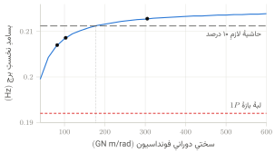
مثال 30.11 (سختی، نه مقاومت) پرسش. الزامِ حاشیهٔ ۱۰ درصدیِ سازنده به چه سختیِ دورانیای تبدیل میشود و کدام خاک آن را برآورده میکند؟
پاسخ. \(f_1 \ge 0.2112\,\text{Hz}\) یعنی \(K_\theta \ge 177\,\text{GN m/rad}\). زمینِ متراکم (305) برآورده میکند. ماسهٔ میانیِ T07 (103) و همان با آبِ بالا (82) نه.
تفسیر. در T07 فونداسیونی که از نظرِ باربری کافی است، برای بسامد کم است. منحنی هم نشان میدهد چرا: بالای حدودِ 300 GN m/rad سختیِ بیشتر بسامد را چندان بالا نمیبرد. زیرِ آن، هر کاهشِ سختی فاصله تا \(1P\) را سریع میخورد. طرحهای بخش 30.5 بر همین پایه مقایسه میشوند. وارسی: \(8 \times 25 \times 10^6 \times 10^3/(3 \times 0.65) = 102.6\,\text{GN m/rad}\).
the thicker walls of lesson B change the tower's frequency
+32 t of steel low in the tower: stiffness up about 8 % (estimate),
effective mass up 2.2 %
fixed-base f1: 0.215 -> 0.221 Hz
thicker walls low down raise the frequency a little: one
fix (fatigue) helps another check (1P margin) - but every
change to the tower goes back through the whole loop:
loads, frequency, fatigue, foundation (lesson D)30.2.12 تغییرشکل و شاقولی
tower-top deflection at peak thrust (equivalent tube, teaching)
bending of the tower: 1.44 m at 100 m
rocking of the base on T07 soil: tilt 0.90 mrad -> 0.09 m at the top
the top sways more than a metre in normal operation: that
is design, not damage; what is checked is the permanent
tilt of the foundation after settlement (verticality
surveys, lesson C) and the blade-tower clearance (ch 11)مثال 30.12 (نوسانِ طراحیشده) پرسش. نوکِ برج در اوجِ رانش چقدر جابهجا میشود و چه بخشی از آن از چرخشِ پایه است؟
پاسخ. 1.44 m از خمشِ برج و فقط 0.09 m از چرخشِ پایه روی خاکِ T07.
تفسیر. نوسانِ متریِ نوک بخشی از طراحی است، نه آسیب. آنچه وارسی میشود کجیِ ماندگارِ فونداسیون پس از نشست است (بخش 30.4.11) و فاصلهٔ نوکِ پره از برج (فصلِ ۱۱). وارسی: \(92.3/102.6 \times 10^3 = 0.90\,\text{mrad}\).
- چرا تنشِ کمانشِ واقعی چند برابر کمتر از مقدارِ کلاسیکِ \(0.605\,E\,t/r\) است؟
- با رانکین، مقاومتِ فولادِ 355 MPa با کمانشِ کشسانِ 700 MPa چقدر است؟
- عمرِ جزئیاتِ ۷۱ در بازهٔ 60 MPa چند چرخه است؟
- چرا خستگی، و نه طوفان، دیوارهٔ پایهٔ برج را تعیین میکند؟
- بارِ معادلِ آسیب بدونِ شیب و تعدادِ چرخهٔ مرجع چه کم دارد؟
- چرا میانبرِ تکشیب محافظهکار است؟
- قابِ در چه کاری میکند؟
- سختیِ دورانیِ پایهای به شعاعِ 12 m با \(G = 40\,\text{MPa}\) و \(\nu = 0.3\) چیست؟
- چرا بالای حدودِ 300 GN m/rad سختیِ بیشتر بسامد را چندان بالا نمیبرد؟
- نوسانِ نوکِ برج و کجیِ ماندگار چه فرقی دارند؟
30.2.13 خورشید برج را خم میکند
برنامه:
python -m companion.ch30.examples_nایده. وقتی خورشید یک سمتِ برج را گرمتر میکند، آن سمت درازتر میشود و برج به سمتِ سرد خم میشود. برای لولهای به قطرِ \(D\) و ارتفاعِ \(H\) با اختلافِ دمای \(\Delta T\) میانِ دو سمت، جابهجاییِ نوک چنین است:
\[ y = \frac{\alpha\,\Delta T\,H^2}{2D} \tag{30.8}\]
the sun bends the tower: one side warmer than the other
top deflection = alpha dT H^2 / (2 D) for a tube of diameter D
dT K D m top deflection mm
5 3.75 80
10 3.75 160
15 3.75 240
a 10 K difference moves the top about 16 cm - more than
the verticality tolerance; towers are surveyed at dawn
or in overcast weather, with the turbine yawed and still,
and the temperature recorded with the reading (lesson C)مثال 30.13 (نقشهبرداری در سپیدهدم) پرسش. ده درجه اختلافِ دما میانِ دو سمتِ برج نوک را چقدر جابهجا میکند؟
پاسخ. حدودِ 160 mm، یعنی بیش از سه برابرِ رواداریِ شاقولی (بخش 30.4.11).
تفسیر. شاقولیِ برج در سپیدهدم یا هوای ابری اندازهگیری میشود. توربین در آن هنگام ساکن و در جهتی ثبتشده است و دما همراهِ عدد ثبت میشود. برجی که در ظهرِ تابستان «کج» اندازهگیری شده شاید فقط آفتاب خورده باشد. وارسی: \(12\times10^{-6} \times 10 \times 100^2/(2 \times 3.75) = 0.16\,\text{m}\).
30.2.14 روشِ ریلی برای برجِ پلهای
ایده. فصلِ ۱۱ برج را لولهای یکنواخت فرض کرد. روشِ ریلی شکلی تقریبی برای مُد فرض میکند و انرژیِ کرنشی را با انرژیِ جنبشی برابر میگذارد. شکلِ مُد را خیزِ برج زیرِ نیرویی واحد در نوک میگیریم:
\[ \omega^2 \approx \frac{P\,y_\text{top}}{\sum_i m_i\,y_i^2 + M_\text{top}\,y_\text{top}^2} \tag{30.9}\]
در این رابطه \(y_i\) خیزِ تکهٔ \(i\) است، \(m_i\) جرمِ آن و \(M_\text{top}\) جرمِ بالای برج.
Rayleigh estimate of the stepped tower's frequency (fixed base)
1 m pieces, tapered diameters, +8 % mass for internals; top 271 t
walls [46, 40, 32, 26] mm (ch 11): f1 = 0.226 Hz
walls [50, 45, 36, 26] mm (fatigue, lesson B): f1 = 0.236 Hz
ch 11's equivalent tube gave 0.215 Hz
Rayleigh is an upper bound (5 % above ch 11 here); the ratio
is the useful result: the extra steel raises f1 by 4.5 %
scaled to ch 11: fixed 0.2247 Hz; T07 on 20 m base 0.217 Hz (13.2 %)
the thicker walls would close T07's frequency gap - but
only the maker's final tower model may be credited, so
lesson D keeps 0.215 Hz as the conservative basisمثال 30.14 (فولادِ خستگی، بسامد را هم بالا میبرد) پرسش. دیوارههای ضخیمترِ درسِ خستگی بسامدِ برج را چقدر بالا میبرند و برای T07 چه معنایی دارد؟
پاسخ. حدودِ 4.5 %. اگر به مدلِ فصلِ ۱۱ مقیاس شود، T07 روی پیِ 20 m به 0.217 Hz و حاشیهٔ 13 % میرسد.
تفسیر. روشِ ریلی کرانِ بالاست و عددِ مطلقش 5 % از مدلِ فصلِ ۱۱ بیشتر است. نسبتِ دو حالت اما قابلِ اعتماد است. فولادی که برای خستگی افزوده شد شاید شکافِ بسامدِ T07 را هم ببندد. اما فقط مدلِ نهاییِ برجِ سازنده را میتوان به حساب آورد. پس آزمایشگاهِ ت همان 0.215 Hz محتاطانه را نگه میدارد. این یافته در مبنای D-034 بهعنوانِ پرسش برای سازنده ثبت میشود. وارسی: \(0.215 \times 0.236/0.226 = 0.2245\,\text{Hz}\).
30.2.15 بزرگنماییِ دینامیکی نزدیکِ تشدید
ایده. نیرویی هماهنگ با بسامدِ \(f\) روی سازهای با بسامدِ طبیعیِ \(f_1\) و نسبتِ میراییِ \(\zeta\) پاسخی بزرگتر از پاسخِ ایستا میسازد:
\[ \text{DAF} = \frac{1}{\sqrt{(1 - r^2)^2 + (2\zeta r)^2}}, \qquad r = \frac{f}{f_1} \tag{30.10}\]
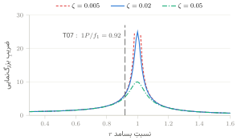
dynamic amplification of a harmonic force near resonance
r = forcing / natural frequency; zeta = damping ratio
r zeta 0.005 zeta 0.02 zeta 0.05
0.50 1.3 1.3 1.3
0.70 2.0 2.0 1.9
0.80 2.8 2.8 2.7
0.90 5.3 5.2 4.8
0.95 10.2 9.6 7.3
1.00 100.0 25.0 10.0
1.10 4.8 4.7 4.2
1.30 1.4 1.4 1.4
T07: 1P max / f1 = 0.92 -> amplification about 6
near r = 1 damping alone limits the response: a parked
rotor (little aerodynamic damping) is the worst case,
which is why the margin to 1P is a stiffness rule and
the controller avoids lingering at the critical speedخطای رایج. حاشیهٔ ۱۰ درصدی تا 1P گاهی سختگیریِ بیجا به نظر میآید. اما در \(r = 0.92\) پاسخ شش برابرِ پاسخِ ایستاست و در \(r = 0.95\) نزدیکِ ده برابر. روتورِ پارکشده میراییِ آیرودینامیکیِ کمی دارد و بدترین حالت است. پس حاشیه قاعدهای برای سختی است، و کنترلگر هم روتور را از درنگ در سرعتِ بحرانی دور نگه میدارد.
30.2.16 دنباله و خستگی
what a wake does to fatigue (teaching: DEL scales with TI)
ambient TI 0.10; waked TI from ch 14's spacing
turbine TI DEL ratio damage ratio m=3 m=5
free stream 0.10 1.00 1.00 1.00
one wake 0.14 1.40 2.74 5.38
deep in rows 0.17 1.70 4.91 14.20
a 40 % higher turbulence nearly triples the weld damage
(m = 3): the maker's load set is valid for the layout's
turbulence only, and a site suitability check confirms
that every position, waked ones included, stays inside itمثال 30.15 (توربینی پشتِ توربینِ دیگر) پرسش. اگر آشفتگی در دنباله از 0.10 به 0.14 برسد، آسیبِ خستگیِ جوشها چند برابر میشود؟
پاسخ. با شیبِ ۳، حدودِ 2.7 برابر. با شیبِ ۵، حدودِ 5.4 برابر.
تفسیر. مجموعهٔ بارِ سازنده فقط برای آشفتگیِ همان چیدمان معتبر است. وارسیِ تناسبِ ساختگاه نشان میدهد که هر جایگاه، از جمله جایگاههای پشتِ دنباله، درونِ آن میماند (فصلهای ۱۱ و ۱۴). فاصلهگذاریِ تنگتر برای انرژیِ بیشتر شاید بهای خستگی داشته باشد. این مدلِ ساده فقط نشان میدهد چرا. وارسی: \(1.4^3 = 2.74\).
30.2.17 بودجهٔ کجیِ برج
tilt budget at the tower top (teaching, metres)
foundation tilt limit (teaching 3 mm/m) 0.300
erection verticality (lesson C) 0.050
thermal, 10 K across the tower 0.160
mean thrust at rated (static) 0.450
worst case sum 0.96 m; independent parts RSS + thrust 0.79 m
the foundation limit dominates the permanent part: a
settlement survey that shows 1 mm/m after one year is
a third of the budget gone - the trend matters (lesson C)ایده. کجیِ نوکِ برج چند سهم دارد: کجیِ پی، رواداریِ برپایی، خمِ گرمایی و خیزِ زیرِ رانشِ روتور. سهمِ پی ماندگار است و با زمان بیشتر میشود. نشستی که پس از یک سال 1 mm/m کجی نشان دهد، یکسومِ حدِ آموزشی را گرفته است. پس روندِ نشست مهم است، نه فقط عددِ امروز (بخش 30.4.13).
- ده درجه اختلافِ دما روی برجی 80 m با قطرِ 3.5 m نوک را چقدر جابهجا میکند؟
- چرا شاقولی در سپیدهدم اندازهگیری میشود؟
- چرا روشِ ریلی کرانِ بالای بسامد است؟
- ضریبِ بزرگنمایی در \(r = 0.9\) و \(\zeta = 0.02\) چقدر است؟
- چرا روتورِ پارکشده بدترین حالتِ تشدید است؟
- آشفتگیِ 0.17 آسیب را با شیبِ ۳ چند برابر میکند؟
- وارسیِ تناسبِ ساختگاه چه چیزی را ثابت میکند؟
- چهار سهمِ بودجهٔ کجی را نام ببرید.
30.2.18 توفانِ «پنجاهساله» در عمرِ طرح
برنامه:
python -m companion.ch30.examples_tایده. رویدادی با دورهٔ بازگشتِ \(T\) سال در هر سال احتمالِ \(1/T\) دارد. احتمالِ دستکم یک بار رخدادنش در \(n\) سالِ عمر چنین است:
\[ P = 1 - \left(1 - \frac{1}{T}\right)^n \tag{30.11}\]
chance of meeting a return-period event within the design life
return period yr in 25 years in 30 years
10 93 % 96 %
50 40 % 45 %
100 22 % 26 %
475 5 % 6 %
2475 1 % 1 %
the '50-year' gust has a 40 % chance of arriving during a
25-year life: it is a likely event, not a remote one,
which is why it is a characteristic load with partial
factors on top, and the 475-year earthquake about 5 %مثال 30.16 (پنجاهساله یعنی محتمل) پرسش. تندبادِ پنجاهساله با چه احتمالی در عمرِ ۲۵ سالهٔ توربین میوزد؟
پاسخ. حدودِ 40 %. زلزلهٔ ۴۷۵ ساله حدودِ 5 %.
تفسیر. تندبادِ پنجاهساله رویدادی دور نیست، محتمل است. پس بارِ مشخصه است و ضریبهای جزئی رویش اعمال میشوند (بخش 30.5.4). زلزلهٔ ۴۷۵ ساله کماحتمالتر است، اما پیامدش برای سازههای پست و ترانسفورماتور بزرگ است (بخش 30.6.5). وارسی: \(1 - 0.98^{25} = 0.40\).
30.2.19 میرایی در برابرِ ریزشِ گردابه
ایده. دامنهٔ نوسانِ ناشی از ریزشِ گردابه به عددِ اسکروتون وابسته است. این عدد جرم و میرایی را در برابرِ نیروی هوا میسنجد:
\[ Sc = \frac{2\,m\,\delta}{\rho\,D^2}, \qquad \delta = 2\pi\zeta \tag{30.12}\]
در این رابطه \(m\) جرمِ واحدِ طول است، \(\delta\) کاهشِ لگاریتمی و \(D\) قطر.
damping against vortex shedding: the Scruton number (bare tower)
Sc = 2 m delta / (rho D^2), delta = 2 pi zeta (log decrement)
case zeta Sc relative amplitude
bare steel tower 0.002 8.6 1.00
with temporary damper 0.010 43.1 0.20
tuned mass damper 0.040 172.4 0.05
the vortex amplitude falls roughly as 1/Sc: a damper that
raises damping fivefold cuts the swing to a fifth - which
is how the maker's procedure may allow a bare tower to
stand overnight (lesson A); without it, a wind limit appliesبرجِ فولادیِ بیناسل میراییِ بسیار کمی دارد. میراگرِ موقت میرایی را پنج برابر و دامنه را تقریباً یکپنجم میکند. به همین دلیل روالِ سازنده شاید ماندنِ برجِ برهنه را در شب، با میراگر، مجاز بداند. بدونِ میراگر، حدِ باد برقرار است (بخش 30.2.3، فصلِ ۳۱).
- احتمالِ رویدادِ صدساله در ۳۰ سال چقدر است؟
- چرا تندبادِ پنجاهساله بارِ مشخصه است و نه بارِ استثنایی؟
- عددِ اسکروتون با \(\zeta = 0.005\) برای همان برج چقدر است؟
- چرا برجِ کامل با ناسل و روتور از ریزشِ گردابه آسیب نمیبیند، با اینکه میراییِ عرضیِ آن کم میماند؟
30.3 ب. محصولاتِ سازهای و مصالح
بخشِ الف بارها و پاسخ را دید. این بخش به محصولها میپردازد: ستونها و پرلینهای PV، پیچها و جوشها، قفسهٔ پیچِ مهار، گروت، میلگرد، و پوششها. هر محصول یک وارسیِ حاکم دارد که اغلب همانی نیست که اول به ذهن میرسد. مصالح هم با محیطِ ساختگاه میسنجند: سرما، خاکِ خورنده و آفتاب.
برنامهها:
python -m companion.ch30.examples_c # PV posts, piles, zinc, purlins, bolts
python -m companion.ch30.examples_g # toughness, welds, anchors, grout, slab30.3.1 ستونهای PV: برکنش و عمق
ایده. ستونِ کوبیده با اصطکاکِ جداره در برابرِ بیرونکشیدن میایستد و با فشارِ خاکِ جلویش در برابرِ بارِ جانبی:
\[ F_\text{up} = p\,L\,f_\text{s} + W, \qquad H_\text{u} = \frac{0.5\,\gamma\,d\,L^3\,K_\text{p}}{e + L} \tag{30.13}\]
در این رابطه \(p\) محیط است، \(L\) عمق، \(f_\text{s}\) اصطکاکِ واحد، \(d\) پهنا، \(K_\text{p}\) ضریبِ فشارِ مقاوم و \(e\) ارتفاعِ اثرِ بار. رابطهٔ دوم، رابطهٔ بِرومز برای شمعِ کوتاهِ سرآزاد در ماسه است.
def pile_uplift(perimeter_m: float, length_m: float, skin_kpa: float,
weight_kn: float = 0.0) -> float:
"""Uplift resistance of a pile: shaft friction plus its weight (kN)."""
return perimeter_m * length_m * skin_kpa + weight_kn
def broms_lateral_sand(d_m: float, l_m: float, gamma: float, kp: float,
e_m: float) -> float:
"""Lateral capacity of a short free-head pile in sand (Broms):
H = 0.5 gamma d L^3 Kp / (e + L) (kN), load at height e."""
return 0.5 * gamma * d_m * l_m ** 3 * kp / (e_m + l_m)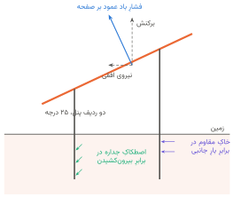
post loads (edge post, teaching) and embedment by skin friction
uplift 8.2 kN, horizontal 5.5 kN per edge post (12 posts a table)
soil (ch 29) skin kPa embedment for FS 2 m
dense sand and gravel 25 1.19
silty sand, loose (top) 12 2.48
silty sand with gypsum 10 2.97
the loose top layer more than doubles the embedment; skin
friction is the least certain number in the table, so it
is measured, not assumed: pull-out tests on site (below)lateral capacity of a short post in sand (Broms, free head)
d 0.15 m, load 1.2 m above ground, gamma 18 kN/m3
embedment m phi 30 (Kp 3.0) phi 34 (Kp 3.5) load x 2
1.2 2.9 3.4 11.0
1.6 5.9 6.9 11.0
2.0 10.1 11.8 11.0
capacity grows with the cube of embedment; at 1.6 m the
post fails sideways long before it pulls out - in dense
sand the side load, not the uplift, sets the depth (about
2 m): the test programme pairs pull-out with lateral testsمثال 30.17 (وارسیای که انجام نشده بود حاکم است) پرسش. در ماسهٔ متراکم، عمقِ لازم برای برکنش 1.19 m است. پس ستونِ 1.6 m کافی است؟
پاسخ. نه. در 1.6 m ظرفیتِ جانبی 5.9 kN است در برابرِ 11 kN لازم. ستون پیش از بیرونکشیدهشدن کنار میرود و حدودِ 2 m عمق لازم است.
تفسیر. ظرفیتِ جانبی با مکعبِ عمق بالا میرود. در ماسهٔ متراکم، بارِ جانبی عمق را تعیین میکند و در ماسهٔ سست، برکنش. برنامهٔ آزمایش هم آزمایشِ بیرونکشیدن را با آزمایشِ بارِ جانبی جفت میکند. وارسی: \(0.5 \times 18 \times 0.15 \times 1.6^3 \times 3/2.8 = 5.9\,\text{kN}\).
30.3.2 آزمایشِ بیرونکشیدن در ساختگاه
pull-out tests on posts driven 1.6 m (required 2 x design = 16.3 kN)
zone mean kN s 5 % fractile below required
PV north (BH-09) 24.0 2.2 20.5 0 of 10
PV south (BH-10) 18.6 4.7 10.8 3 of 10
in pull-out north passes at 1.6 m; south, on looser silty
sand, does not: deeper posts there (or a test at 2.2 m) - the
embedment is set zone by zone from the test results,
and the test procedure and load are in the specificationمثال 30.18 (عمق، بخش به بخش) پرسش. ستونهای 1.6 m در دو بخشِ بلوکِ PV چه نتیجهای میدهند؟
پاسخ. در شمال همه میگذرند و صدکِ ۵ 20.5 kN است. در جنوب سه از ده رد میشوند و صدکِ ۵ 10.8 kN است.
تفسیر. اصطکاکِ جداره نامطمئنترین عددِ جدول است، پس اندازهگیری میشود. عمق برای هر بخش از نتیجهٔ آزمایش تعیین میشود: ستونِ بلندتر در جنوب، یا آزمایشی دیگر در 2.2 m. روال و بارِ آزمایش در مشخصات است. وارسی: \(2 \times 8.2 = 16.3\,\text{kN}\) لازم.
30.3.3 روی در خاکِ ساختگاه
galvanized posts in the site's soils (zinc 85 um; teaching rates)
soil um/yr zinc life yr 30-yr plant?
dense sand, dry (most) 1.0 85 yes
silty sand, moist 3.0 28 NO
gypsum, saline (BH-07 area) 8.0 11 NO
where the soil is aggressive the zinc is gone in about
ten years: a thicker coating, a sacrificial steel
allowance or a concrete footing there - the corrosivity
tests of ch 29 (missing in most boreholes) decide whereمثال 30.19 (گچ، روی را میخورد) پرسش. روکشِ 85 µm روی در خاکِ گچدارِ شور چند سال دوام دارد؟
پاسخ. حدودِ 11 سال، در برابرِ عمرِ ۳۰ سالهٔ نیروگاه.
تفسیر. در خاکِ خورنده، روکشِ ضخیمتر، ضخامتِ فولادِ قربانی یا پایهٔ بتنی لازم است. آزمایشهای خوردگیِ فصلِ ۲۹، که در بیشترِ گمانهها انجام نشده بودند (مثال 29.39)، تعیین میکنند کجا. وارسی: \(85/8 = 10.6\) سال.
30.3.4 پرلین: مقاومت یا سختی
purlin over 5.90 m between frames, 883 N/m (teaching sections)
moment 3.84 kN m; strength limit fy/1.1; deflection limit L/200
section W cm3 I cm4 stress MPa deflection mm result
C100x50x2.0 9.0 45 426 147.1 -
C120x50x2.5 14.0 84 274 78.8 -
C150x50x2.5 19.0 142 202 46.6 -
C200x60x2.5 32.0 320 120 20.7 ok
the 120 section is strong enough but bends too much; the
stiffness limit, not the strength, picks the 200 section -
deflection matters because a bending rail stresses the
glass and the clamps (the module maker's mounting rules)مثال 30.20 (خیزی که شیشه را میشکند) پرسش. کدام مقطع برای پرلینِ 5.9 m برگزیده میشود و چرا؟
پاسخ. C200. مقطعِ C120 از نظرِ تنش کافی است (274 MPa)، اما خیزش 79 mm است در برابرِ حدِ 30 mm.
تفسیر. حدِ سختی، نه مقاومت، مقطع را انتخاب میکند. خیزِ پرلین به شیشه و گیرههای پنل تنش میدهد و قواعدِ نصبِ سازندهٔ پنل حدِ آن را میگذارند. وارسی: \(5 \times 883 \times 5.9^4/(384 \times 210 \times 10^9 \times 84 \times 10^{-8}) = 78.8\,\text{mm}\).
30.3.5 اتصالِ لغزشبحرانی
a frame splice that must not slip (teaching preload and friction)
shear 40 kN; preload 80 kN a bolt; friction 0.3 per surface
2 bolts, 1 surface(s): 48 kN ok
2 bolts, 2 surface(s): 96 kN ok
4 bolts, 1 surface(s): 96 kN ok
a slip-resistant joint relies on the preload: the bolts
are tightened by a controlled method and the faying
surfaces are prepared as specified - paint or galvanizing
there lowers the friction the calculation assumedایده. در اتصالِ لغزشبحرانی، بار با اصطکاکِ میانِ ورقها منتقل میشود، نه با برشِ پیچ. اصطکاک از پیشبارِ پیچ میآید (\(F = n\,\mu\,F_\text{p}\) برای هر سطح). پس پیچ با روشِ کنترلشده سفت میشود و سطحِ تماس همانطور آماده میشود که مشخصات میگوید. رنگ یا روکشِ روی روی سطحِ تماس اصطکاکی را که محاسبه فرض کرده بود کم میکند.
30.3.6 چقرمگیِ فولاد در سرما
steel toughness against the coldest steel temperature (teaching rule:
test temperature at or below the lowest service temperature, and
10 K lower for thick welded plates)
lowest air temperature of the data-pack year: -8.6 C
design value with the margin: -19 C
S355 with toughness tested at +20 C not enough
tested at 0 C not enough
tested at -20 C ok
tested at -40 C ok
a desert site still freezes: the tower plates are ordered
with toughness proven at -20 C; the grade, the test and
the plate thickness are on the mill certificate the
traveler checks at plate receipt (lab E)مثال 30.21 (بیابان هم یخ میزند) پرسش. ورقِ برج باید چقرمگیاش را در چه دمایی اثبات کند؟
پاسخ. در −20 °C: کمینهٔ هوای سالِ داده −8.6 °C است و ورقِ ضخیمِ جوشی ده درجه حاشیه میخواهد.
تفسیر. فولادی که در دمای اتاق شکلپذیر است، در سرما میتواند ناگهان ترد بشکند. گواهیِ ذوب ردهٔ فولاد، دمای آزمونِ ضربه و ضخامت را دارد و برگهٔ همراهِ ساخت آن را در پذیرشِ ورق وارسی میکند (بخش 30.4.1). وارسی: \(-8.6 - 10 = -18.6\,^\circ\text{C}\)، پس آزمون در −20 °C.
30.3.7 جوشِ گوشهای و گلوگاه
a fillet weld sized by its throat (teaching strength, no code factor)
force 300 kN along a weld; allowable shear ~ 200 MPa
leg mm throat mm length mm needed
6 4.2 354 (stress check 200 MPa)
8 5.7 265 (stress check 200 MPa)
10 7.1 212 (stress check 200 MPa)
the throat, not the leg, carries the load: a bigger leg
shortens the weld but adds heat and distortion - the
welding engineer balances the two in the WPSایده. بارِ جوشِ گوشهای از گلوگاهِ جوش میگذرد، که \(0.707\) برابرِ ساق است، نه از خودِ ساق. ساقِ بزرگتر جوش را کوتاهتر میکند، اما گرما و تاببرداشتنِ بیشتری میآورد. مهندسِ جوش این دو را در دستورالعملِ جوشکاری (WPS) متعادل میکند. تنشهای مجاز اینجا آموزشیاند و ضریبهای آییننامه را ندارند.
30.3.8 قفسهٔ پیچِ مهار و گروت
ایده. برج با یک قفسهٔ پیچِ مهار به فونداسیون بسته میشود: پیچهای بلند و پیشکشیده که از کلِ پدستال تا یک حلقهٔ مدفون میروند. تا وقتی پیشبار از کششِ بیرونی بیشتر است، بتن و گروتِ زیرِ فلنج در فشار میمانند و پیچها بازهٔ خستگیِ کوچکی میبینند. بدترین پیچ روی دایرهای به قطرِ \(D\) کششِ زیر را میبیند:
\[ F_\text{max} = \frac{4\,M}{n\,D} - \frac{V}{n} \tag{30.14}\]
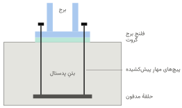
anchor-bolt cage under the tower (160 bolts on a 4.3 m circle; teaching)
extreme moment 185 MN m, weight 5.99 MN
pull on the worst bolt (4 M / n D - V / n): 1,036 kN
preload kN joint closed in the extreme?
600 NO - it opens (margin 0.58)
1,000 NO - it opens (margin 0.97)
1,250 yes (margin 1.21)
the cage needs about 1,250 kN a bolt (margin 1.2): bigger bolts
or more of them; pretensioned anchors keep the concrete
under the flange in compression and the bolts' fatigue
range small - re-tensioning after the first months is in
the O&M plangrout under the tower flange (ring 4.0-4.6 m, teaching)
from preload and weight: 50.8 MPa; plus extreme bending: 45.1 MPa
peak compression 95.9 MPa against a high-strength grout
(teaching 90 MPa class): use 1.07 - a wider flange ring or a
stronger grout follows from the higher preload
the grout is the highest-stressed material in the whole
foundation: its strength is tested (cubes), its curing
is controlled, and the bolts are tensioned only after it
has reached strength - a hold point (ch 29, n_itp)مثال 30.22 (پیشبارِ بیشتر، گروتِ قویتر) پرسش. با پیشبارِ 600 kN، اتصال در بارِ حدی بسته میماند؟ اگر نه، چه پیشباری لازم است و اثرش بر گروت چیست؟
پاسخ. نه: کششِ بدترین پیچ 1,036 kN است. پیشبارِ حدودِ 1,250 kN با حاشیهٔ 1.2 لازم است. فشارِ گروت آنوقت به 96 MPa میرسد، یعنی 1.07 بارِ ردهٔ آموزشیِ ۹۰.
تفسیر. یک تغییر تغییرِ دیگری میآورد: پیشبارِ بیشتر حلقهٔ فلنجِ پهنتر یا گروتِ قویتر میخواهد. گروت پرتنشترین مصالحِ کلِ فونداسیون است. مقاومتش آزمایش میشود، عملآوریاش کنترل میشود، و پیچها فقط پس از رسیدنش به مقاومت کشیده میشوند، که یک نقطهٔ توقف است. بازکشیِ پیچها پس از ماههای نخست هم در برنامهٔ بهرهبرداری است (بخش 30.4.14). وارسی: \(4 \times 185 \times 10^6/(160 \times 4.3) - 5.99 \times 10^6/160 = 1{,}036\,\text{kN}\).
30.3.9 میلگردِ دال
bottom reinforcement of the foundation slab under the pedestal
moment 2.4 MN m per metre, effective depth 1.6 m (teaching)
steel 3,833 mm2 per metre = 4.8 bars of 32 mm (every 210 mm)
bottom mesh both ways under the 24 m base: about 27 t of steel
the bending design is the simple part; anchorage of the
bars, crack width under fatigue, shear and punching round
the pedestal are checked by the structural engineer -
the bending schedule is the factory's order (lesson H)ایده. طراحیِ خمشیِ دال سادهترین بخش است: \(A_\text{s} = M/(f_\text{yd}\,z)\) با بازوی \(z \approx 0.9\,d\). مهارِ میلگردها، پهنای ترک زیرِ خستگی، برش، و برشِ سوراخکننده دورِ پدستال را مهندسِ سازه وارسی میکند. جدولِ خمِ میلگرد سفارشِ کارخانه است (بخش 30.4.10).
30.3.10 دوامِ بتن و پوشش
carbonation of the concrete cover, x = k sqrt(t) (teaching k values)
concrete k mm/sqrt(yr) years to reach 50 mm 60 mm
dense, low w/c (specified) 3.0 278 400
average 5.0 100 144
poorly cured (hot weather) 8.0 39 56
cover and curing, not strength alone, set the life of the
reinforcement: a hot-weather pour cured badly (ch 29) can
lose most of its protection within the plant's life;
sulphates from gypsum ground (T12) attack faster stilltower coating: years to first major maintenance (teaching durability
for the 320 um system of ch 11; the coating maker states real values)
inland desert, dry (low) 25 years
near a saline flat (medium) 15 years
splash of irrigation or brine (high) 8 years
the inside of the tower and the base flange, where
condensation and dust collect, often fail first; the
O&M plan inspects there before the outside (ch 52)مثال 30.23 (پوشش و عملآوری، نه فقط مقاومت) پرسش. بتنی که در گرما بد عملآوری شده، پوششِ 50 mm را در چند سال کربناته میکند؟
پاسخ. حدودِ 39 سال. در پایانِ عمرِ ۲۵ ساله، 40 mm از 50 از دست رفته است.
تفسیر. عمرِ میلگرد را پوشش و عملآوری تعیین میکنند، نه فقط مقاومت. دو فصل اینجا به هم میرسند: پوششسنجی و بتنِ گرمِ فصلِ ۲۹ (مثال 29.33، مثال 29.31) شرطِ دوامیاند که اینجا حساب شد. وارسی: \((50/8)^2 = 39\) سال.
- ستونی به محیطِ 0.55 m و عمقِ 2 m در خاکی با اصطکاکِ 25 kPa چه برکنشی تحمل میکند؟
- چرا ظرفیتِ جانبیِ ستون با مکعبِ عمق بالا میرود؟
- چرا آزمایشِ بیرونکشیدن بهتنهایی برای تعیینِ عمق بس نیست؟
- روکشِ 85 µm با خوردگیِ 3 µm/yr چند سال دوام دارد؟
- چرا حدِ خیز مقطعِ پرلین را تعیین میکند؟
- اتصالِ لغزشبحرانی بار را با چه چیزی منتقل میکند؟
- دمای آزمونِ ضربهٔ ورقِ برج را چه چیزی تعیین میکند؟
- گلوگاهِ جوشِ گوشهای با ساقِ 8 mm چقدر است؟
- کششِ بدترین پیچِ مهار با M = 150 MN m، ۱۲۰ پیچ و قطرِ 4.3 m چیست؟
- چرا پیچهای مهار فقط پس از رسیدنِ گروت به مقاومت کشیده میشوند؟
30.3.11 سختیِ خاک با کرنش کم میشود
برنامه:
python -m companion.ch30.examples_pایده. مدولِ برشیِ خاک ثابت نیست. در کرنشهای بسیار کوچک بیشینه است (\(G_0\)) و با بزرگشدنِ کرنش کم میشود. مدلِ هذلولویِ ساده با کرنشِ مرجعِ \(\gamma_\text{ref}\) چنین است:
\[ \frac{G}{G_0} = \frac{1}{1 + \gamma/\gamma_\text{ref}} \tag{30.15}\]
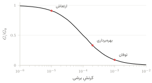
soil stiffness falls with strain (hyperbolic model, T07, teaching)
G0 = 75 MPa at very small strain; reference strain 1e-04
state strain G/G0 G MPa K GN m/rad f1 Hz
vibration, small 1e-05 0.91 68 280 0.213
operation, typical 2e-04 0.33 25 103 0.209
extreme storm 1e-03 0.09 7 28 0.194
the operating strain gives lesson B's 25 MPa; a storm
softens the ground further and lowers f1 for a while -
the frequency check uses the operating strain, the
rotation check the extreme one, and the geotechnical
report states both, from tests, not from this curveمثال 30.24 (کدام مدول برای کدام وارسی) پرسش. چرا وارسیِ بسامد با کرنشِ بهرهبرداری انجام میشود و وارسیِ دوران با کرنشِ توفان؟
پاسخ. چون بسامد در بارهای روزمره اهمیت دارد و دورانِ بزرگ در توفان. T07 در کرنشِ بهرهبرداری 25 MPa و در توفان حدودِ 7 MPa دارد.
تفسیر. در توفان بسامد موقتاً به 0.194 Hz میرسد، یعنی نزدیکِ لبهٔ 1P. اما روتور در آن هنگام پارک است. گزارشِ ژئوتکنیک هر دو مدول را از آزمونها میدهد، نه از این منحنیِ آموزشی (فصلِ ۲۹). وارسی: \(75/(1 + 2) = 25\,\text{MPa}\).
30.3.12 لغزشِ پیِ وزنی
sliding of the gravity base under the extreme load (teaching)
dense sand, phi 36 base friction 0.45: resistance 15.7 MN, FS 9.8
T07 medium sand, phi 30 base friction 0.36: resistance 12.8 MN, FS 8.0
vertical load 35.3 MN, horizontal 1.60 MN
a wind turbine base does not slide: the horizontal force
is small beside its weight; the moment governs (lift-off,
bearing, rotation) - the check is done and recorded, but
it is not where the design is decidedایده. مقاومتِ لغزش اصطکاکِ کفِ پی است: \(\mu V\). ضریبِ \(\mu\) با \(\tan(2\varphi/3)\) تخمین زده میشود. پیِ توربین بادی نمیلغزد، چون نیروی افقی در برابرِ وزنش کوچک است. لنگر حاکم است: بلندشدنِ لبه، باربری و دوران. وارسیِ لغزش انجام و ثبت میشود، اما طرح در آنجا تعیین نمیشود.
30.3.13 مقاومتِ تسلیم با ضخامت کم میشود
yield strength falls with plate thickness (typical S355 steps)
thickness mm fy MPa section-1 can (50 mm): fy used
up to 16 355
up to 40 345
up to 63 335
up to 80 325
stress at the top of section 1 (factored, teaching): 275 MPa
use with 355: 0.78; with the 50 mm value 335: 0.82
thickening a can for fatigue moves it into a lower yield
class: every check of the thick sections uses the yield
for its own thickness, from the mill certificate's product
standard (lesson C), never the grade's headline numberمثال 30.25 (ورقِ ضخیمتر، تسلیمِ کمتر) پرسش. کانِ 50 mm بخشِ نخست با کدام مقاومتِ تسلیم وارسی میشود؟
پاسخ. با 335 MPa، نه 355. بهرهوری از 0.78 به 0.82 میرسد.
تفسیر. ورقِ ضخیم در نورد کمتر کار میشود و مقاومتِ تسلیمِ کمتری دارد. پلکانهایش در استانداردِ محصولِ فولاد آمده است. ضخیمکردنِ کان برای خستگی آن را به ردهٔ تسلیمِ پایینتری میبرد. هر وارسیِ بخشهای ضخیم تسلیمِ ضخامتِ خودش را از گواهیِ کارخانه به کار میبرد (بخش 30.4.7). وارسی: \(275/335 = 0.82\).
30.3.14 خواندنِ آزمونِ بارگذاریِ شمع
ایده. منحنیِ بار و نشستِ شمع آرام خم میشود و نقطهٔ گسیختگیِ روشنی ندارد. روشِ دیویسون یک عددِ تعریفشده میدهد: جایی که منحنی از خطِ کوتاهشدگیِ کشسانِ شمع بهاضافهٔ یک فاصلهٔ ثابت میگذرد:
\[ s_\text{D} = \frac{P\,L}{A\,E} + 4\,\text{mm} + \frac{D}{120} \tag{30.16}\]
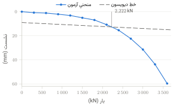
reading a static load test on a 0.6 m pile, 14 m long (synthetic)
load kN settlement mm offset line mm
0 0.0 9.0
300 0.8 9.5
600 1.1 10.0
900 2.1 10.5
1200 3.2 11.0
1500 5.1 11.5
1800 6.9 12.0
2100 10.8 12.5
2400 15.4 13.0
2700 22.4 13.5
3000 31.4 14.0
3300 43.8 14.4
3600 59.7 14.9
elastic line PL/AE plus 4 mm + D/120 = 9.0 mm (Davisson)
the curve crosses it at about 2,222 kN: the pile's capacity
the method gives one defined number from a curve that
bends gradually; the test pile, its loading steps and the
method are named in the test specification before the testمثال 30.26 (یک عدد از یک منحنی) پرسش. ظرفیتِ شمعِ آزمون به روشِ دیویسون چقدر است؟
پاسخ. حدودِ 2,220 kN.
تفسیر. روش پیش از آزمون در مشخصاتِ آزمون نام برده میشود، همراهِ شمعِ آزمون و گامهای بارگذاری. اگر روش پس از دیدنِ منحنی انتخاب شود، هر کس عددِ دلخواهش را میگیرد. طرحِ S4 در آزمایشگاهِ ت به همین عدد وابسته است. وارسی: \(4 + 600/120 = 9.0\,\text{mm}\) فاصلهٔ ثابت.
30.3.15 کارایی گروهِ شمع
efficiency of a pile group (Converse-Labarre, teaching)
group d m spacing m theta deg efficiency
3 x 3 0.6 1.8 18.4 0.73
5 x 5 0.6 1.8 18.4 0.67
5 x 5 0.6 2.4 14.0 0.75
a crowded group carries less than the sum of its piles in
clay; driven piles in sand can carry more, because driving
densifies the sand between them - the formula is a
reminder that a group is not a sum, and the engineer uses
the method that fits the soil and the installationایده. گروهِ شمع جمعِ شمعهایش نیست. در رس، شمعهای نزدیک به هم ناحیههای تنشِ مشترک دارند و گروه کمتر از جمع میبرد. فرمولِ کانورس-لابار این اثر را با زاویهٔ \(\theta = \arctan(d/s)\) نشان میدهد. در ماسه، شمعِ کوبشی ماسهٔ میانِ شمعها را متراکم میکند و گروه شاید بیشتر ببرد. مهندس روشی را برمیگزیند که با خاک و روشِ اجرا جور باشد.
- نسبتِ \(G/G_0\) در کرنشِ \(\gamma = \gamma_\text{ref}\) چقدر است؟
- چرا بسامد در توفان کم میشود و چرا این خطرناک نیست؟
- ضریبِ اصطکاکِ کف با \(\varphi = 33^\circ\) چقدر است؟
- چرا پیِ توربین نمیلغزد؟
- ورقِ 45 mm از S355 با کدام تسلیم وارسی میشود؟
- فاصلهٔ ثابتِ دیویسون برای شمعِ 0.9 m چقدر است؟
- چرا روشِ تفسیرِ آزمون پیش از آزمون انتخاب میشود؟
- کاراییِ گروهِ ۴ در ۴ با \(d = 0.6\) و \(s = 1.8\) چقدر است؟
30.4 پ. ساخت در کارخانه و برپایی در ساختگاه
سازه همانقدر خوب است که ساخته شده. فرضهای طراحی، مانندِ ضریبِ کاهشِ کمانش، ردهٔ جزئیاتِ جوش، پیشبارِ پیچ و پوشش، فقط وقتی برقرارند که ساخت آنها را برآورده کند. این بخش زنجیرهٔ کارخانه تا برپایی را با سوابقش دنبال میکند. برگهٔ همراهِ ساخت (تراولر) آنچه انجام شد را ثبت میکند و افرادِ دارای صلاحیت تصمیم میگیرند که کافی است یا نه. رواداریها و خواندهها آموزشیاند (A-362).
برنامهها:
python -m companion.ch30.lab_e # traveler, welds, dimensions, coating, NDT
python -m companion.ch30.examples_h # plates, bridge, bolting, rebar, verticality
python -m companion.ch30.examples_k # review, findings, settlement, re-tension30.4.1 برگهٔ همراهِ ساختِ یک بخشِ برج
TRAVELER = [ # step, record, acceptance (teaching), signed by, H/W/R
("plate receipt", "mill inspection certificate, heat no.",
"grade, toughness", "QC", "H"),
("cutting and bevels", "cut list, bevel gauge", "drawing", "fitter", "R"),
("rolling of cans", "ovality on the roll", "tolerance", "QC", "W"),
("longitudinal seams (SAW)", "WPS no., welder, parameters",
"WPS window", "welding coord.", "W"),
("circumferential seams", "WPS no., welder, parameters",
"WPS window", "welding coord.", "W"),
("flange fit-up and weld", "flatness before and after",
"flatness", "QC", "H"),
("door frame weld", "WPS, preheat record", "WPS window",
"welding coord.", "H"),
("UT of seams, MT of door", "NDT reports", "no rejectable flaw",
"NDT level 2", "H"),
("dimensional survey", "length, ovality, straightness", "tolerances",
"surveyor", "H"),
("blast and coating", "profile, DFT, adhesion", "coating spec",
"coating insp.", "H"),
("internals and marking", "checklist, serial no.", "drawing", "QC", "R"),
("release for shipping", "data book complete", "all above closed",
"client insp.", "H"),
]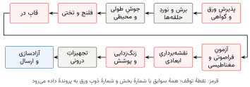
fabrication traveler of tower section 1 (H hold, W witness, R record)
1 [H] plate receipt mill inspection certificate, heat no.
accept: grade, toughness; signed by QC
2 [R] cutting and bevels cut list, bevel gauge
accept: drawing; signed by fitter
3 [W] rolling of cans ovality on the roll
accept: tolerance; signed by QC
4 [W] longitudinal seams (SAW) WPS no., welder, parameters
accept: WPS window; signed by welding coord.
5 [W] circumferential seams WPS no., welder, parameters
accept: WPS window; signed by welding coord.
6 [H] flange fit-up and weld flatness before and after
accept: flatness; signed by QC
7 [H] door frame weld WPS, preheat record
accept: WPS window; signed by welding coord.
8 [H] UT of seams, MT of door NDT reports
accept: no rejectable flaw; signed by NDT level 2
9 [H] dimensional survey length, ovality, straightness
accept: tolerances; signed by surveyor
10 [H] blast and coating profile, DFT, adhesion
accept: coating spec; signed by coating insp.
11 [R] internals and marking checklist, serial no.
accept: drawing; signed by QC
12 [H] release for shipping data book complete
accept: all above closed; signed by client insp.
7 hold points; every record carries the section's serial
number and the plates' heat numbers, so any later finding
traces back to the steel mill (supplier traceability)30.4.2 دستورالعملِ جوشکاری و پنجرهاش
ایده. هر جوش با یک دستورالعملِ جوشکاری (WPS) زده میشود: ولتاژ، جریان، سرعتِ حرکت، پیشگرمایش و مصرفیها، هر کدام با یک بازه. این دستورالعمل با یک آزمونِ تأییدِ روش (PQR) ثابت شده که درونِ همان بازه جوشِ سالم میدهد. گرمای ورودی پنجره را خلاصه میکند:
\[ Q = \eta\,\frac{U\,I}{v_\text{w}} \tag{30.17}\]
در این رابطه \(\eta\) بازدهِ فرایند است، \(U\) ولتاژ، \(I\) جریان و \(v_\text{w}\) سرعتِ حرکت.
submerged-arc circumferential seam: recorded passes against the WPS
(window V 30-34, A 550-650, travel 8-11 mm/s, heat input 1.3-2.2 kJ/mm)
pass V A mm/s kJ/mm result
1 32 600 9.5 1.62 ok
2 33 620 9.0 1.82 ok
3 31 590 10.5 1.39 ok
4 34 660 9.2 1.95 OUT: A
5 32 610 7.0 2.23 OUT: s, q
6 30 560 10.0 1.34 ok
pass 4 runs above the current range and pass 5 too slow
(heat input too high): both go to the welding coordinator;
the weld is assessed (and tested) before acceptance - the
WPS was qualified only inside its window30.4.3 نقشهبرداریِ ابعادی
dimensional survey (teaching tolerances: ovality <= 0.7 % of D;
flange flatness <= 1.2 mm over the circle, read at 12 points)
can ovality % result
1 0.50 ok
2 0.54 ok
3 0.47 ok
4 0.55 ok
5 0.59 ok
6 0.82 OUT
7 0.52 ok
8 0.52 ok
flange flatness at 12 points, mm: 0.3 0.6 0.4 0.9 1.4 0.5 0.3 0.8 0.4 0.7
0.5 0.6
range 1.1 mm -> ok
can 6 is out of round: re-rounding or a concession from
the designer (ovality lowers the buckling strength,
lesson B); the flange is within tolerance - it is
measured again after welding, when heat distorts it30.4.4 ضخامتِ فیلمِ خشکِ پوشش
dry film thickness of the outer coating, 40 readings (um)
(teaching acceptance: mean >= nominal 320; none below 80 %;
the coating specification sets the real rule)
mean 341, s 35, lowest 248, above 400: 1
readings below 256: 1 -> repair the spot and re-measure
a good mean hides a thin spot: the rule has two parts,
and thick spots are noted too (they crack); adhesion
is tested on a witness panel, not on the tower30.4.5 آزمونِ غیرمخربِ درزها
ultrasonic testing of the section's seams (teaching numbers)
circumferential and longitudinal seams: about 104 m, 100 % UT
rejectable indications found: 3 (lack of fusion, slag)
repair: excavate, re-weld to the repair WPS, re-test the
repaired length and a margin either side
repair rate 0.9 % of length (0.3 m a repair)
a rising repair rate is a process signal (a welder, a
consumable lot, a machine) - the welding coordinator
reviews it weekly; the NDT operator is certified (level 2)
and the method qualified for the thickness30.4.6 وارسیهایی که فردِ دارای صلاحیت میخواهند
checks that need qualified people (not the traveler's author)
tower design and its load set turbine maker's structural engineer
design verification independent verifier / certification body
welding procedures (WPS/PQR) welding engineer; witnessed qualification
welder qualifications examiner of the qualification body
NDT procedures and results NDT level 3 (procedures), level 2 (tests)
concessions (out-of-tolerance) designer, in writing, before release
coating certified coating inspector
release of the section client's inspector, final hold point
the traveler records what was done; these people decide
whether it is good enough - their names and certificates
are part of the data bookمثال 30.27 (مثالِ کارشده: برگهٔ همراه و برنامهٔ بازرسیِ بخشِ ۱ برج) پرسش. برای بخشِ ۱ برج (D 4.50–4.12 m، 25 m) یک برگهٔ همراهِ ساخت و برنامهٔ بازرسی بنویسید. سوابقِ نمونه را بخوانید: پاسهای جوش، بیضیشدگی، تختیِ فلنج، ضخامتِ پوشش و نتیجهٔ آزمونِ فراصوتی. وارسیهایی را که مهندسِ سازه یا بازرسِ دارای صلاحیت میخواهند جدا کنید.
پاسخ.
- برگهٔ همراه: دوازده گام با هشت نقطهٔ توقف، از پذیرشِ ورق با گواهیِ کارخانهٔ فولاد تا آزادسازی برای ارسال. هر سابقه شمارهٔ بخش و شمارهٔ ذوبِ ورق را دارد.
- جوش: پاسِ ۴ جریانِ بیرون از پنجره دارد و پاسِ ۵ سرعتِ کم با گرمای ورودیِ 2.23 kJ/mm بالای سقفِ 2.2. هر دو به هماهنگکنندهٔ جوش میروند.
- ابعاد: حلقهٔ ۶ بیضیشدگیِ 0.82 % دارد، بیش از حدِ 0.7 %، و گرد کردنِ دوباره یا موافقتِ طراح لازم است. تختیِ فلنج با بازهٔ 1.1 mm در حد است.
- پوشش: میانگینِ 341 µm از 320 بیشتر است، اما یک نقطهٔ 248 µm زیرِ 80 % است و ترمیم و اندازهگیریِ دوباره میخواهد.
- آزمونِ فراصوتی: سه نشانهٔ ردکردنی روی حدودِ 104 m درز (نرخِ تعمیرِ 0.9 %).
- افرادِ دارای صلاحیت: هشت وارسی جدا شدهاند (طراحیِ برج، وارسیِ مستقل، روشها، جوشکاران، آزمونِ غیرمخرب، موافقتها، پوشش، آزادسازی).
تفسیر. برگهٔ همراه آنچه انجام شد را ثبت میکند. افرادِ دارای صلاحیت کافیبودنش را تعیین میکنند و نام و گواهیشان هم بخشی از پروندهٔ داده است. هر یافته به فرضی در طراحی برمیگردد. بیضیشدگی مقاومتِ کمانش را کم میکند (مثال 30.7). جوشِ بیرون از پنجره ردهٔ جزئیاتِ خستگی را زیرِ سؤال میبرد (مثال 30.8). نقطهٔ نازکِ پوشش دوامِ برج را. مقدارِ «میانگینِ خوب» هیچکدام را پنهان نمیکند، چون هر قاعده دو بخش دارد. وارسی: گرمای ورودیِ پاسِ ۵: \(0.8 \times 32 \times 610/7.0/1000 = 2.23\,\text{kJ/mm}\).
تأییدِ دستورالعملهای جوشکاری، صلاحیتِ جوشکاران، روشها و نتیجههای آزمونِ غیرمخرب، و موافقت با انحراف از رواداری کارِ افرادِ دارای گواهی و طراح است. این فصل روالِ آزمون را نمیآموزد، فقط هدف و شاهدش را.
- چرا هر سابقهٔ ساخت شمارهٔ ذوبِ ورق را دارد؟
- گرمای ورودیِ 30 V، 580 A و 9 mm/s با بازدهِ 0.8 چیست؟
- چرا جوشی که بیرون از پنجرهٔ دستورالعمل زده شده، حتی اگر سالم به نظر برسد، ارزیابی میشود؟
- بیضیشدگیِ حلقهای با قطرهای 4.512 و 4.489 m چند درصد است؟
- چرا تختیِ فلنج پس از جوشکاری دوباره اندازهگیری میشود؟
- قاعدهٔ دوبخشیِ ضخامتِ پوشش چیست و چرا میانگینِ خوب بس نیست؟
- نرخِ تعمیرِ رو به افزایش نشانهٔ چیست؟
- چه کسی با انحراف از رواداری موافقت میکند؟
30.4.7 از ورق تا حلقه: فولادی که سفارش داده میشود
cans cut from plate for the four sections (teaching; ch 11 geometry)
section cans plate length m steel t ordered t (8 % scrap)
1 10 13.54 122 132
2 10 12.36 97 105
3 10 11.20 70 76
4 10 10.02 51 55
shell steel 341 t (flanges, door frame and internals extra);
each can is one plate rolled into a ring: the plate's heat
number goes onto the can and into the data book, so a
later finding traces to the mill (lab E)ایده. هر حلقهٔ برج یک ورق است که نورد و جوشِ طولی شده. هر بخش ده حلقه دارد و دورِ لولهٔ میانگین طولِ ورق را تعیین میکند. سفارشِ فولاد با حدودِ 8 % ضایعات بسته میشود. فولادِ پوسته با جدولِ فصلِ ۱۱ (341 t) یکی است، اما دیوارههای ضخیمترِ مثال 30.8 سفارش را حدودِ 32 t بالا میبرند.
30.4.8 بخشِ پایه در برابرِ پلِ مسیر
the base section against a bridge on the delivery route (teaching)
bridge clearance 4.85 m; low-loader deck 0.3 m above the road
section D m height loaded m margin m
1 4.50 4.80 0.05
2 4.12 4.42 0.43
3 3.75 4.05 0.80
4 3.38 3.68 1.17
the base section clears by 5 cm: a route survey measures
every bridge and wire, and a section a few centimetres
larger takes another road or a split design (ch 31) - the
tower's base diameter is a logistics decision as wellمثال 30.28 (پنج سانتیمتر حاشیه) پرسش. بخشِ پایه با قطرِ 4.50 m روی کفیِ 0.30 m از زیرِ پلی با ارتفاعِ آزادِ 4.85 m میگذرد؟
پاسخ. بله، با 5 cm حاشیه.
تفسیر. قطرِ پایهٔ برج یک تصمیمِ حمل هم هست. نقشهبرداریِ مسیر هر پل و سیم را اندازه میگیرد. بخشی چند سانتیمتر بزرگتر یا مسیرِ دیگری میخواهد یا طرحِ دوتکه (فصلِ ۳۱). ضخیمکردنِ دیواره از درون قطرِ بیرونی را تغییر نمیدهد. وارسی: \(4.50 + 0.30 = 4.80\,\text{m}\).
30.4.9 سفتکردنِ پیچها در برپایی
bolt tightening during erection (two passes, 2.5 min a bolt a pass,
two tools working; teaching)
joint bolts hours
base (anchor cage) 160 6.7
flange 1-2 120 5.0
flange 2-3 108 4.5
flange 3-4 96 4.0
tower-top / yaw 90 3.8
total about 24 hours of tightening for one turbine
the next section is lifted only after the joint below has
its first pass at the maker's value: bolting, not the
crane, often sets the pace of erection (ch 31), and every
bolt's final value is recorded for the data bookایده. پیچهای هر فلنج در دو دور سفت میشوند و بخشِ بعدی فقط پس از دورِ نخستِ اتصالِ زیرین بالا میرود. حدودِ ۲۴ ساعت سفتکاری برای هر توربین یعنی سرعتِ برپایی را اغلب پیچها تعیین میکنند، نه جرثقیل (فصلِ ۳۱). مقدارِ نهاییِ هر پیچ برای پروندهٔ داده ثبت میشود.
30.4.10 جدولِ خمِ میلگرد
bending schedule of one 24 m foundation (teaching bar marks)
mark dia mm length m number mass t
B1 bottom radial 32 11.0 320 22.2
B2 bottom ring 32 70.0 26 11.5
T1 top radial 25 10.0 300 11.6
P1 pedestal vertical 32 4.5 180 5.1
L1 shear links 16 3.0 1400 6.6
total 57 t, about 64 kg per m3 of concrete
the schedule is the cutting and bending factory's order;
cages are tied to it, checked bar by bar against it (cover
and spacing, ch 29) and released at a hold pointمثال 30.29 (سفارشِ کارخانهٔ خم) پرسش. جدولِ خمِ فونداسیونِ 24 m چند تن فولاد دارد و با برآوردِ فصلِ ۲۹ چه فرقی دارد؟
پاسخ. حدودِ 57 t، یعنی 64 kg/m³. برآوردِ مقادیرِ فصلِ ۲۹ 90 kg/m³ گرفته بود.
تفسیر. برآوردِ اولیه محتاطانه بود. اما حجمِ بتن از 620 به 893 m³ رسید (بخش 30.5). پس فولادِ هر فونداسیون نزدیکِ همان برآورد ماند و بتن 44 % بیشتر شد. جدولِ خم سفارشِ کارخانه است. قفسهها با آن بسته و میله به میله در برابرش وارسی میشوند (پوشش و فاصله، مثال 29.33)، سپس در نقطهٔ توقف آزاد میشوند. وارسی: \(320 \times 11 \times \pi \times 0.016^2 \times 7{,}850/1000 = 22.2\,\text{t}\).
30.4.11 شاقولیِ برجِ برپاشده
verticality of the erected tower (teaching tolerance 3 mm per m)
differential settlement across the 24 m base: 15 mm -> 0.62 mm/m
from flange tolerances: 0.60 mm/m
total 1.23 mm/m -> 123 mm at the hub; limit 300 mm
within the limit, and the settlement survey continues:
a foundation that keeps tilting is a finding long before
it is a failure (lesson K)30.4.12 وارسیِ مستقل و یافتههای بازبینیِ طراحی
ایده. هر بخشِ بستهٔ سازهای یک طراح و یک وارسیکنندهٔ مستقل دارد. وارسیکننده با محاسبهٔ خودش وارسی میکند، نه با خواندنِ محاسبهٔ طراح. فونداسیونهای مختصِ ساختگاهِ توربینهای دارای گواهیِ نوعی بخشی از ارزیابیِ ساختگاهاند (فصلِ ۱۱).
who designs and who checks the structural package (teaching)
design basis and load set
designed by turbine maker; checked by certification body
tower (strength, buckling, fatigue)
designed by maker's engineer; checked by certification body
foundation (geotechnical)
designed by geotechnical engineer; checked by independent checker
foundation (structural)
designed by structural engineer; checked by independent checker
anchor cage and grout
designed by maker / engineer; checked by independent checker
PV structures and piles
designed by PV structure supplier; checked by owner's engineer + tests
line towers and foundations
designed by line designer; checked by network operator / checker
substation structures
designed by substation designer; checked by owner's engineer
the checker is independent of the designer and checks
with its own calculation, not by reading the designer's;
site-specific foundations of type-certified turbines are
part of the site assessment (ch 11) - the owner's
engineer only follows the findings to closurefindings of the independent design review (synthetic)
finding class n open
load set does not match the turbine's class major 1 0
groundwater range not used (ch 29 Q6) major 1 1
fatigue of door frame welds not shown major 1 0
rocking stiffness below the maker's value at T07 major 1 0
drawing and calculation give different cover minor 3 0
missing bar marks in the schedule minor 5 2
units mixed in one table editorial 4 0
open major findings: 1 -> construction of the affected
foundation waits; a major finding closes with a revised
calculation the checker accepts, not with a reply letterمثال 30.30 (یافتهٔ عمده با محاسبه بسته میشود) پرسش. کدام یافتهٔ عمده هنوز باز است و چه اثری دارد؟
پاسخ. «بازهٔ آبِ زیرزمینی به کار نرفته» (پرسشِ Q6 فصلِ ۲۹). ساختِ فونداسیونِ مربوط منتظر میماند.
تفسیر. یافتهٔ عمده با محاسبهٔ بازنگریشدهای بسته میشود که وارسیکننده بپذیرد، نه با نامهٔ پاسخ. این همان زنجیری است که فصلِ ۲۹ شروع کرد: پرسشی که پاسخ ندارد، ساخت را نگه میدارد. وارسی: چهار یافتهٔ عمده که یکی باز است.
30.4.13 پایشِ نشست
settlement of the T07 foundation edge after erection (synthetic survey)
days 7 30 60 120 240 365
mm 6.0 9.5 11.0 12.6 14.1 15.0
fit s = 5.23 log10(t) + 1.67; at 25 years about 22 mm
settlement slows with log time, as creep of sand does;
the 25-year projection is checked against the designer's
limit and the survey goes on until the readings flatten -
a straight line on a linear time axis would be a warning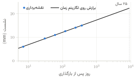
مثال 30.31 (خطِ راست روی لگاریتم، نه روی زمان) پرسش. نشستِ ۲۵ سالهٔ لبهٔ فونداسیونِ T07 از یک سال پایش چقدر برآورد میشود؟
پاسخ. حدودِ 22 mm، با برازشِ \(s = 5.23\log_{10} t + 1.67\).
تفسیر. نشستِ ماسه با لگاریتمِ زمان کند میشود. پیشبینی با حدِ طراح مقایسه میشود و نقشهبرداری تا تختشدنِ خواندهها ادامه مییابد. اگر نقطهها روی محورِ زمانِ خطی راست بودند، یعنی نشست کند نمیشود، و آن هشدار است. وارسی: \(5.23 \times \log_{10}(9{,}125) + 1.67 = 5.23 \times 3.96 + 1.67 = 22.4\,\text{mm}\).
30.4.14 بازکشیِ پیچهای مهار
anchor-bolt re-tension check after six months (160 bolts, synthetic)
remaining preload: mean 95.6 %, lowest 86 %
below 90 %: 4 bolts -> re-tensioned and recorded
some loss is expected (grout creep, embedding); two bolts
far below the rest point at a local cause - grout under
that sector is inspected before they are simply retightenedبرپایی، بالابردن و سفتکردنِ پیچ در ارتفاع زیرِ برنامهٔ بالابری و ایمنیِ فصلهای ۳۱ و ۳۲ و روالِ سازنده انجام میشود. این فصل فقط سوابق و شاهدِ آن کارها را نشان میدهد.
- طولِ ورقِ یک حلقه با قطرِ میانگینِ 4.0 m چقدر است؟
- چرا ضخیمکردنِ دیواره از درون مسئلهٔ پل را عوض نمیکند؟
- چرا بخشِ بعدیِ برج پیش از دورِ نخستِ سفتکاری بالا نمیرود؟
- وزنِ ۱۴۰۰ رکابِ 16 mm به طولِ 3 m چقدر است؟
- کجیِ 1.0 mm/m در ارتفاعِ هابِ 100 m چه جابهجاییای است؟
- چرا وارسیکننده با محاسبهٔ خودش وارسی میکند؟
- یافتهٔ عمده چگونه بسته میشود؟
- نشستی که روی محورِ زمانِ خطی راست است چه میگوید؟
- چرا دو پیچی که پیشبارشان بسیار کمتر از بقیه است پیش از سفتکردن بررسی میشوند؟
30.4.15 پراکندگیِ پیشبارِ پیچ
برنامه:
python -m companion.ch30.examples_q
python -m companion.ch30.examples_spreload of a flange bolt by tightening method (M48 10.9, teaching)
nominal preload 0.7 fub As = 1,031 kN
method scatter lowest kN bolts for same min
torque (lubricated, k known) 25 % 773 100 %
torque + angle 15 % 876 88 %
hydraulic tensioning 10 % 928 83 %
the design must assume the lowest preload the method can
give: with torque alone the flange needs about a fifth
more bolt force than with tensioning - or fewer bolts
slip; the maker's procedure names the method, the tool
calibration and the lubricant, and checks a sampleمثال 30.32 (طرح با کمترین پیشبار) پرسش. با سفتکردنِ گشتاوری و پراکندگیِ 25 %، طرح باید کدام پیشبار را فرض کند؟
پاسخ. کمترین مقدار، یعنی 773 kN از 1,031 kN اسمی. با کششدهندهٔ هیدرولیکی 928 kN است.
تفسیر. گشتاور پیشبار را از راهِ اصطکاک میسازد و اصطکاک پراکنده است. کششدهنده پیچ را مستقیم میکشد. فلنج با روشِ گشتاوری حدودِ یکپنجم نیروی پیچِ بیشتری لازم دارد، وگرنه شمارِ پیچها کافی نیست. روالِ سازنده روش، واسنجیِ ابزار و روانکننده را نام میبرد و نمونهای را وارسی میکند (بخش 30.4.9). وارسی: \(928/773 = 1.20\).
30.4.16 کِی میتوان گروت را بارگذاری کرد
ایده. مقاومتِ گروت و بتن به دما و زمان بستگی دارد. روشِ بلوغ این دو را در یک عدد جمع میکند:
\[ M = \sum_t (T - T_0)\,\Delta t \tag{30.18}\]
در این رابطه \(T_0\) دمای مبناست و منحنیِ مقاومت-بلوغ را تأمینکنندهٔ گروت میدهد. دمای ساعتیِ سالِ داده نشان میدهد در هر فصل چند ساعت لازم است.
when the grout may be loaded: maturity (Nurse-Saul, teaching)
M = sum (T - (-10)) dt; 70 % strength at 1,800 C-h (supplier's curve)
pour on the 1st at 08:00 grout = air + 5 K hours to 70 %
month 1 mean 8.2 C 99
month 4 mean 17.9 C 65
month 7 mean 32.2 C 43
month 10 mean 26.0 C 51
a January pour waits about twice as long as a July one
before the anchors may be tensioned; the hold point is
the measured strength of cubes cured beside the grout
(or a maturity logger), never the calendar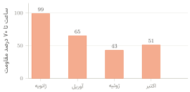
مثال 30.33 (زمستان دو برابر) پرسش. گروتی که اولِ دیماه، یعنی ژانویه، ریخته شود چند ساعت پس از ریختن به 70 % مقاومت میرسد؟
پاسخ. حدودِ 99 ساعت، در برابرِ 43 ساعت در ژوئیه.
تفسیر. کششدادنِ پیچهای مهار پیش از رسیدنِ گروت به مقاومت ممکن است آن را خرد کند. نقطهٔ توقف مقاومتِ اندازهگیریشدهٔ مکعبهایی است که کنارِ گروت عمل آمدهاند، یا یک ثبتکنندهٔ بلوغ. تقویم نقطهٔ توقف نیست (بخش 30.4.14). وارسی: \(99/43 = 2.3\).
30.4.17 نمودارِ کنترلِ تعمیرِ جوش
ایده. نرخِ تعمیرِ جوش هر هفته کمی بالا و پایین میرود. نمودارِ کنترل پراکندگیِ عادی را از علتی که باید پیدا شود جدا میکند. حدِ بالا با نرخِ میانگینِ \(\bar p\) و \(n\) جوشِ آزموده چنین است:
\[ \text{UCL} = \bar p + 3\sqrt{\frac{\bar p\,(1-\bar p)}{n}} \tag{30.19}\]
weld repairs per week (120 welds tested by UT, synthetic)
centre line from weeks 1-10: 2.7 %; upper limit 7.1 %
week repairs rate % signal
1 2 1.7
2 3 2.5
3 1 0.8
4 4 3.3
5 5 4.2
6 6 5.0
7 3 2.5
8 1 0.8
9 3 2.5
10 4 3.3
11 2 1.7
12 12 10.0 ABOVE
13 15 12.5 ABOVE
14 10 8.3 ABOVE
15 3 2.5
16 5 4.2
the chart separates the normal scatter of a stable process
from a cause worth finding: weeks above the limit start a
search (here a new welder), not a blame - and the repairs
themselves are re-tested like any weldهفتههای بالای حد جستوجو را آغاز میکنند، نه سرزنش را. در اینجا علت جوشکاری تازهکار بود. تعمیرها خودشان مانندِ هر جوشِ دیگری دوباره آزموده میشوند (بخش 30.4.5).
30.4.18 انباشتِ رواداریها در قفسهٔ مهار
tolerance stack-up: will the tower flange drop over the anchors?
contribution +/- mm
anchor cage template, hole position 2.0
cage set-out on site (survey) 1.5
cage movement in a controlled pour 1.0
bottom flange hole position (factory) 1.0
worst case 5.5 mm; root-sum-square 2.9 mm; hole clearance 3.0 mm
worst case does not fit, the statistical sum does - but
only if the parts are independent and the pour is
controlled; a top template held in place during the pour
and a survey before the grout make the RSS honestمثال 30.34 (بدترین حالت یا جمعِ آماری) پرسش. آیا فلنجِ پایینِ برج روی پیچهای مهار مینشیند؟
پاسخ. بدترین حالت 5.5 mm است و جا نمیشود. جمعِ ریشهٔ مجذورها 2.9 mm است و در لقیِ 3.0 mm جا میشود.
تفسیر. جمعِ آماری فقط وقتی درست است که سهمها مستقل باشند و بتنریزی کنترل شود. الگوی بالایی که در طولِ بتنریزی سرِ جایش میماند و نقشهبرداری پیش از گروت، جمعِ آماری را صادق نگه میدارند. وارسی: \(\sqrt{2^2 + 1.5^2 + 1^2 + 1^2} = 2.9\).
30.4.19 عمرِ خستگی از بارهای اندازهگیریشده
fatigue life from measured loads (teaching; damage ~ DEL^m)
design DEL 30 MN m for 25 years
measured DEL MN m m = 3: life years m = 5: life years
30 25.0 25.0
28 30.7 35.3
26 38.4 51.1
24 48.8 76.3
five years of strain-gauge or SCADA-based load estimates
showing 26 instead of 30 MN m would leave the welds about
13 more years (m = 3) - a case for life extension that an
inspection, the measured data's uncertainty and the
certifier's assessment must all supportمثال 30.35 (افزایشِ عمر با شاهد) پرسش. اگر بارِ معادلِ آسیبِ اندازهگیریشده 26 بهجای 30 MN m باشد، جوشها چند سال دوام میآورند؟
پاسخ. با شیبِ ۳ حدودِ 38 سال، یعنی ۱۳ سال بیشتر از عمرِ طرح.
تفسیر. آسیب با توانِ \(m\) از بار بالا میرود و کاهشِ کوچکِ بار عمر را بسیار بیشتر میکند. افزایشِ عمر اما شاهد میخواهد: بازرسیِ جوشها و پیچها، عدمِ قطعیتِ دادههای اندازهگیریشده، و ارزیابیِ گواهیدهنده (فصلِ ۵۳). وارسی: \(25 \times (30/26)^3 = 38.4\).
30.4.20 بازرسیِ نمونهای پیچها
ایده. اگر از \(N\) پیچ، \(k\) تا شل باشند و \(n\) پیچ بازرسی شود، احتمالِ یافتنِ دستکم یکی چنین است:
\[ P = 1 - \frac{\binom{N-k}{n}}{\binom{N}{n}} \tag{30.20}\]
inspecting a sample of flange bolts: the chance to find a loose one
120 bolts in a flange; k of them loose
sample k = 1 k = 3 k = 6
6 0.05 0.14 0.27
12 0.10 0.27 0.48
24 0.20 0.49 0.75
60 0.50 0.88 0.99
a 10 % sample (12 bolts) finds one of three loose bolts only
a quarter of the time: early in life, when settling
relaxes preload, every bolt is checked (lesson C); a
sample is for later years, and a loose one found in it
turns the sample into a full checkنمونهٔ دهدرصدی سه پیچِ شل را فقط در یکچهارمِ موارد پیدا میکند. پس در سالهای نخست، که نشست پیشبار را کم میکند، همهٔ پیچها وارسی میشوند. نمونه برای سالهای بعد است و اگر در آن پیچِ شلی پیدا شود، وارسی کامل میشود.
30.4.21 پایشِ بسامد برای دیدنِ نرمشدنِ پی
how long monthly frequency estimates take to show a drift
noise of one monthly estimate 1.0 mHz; drift -0.5 % a year
months slope SE mHz/yr drift mHz/yr detected (3 SE)?
12 1.00 1.04 no
24 0.35 1.04 no
36 0.19 1.04 yes
60 0.09 1.04 yes
a slow softening of the foundation hides in the noise for
about two years; frequency trends are a useful early
warning only with a long record, the same sensor, and
corrections for temperature and rotor stateایده. بسامدِ برج را میتوان از شتابسنجِ ناسل هر ماه تخمین زد. نرمشدنِ آرامِ پی بسامد را کم میکند، اما این روند تا حدودِ دو سال در نوفهٔ اندازهگیری پنهان میماند. پایشِ بسامد فقط با سابقهٔ طولانی، حسگرِ یکسان، و اصلاح برای دما و حالتِ روتور هشدارِ زودهنگامِ مفیدی است.
- چرا سفتکردنِ گشتاوری پراکندگیِ بیشتری از کششدهنده دارد؟
- بلوغِ ۲۴ ساعت در 20 درجه با دمای مبنای −10 درجه چقدر است؟
- چرا تقویم نقطهٔ توقف برای کششدادنِ پیچهای مهار نیست؟
- حدِ بالای نمودارِ کنترل با \(\bar p = 0.03\) و \(n = 100\) چقدر است؟
- جمعِ ریشهٔ مجذورِ \(\pm 2\) و \(\pm 2\) و \(\pm 1\) چقدر است؟
- بارِ معادلِ 28 MN m بهجای 30 با شیبِ ۵ چند سال عمر میدهد؟
- احتمالِ یافتنِ یک پیچِ شل از 120 با بازرسیِ 24 پیچ چقدر است؟
- چرا روندِ بسامد دیر دیده میشود؟
30.4.22 پیشبار پیچِ مهار را از خستگی حفظ میکند
ایده. در اتصالِ پیشبارشده، کششِ بیرونی بیشترش فشارِ قطعههای فشرده را کم میکند و فقط سهمِ کوچکی به پیچ میرسد. ضریبِ بار این سهم است:
\[ \Phi = \frac{k_\text{b}}{k_\text{b} + k_\text{c}}, \qquad \Delta F_\text{b} = \Phi\,\Delta F \tag{30.21}\]
در این رابطه \(k_\text{b}\) سختیِ پیچ است و \(k_\text{c}\) سختیِ قطعههای فشرده. تا وقتی اتصال باز نشده، این رابطه برقرار است.
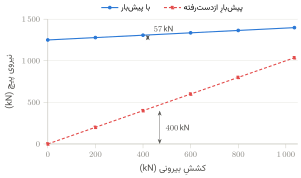
why preload protects an anchor bolt from fatigue (joint diagram)
load factor phi = kb/(kb+kc) = 0.14; preload 1,250 kN
external pull kN bolt force (preloaded) bolt force (lost preload)
0 1250 0
200 1279 200
400 1307 400
600 1336 600
800 1364 800
1036 1398 1036
a fatigue cycle of 400 kN gives the tight bolt 57 kN of range,
the slack bolt the full 400 kN - seven times more, and
with slope 3 about 343 times the damage: the re-tensioning
of lesson C is a fatigue measure as much as a strength oneمثال 30.36 (سیصد برابر آسیب) پرسش. چرخهٔ 400 kN در پیچِ پیشبارشده و پیچِ شل چه دامنهای میسازد؟
پاسخ. 57 kN در پیچِ پیشبارشده و 400 kN در پیچِ شل، یعنی هفت برابر.
تفسیر. با شیبِ ۳، هفت برابر دامنه حدودِ 343 برابر آسیب است. بازکشیِ پیچهای مهار پس از ماههای نخست (بخش 30.4.14) هم برای مقاومت است و هم برای خستگی. پیچِ شلی که در بازرسی پیدا شود فقط یک ردیفِ سابقه نیست، بلکه پرسشی دربارهٔ آسیبِ انباشته است. وارسی: \(1/(1 + 6) = 0.14\) و \(0.14 \times 400 = 57\,\text{kN}\).
30.4.23 فولادِ ستونِ PV پس از رفتنِ روی
PV post steel after the zinc is gone (C-post, 3 mm walls; teaching)
soil zinc life steel loss um/yr wall at 30 yr
dense sand, dry 85 6 3.00 mm
silty sand, moist 28 15 2.94 mm
gypsum, saline 11 40 1.48 mm
in the saline zone the wall loses about half its thickness
by year 30, at the ground line where the bending is
greatest; a thicker section, a duplex coating or a
concrete footing there - sized from the ch 29 testsایده. پس از آنکه پوششِ روی مصرف شد، خودِ فولاد خورده میشود (بخش 30.3.3). در ناحیهٔ گچی و شور، دیوارهٔ ستون تا سالِ ۳۰ تقریباً نصف میشود، آن هم درست در ترازِ زمین که خمش بیشترین است. ضخامتِ بیشتر، پوششِ دوگانه یا پیِ بتنی در آنجا برگزیده میشود. آزمونهای خورندگیِ فصلِ ۲۹ مرزِ این ناحیه را تعیین میکنند.
30.4.24 گوشوارهٔ بالابری
a lifting lug on the base section (teaching check)
124 t, two lugs, dynamic factor 1.3: 791 kN a lug
thickness mm tear-out area mm2 shear stress MPa use (0.58 fy)
40 4,000 198 0.96
50 5,000 158 0.77
60 6,000 132 0.64
a 40 mm lug is at the limit; 50 or 60 mm leaves a margin.
A real lug design checks bearing, tear-out, the weld and
the shell behind it, and each lug is tested and recorded
- lifting points are the maker's design, never improvisedمثال 30.37 (یک وارسی، نه یک طرح) پرسش. گوشوارهٔ 40 mm برای بخشِ پایه کافی است؟
پاسخ. در این وارسیِ ساده بهرهوری 0.96 است، یعنی در مرز. گوشوارهٔ 50 یا 60 mm حاشیه دارد.
تفسیر. طرحِ واقعیِ گوشواره بیش از یک وارسی است: باربریِ سوراخ، پارگی، جوش و پوستهٔ پشتِ آن. هر گوشواره آزموده و ثبت میشود. نقطههای بالابری طرحِ سازندهاند و هرگز در ساختگاه ساخته نمیشوند (فصلِ ۳۱). وارسی: \(791{,}000/(2 \times 40 \times 50) = 198\,\text{MPa}\).
30.4.25 همارزِ کربن و پیشگرم
ایده. فولاد با کربن و آلیاژِ بیشتر در جوشکاری سختتر و ترکپذیرتر میشود. همارزِ کربن این اثر را در یک عدد جمع میکند:
\[ \begin{aligned} CE &= C + \frac{Mn}{6} + \frac{Cr + Mo + V}{5} \\ &\quad + \frac{Ni + Cu}{15} \end{aligned} \tag{30.22}\]
carbon equivalent and preheat (IIW formula; teaching thresholds)
heat (mill certificate) CE t mm preheat (teaching)
S355 heat A 0.43 30 50 C
S355 heat A 0.43 50 100 C
S355 heat B 0.53 50 125 C
the same grade can need different preheat by heat and
thickness: the welding procedure (lesson C) takes CE
from the mill certificate of the plate in the jig, not
from the grade's maximumیک ردهٔ فولاد بسته به ذوب و ضخامت پیشگرمِ متفاوتی میخواهد. دستورالعملِ جوشکاری (بخش 30.4.2) همارزِ کربن را از گواهیِ کارخانهٔ همان ورقی میگیرد که در قالب است، نه از بیشینهٔ رده.
30.4.26 برچیدن: چه چیزی برداشته میشود
what decommissioning removes from one turbine base (teaching)
concrete 620 m3; base area 314 m2
removing the top 1 m: about 314 m3 of concrete (incl. pedestal)
full removal: 620 m3 and 62 t of rebar (about 100 kg/m3)
tower 340 t and most of the 271 t on top: steel, recycled
which depth applies is a permit and land-agreement
condition (ch 53): the volume, the crushing and the
haul are priced in the decommissioning reserve from day 1ایده. اینکه پی تا چه عمقی برداشته شود شرطِ مجوز و قراردادِ زمین است (فصلِ ۵۳). حجم، خردکردن و حمل از روزِ نخست در ذخیرهٔ برچیدن قیمتگذاری میشوند. فولادِ برج و ناسل بازیافت میشود و بتنِ خردشده شاید زیرسازیِ راه شود.
30.4.27 کربنِ نهفته در پی و برج
embodied carbon of one foundation and tower (teaching factors)
concrete 620 m3 x 0.30 t/m3 186 t CO2e
rebar 62 t x 1.9 t/t 118 t CO2e
tower 372 t x 2.0 t/t 744 t CO2e
total 1048 t CO2e
a turbine's energy: about 15,989 MWh a year
at 0.5 t CO2 per MWh displaced (teaching), the structure's
carbon is repaid in about 1.6 months of operation;
lower-cement concrete and recycled steel cut it further,
and the real factors come from the suppliers' declarationsمثال 30.38 (چند ماه برای بازپرداخت) پرسش. کربنِ نهفته در پی و برجِ یک توربین در چند ماه بهرهبرداری جبران میشود؟
پاسخ. حدودِ 1.6 ماه، با ضریبهای آموزشی و 0.5 t دیاکسیدکربن برای هر مگاواتساعتِ جایگزینشده.
تفسیر. برج بیشترین سهم را دارد، نه بتن. بتنِ کمسیمان و فولادِ بازیافتی کربن را باز هم کم میکنند. ضریبهای واقعی از اظهارنامههای محیطِ زیستیِ تأمینکنندگان میآیند و ضریبِ جایگزینی از شبکهٔ همان کشور (فصلِ ۳۳). وارسی: \(1{,}048/(15{,}989 \times 0.5) \times 12 = 1.6\) ماه.
- ضریبِ بار با \(k_\text{c} = 4\,k_\text{b}\) چقدر است؟
- چرا پیچِ شل آسیبِ خستگیِ بسیار بیشتری میگیرد؟
- دیوارهٔ 3 mm با خوردگیِ 20 µm در سال از هر دو رو، پس از ۲۰ سال چقدر میماند؟
- چرا گوشوارهٔ بالابری در ساختگاه ساخته نمیشود؟
- همارزِ کربنِ \(C = 0.18\)، \(Mn = 1.5\) و بقیه صفر چقدر است؟
- چرا پیشگرم با ضخامت بیشتر میشود؟
- حجمِ یک متر از روی پیِ 20 m چقدر است؟
- کدام بخش بیشترین کربنِ نهفته را دارد؟
30.4.28 پنج وارسی از ساختگاه
برنامه:
python -m companion.ch30.examples_vپیشبار از روی کشیدگیِ پیچ. دستگاهِ فراصوتی درازشدنِ خودِ پیچ را میسنجد: \(\Delta L = F L/(E A_\text{s})\).
bolt preload from ultrasonic elongation (M48, teaching)
dL = F L / (E As); instrument resolution 0.01 mm
preload kN elongation mm
500 0.647
773 1.000
928 1.200
1031 1.333
0.01 mm of elongation is about 8 kN of preload: the
instrument reads the bolt's own stretch, not the friction
of the nut, so a sample measured this way checks the
torque method's scatter (lesson Q) on the real flangeمثال 30.39 (اندازهگیریِ کشش، نه گشتاور) پرسش. یک صدمِ میلیمتر کشیدگی در پیچِ M48 با طولِ مؤثرِ 400 mm چه پیشباری را نشان میدهد؟
پاسخ. حدودِ 8 kN. پیشبارِ کمینهٔ روشِ گشتاوری، 773 kN، کشیدگیِ 1.00 mm دارد.
تفسیر. دستگاه کشیدگیِ خودِ پیچ را میخواند، نه اصطکاکِ مهره را. پس نمونهای که با آن اندازهگیری شود پراکندگیِ روشِ گشتاوری را روی همان فلنجِ واقعی وارسی میکند (مثال 30.32). وارسی: \(1.031\times10^6 \times 0.4/(210\times10^9 \times 1.473\times10^{-3}) = 1.33\,\text{mm}\).
دما و پیشبارِ پیچِ مهار. فولاد و بتن تقریباً یکسان منبسط میشوند. پس فصلِ سال پیشبار را کمی تغییر میدهد:
does temperature change the anchor preload? (steel in concrete)
temperature change K stress change MPa on a 1,250 kN M64 (As 2,676 mm2)
10 4.2 11 kN
20 8.4 22 kN
40 16.8 45 kN
a few per cent of the preload: the steel and the concrete
expand almost alike, so the season barely matters - the
losses that matter are grout creep and settling in the
first months, which the re-tensioning removes (lesson C)گزینههای پیِ ستونِ PV.
foundation options for PV posts (relative cost per post, teaching)
option cost where it suits evidence
driven C-post 1.0 dense sand, no rock pull-out, lateral
ground screw 1.4 loose top layer, gravel torque record, test
pre-drilled + grout 2.2 rock or cobbles grout cubes, test
concrete footing 3.0 gypsum, saline zone concrete records
the cheapest option is not cheap where it fails a test:
a site with three ground zones (ch 29) may use three
options, chosen block by block from the test programme -
and the posts' refusal depths are recorded as builtارزانترین گزینه جایی که در آزمون شکست بخورد ارزان نیست. ساختگاهی با سه منطقهٔ خاک (فصلِ ۲۹) شاید سه گزینه به کار ببرد که بلوک به بلوک از برنامهٔ آزمون انتخاب میشوند. عمقِ رسیدنِ هر ستون به ایست هم در نقشههای چونساخت ثبت میشود.
پیمایشِ پوششِ بتن.
cover-meter survey of one foundation (60 readings, synthetic)
nominal cover 75 mm, minimum 65 mm (teaching)
mean 71.5 mm, standard deviation 5.2 mm
readings below the minimum: 6 of 60; 5 % fractile 62.9 mm
the mean looks fine; the fractile and the low readings
do not - where they cluster (one face, one pour) decides
between a local repair (coating, added cover) and an
assessment of durability (lesson B)مثال 30.40 (میانگین فریب میدهد) پرسش. میانگینِ پوشش 71.5 mm است و کمینه 65 mm. پی پذیرفته میشود؟
پاسخ. نه بیبررسی. شش خواندن از ۶۰ زیرِ کمینهاند و صدکِ ۵ام 62.9 mm است.
تفسیر. جای خواندنهای کم، مثلاً یک وجه یا یک بتنریزی، تصمیم را تعیین میکند: تعمیرِ موضعی با پوشش یا افزودنِ پوشش، یا ارزیابیِ دوام (بخش 30.3.10). همان منطقِ صدک در بتن و در پوششِ رنگ هم به کار رفته است. وارسی: \(71.5 - 1.645 \times 5.2 = 62.9\,\text{mm}\).
بخشِ برج در بالابریِ افقی.
a tower section lifted horizontally at its two ends (section 2)
96 t over 25 m; tube 4.12 m x 40 mm
lugs at the ends moment 2943 kN m, stress 5.7 MPa
lugs at quarter points moment 736 kN m, stress 1.4 MPa
bending is trivial for a 4 m tube; what the lift does
threaten is the shape - the thin end ovalises under its
own weight at the lugs, which is why the sections travel
and lift with their flanges braced (lesson C, ch 31)خمش برای لولهای به قطرِ چهار متر ناچیز است. آنچه بالابری تهدید میکند شکل است: انتهای نازک زیرِ وزنِ خودش کنارِ گوشوارهها بیضی میشود. به همین دلیل بخشها با فلنجِ مهارشده حمل و بالابری میشوند (فصلِ ۳۱).
- کشیدگیِ پیچِ M48 با پیشبارِ 928 kN چقدر است؟
- چرا دستگاهِ فراصوتی پراکندگیِ روشِ گشتاوری را آشکار میکند؟
- تغییرِ تنشِ پیچِ مهار با 30 K اختلافِ دما چقدر است؟
- کدام گزینهٔ پیِ ستون برای منطقهٔ گچی مناسب است و چرا؟
- چرا میانگینِ پوشش برای پذیرش کافی نیست؟
- لنگرِ بخشِ 96 t وقتی گوشوارهها در دو انتها هستند چقدر است؟
30.5 ت. تمرینِ بازبینیِ مهندسی: طرحهای فونداسیون (مثالِ کارشده)
موقعیت. فصلِ ۲۹ زمینِ ساختگاه را خواند و برای T07 پرسش ساخت: ماسهٔ میانی، و بازهٔ آبِ زیرزمینی که هنوز معلوم نیست (پرسشِ Q6). این تمرین چهار طرحِ مفهومی را زیرِ سه فرضِ خاک مقایسه میکند. هدف انتخاب نیست: هدف این است که نشان دهد هر فرض کدام وارسی را حاکم میکند و چه پرسشهایی برای مهندسان میسازد. طراحیِ فونداسیون کارِ مهندسِ ژئوتکنیک و سازهٔ دارای صلاحیت است، با وارسیِ مستقل.
برنامه:
python -m companion.ch30.lab_d30.5.1 سطحِ مؤثر زیرِ بارِ خارج از مرکز
ایده. گشتاور بارِ قائم را از مرکزِ پایه دور میکند: خروج از مرکز \(e = M/V\) است. تا وقتی \(e\) درونِ هسته است (برای پایهٔ دایرهای \(r/4\))، همهٔ کفِ پایه در فشار است. بیرون از آن، بخشی از کف بلند میشود و خاک فقط زیرِ سطحِ مؤثر کار میکند:
\[ A' = 2\left[r^2 \arccos\frac{e}{r} - e\sqrt{r^2 - e^2}\right], \qquad q' = \frac{V}{A'} \tag{30.23}\]
def effective_area_circle(r: float, e: float) -> float:
"""Effective (compressed) area of a circular base of radius r under a
load with eccentricity e < r:
A' = 2 [r^2 acos(e/r) - e sqrt(r^2 - e^2)]."""
if e >= r:
return 0.0
return 2 * (r * r * math.acos(e / r) - e * math.sqrt(r * r - e * e))
def foundation_pressure(v_kn: float, m_knm: float,
r: float) -> tuple[float, float, float]:
"""(eccentricity m, effective area m2, pressure kPa) of a circular base."""
e = m_knm / v_kn
a = effective_area_circle(r, e)
return e, a, (v_kn / a if a > 0 else math.inf)
def rotational_stiffness(g_pa: float, r: float, nu: float) -> float:
"""Rocking stiffness of a rigid circular base on an elastic half-space
K = 8 G r^3 / (3 (1 - nu)) (N m/rad)."""
return 8 * g_pa * r ** 3 / (3 * (1 - nu))
def frequency_with_foundation(f_fixed: float, k_rot: float, m_top: float,
h: float) -> float:
"""First tower frequency on a rotational spring (Dunkerley):
1/f^2 = 1/f_fixed^2 + 1/f_rot^2, f_rot = sqrt(K / (m h^2)) / 2 pi."""
f_rot = math.sqrt(k_rot / (m_top * h * h)) / (2 * math.pi)
return 1 / math.sqrt(1 / f_fixed ** 2 + 1 / f_rot ** 2)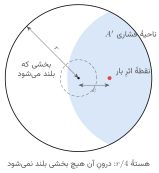
30.5.2 چهار طرح
SCHEMES = { # radius m, concrete and backfill m3; g_mult None = new gravel
"S1 gravity 20 m": dict(r=10.0, conc=620.0, back=800.0,
g_mult=1.0, piles=0),
"S2 gravity 24 m": dict(r=12.0, conc=893.0, back=1152.0,
g_mult=1.0, piles=0),
"S3 24 m + gravel": dict(r=12.0, conc=893.0, back=1152.0,
g_mult=None, piles=0),
"S4 piled 18 m": dict(r=9.0, conc=560.0, back=650.0,
g_mult=None, piles=24),
}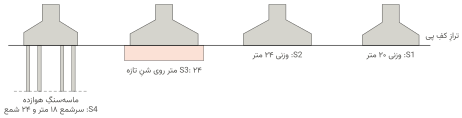
conceptual foundation schemes under three soil assumptions (teaching)
checks: no lift-off in production (e <= r/4); extreme pressure on the
effective area <= q_ult / 2; rocking stiffness >= 177 GN m/rad
(wet: water at 0.5 m; S3 sits on 2 m of new compacted gravel; S4 on piles)
scheme soil e/r A'/A q' kPa K GNm s mm k u result
S1 gravity 20 m dense 0.27 0.35 322 305 9 179 NO lift
S1 gravity 20 m T07 0.27 0.35 322 103 27 179 NO lift,K
S1 gravity 20 m T07 wet 0.37 0.16 515 82 25 179 NO lift,K
S2 gravity 24 m dense 0.17 0.59 181 527 10 257 ok
S2 gravity 24 m T07 0.17 0.59 181 177 30 257 ok
S2 gravity 24 m T07 wet 0.23 0.44 174 142 27 257 NO K
S3 24 m + gravel dense 0.17 0.59 181 395 13 313 ok
S3 24 m + gravel T07 0.17 0.59 181 425 13 313 ok
S3 24 m + gravel T07 wet 0.23 0.44 174 425 9 313 ok
S4 piled 18 m dense - - piles 400 0 305 ok
S4 piled 18 m T07 - - piles 400 0 305 ok
S4 piled 18 m T07 wet - - piles 400 0 305 ok
the 20 m base lifts off in production even on dense
ground (e > r/4): this turbine needs a wider base; 24 m
passes on dense ground and at T07, but not with the high
water (the softer wet soil lowers the stiffness);
new gravel under the 24 m base or piles pass in every
case - at T07 the water range (ch 29, Q6) decides between
them; a comparison of concepts, not a choicequestions the comparison raises (for the qualified engineers)
F1 What operating-strain shear modulus does the engineer adopt at T07, and
from which test (seismic CPT, cross-hole, laboratory)?
F2 Does the turbine maker accept the stiffness rule of A-359, and what
dynamic stiffness does its load document state?
F3 Is the 2 m gravel replacement (S3) stable under the water range of Q6,
and how is its compaction proven?
F4 For S4, what pile capacities in tension and compression, and how many
pile tests?
F5 How is the settlement of the T12 gypsum layer handled (collapse, ch 29)?
F6 Which scheme does the independent design verifier and the certification
body review, and with which load set?
each answer comes back with its source; the scheme is
chosen by the foundation designer, checked by the
independent verifier and accepted under the type
certificate's site-specific assessmentمثال 30.41 (مثالِ کارشده: طرحهای فونداسیون زیرِ فرضهای متفاوتِ خاک) پرسش. چهار طرحِ مفهومی را برای یک توربین زیرِ سه فرضِ خاک مقایسه کنید: زمینِ متراکم، T07، و T07 با آب در 0.5 m. وارسیها پنجتاست: بلندنشدنِ لبه در تولید، فشارِ حدی روی سطحِ مؤثر، سختیِ دورانی برای حاشیهٔ \(1P\)، نشست، و بتن و هزینه. پرسشهایی برای مهندسان بنویسید، بیآنکه طرحی را انتخاب کنید.
پاسخ.
- S1، وزنیِ ۲۰ متر: حتی روی زمینِ متراکم در تولید بلند میشود (\(e/r = 0.27 > 0.25\)). در T07 سختی هم کم است.
- S2، وزنیِ ۲۴ متر: روی زمینِ متراکم و در T07 از همه میگذرد، در T07 درست روی مرزِ سختی (177 GN m/rad). با آبِ بالا سختی 142 است و کم میآید.
- S3، ۲۴ متر روی شنِ تازه: در هر سه فرض میگذرد، با 313 k u.
- S4، شمعی: در هر سه فرض میگذرد، با 305 k u و آزمایشِ شمع.
پرسشهای F1 تا F6 از همین مقایسه آمدهاند.
تفسیر. سه یافته به فصلهای دیگر برمیگردد. اول، این توربین پایهٔ پهنتری از 20 m فصلهای ۴ و ۲۹ میخواهد. بتنِ هر توربین از 620 به حدودِ 893 m³ میرسد و برآوردِ مقادیر، آبِ ساخت و ترافیکِ فصلِ ۲۹ همه بالا میروند. دوم، در T07 بازهٔ آب میانِ S2 و S3 یا S4 تصمیم میگیرد. پرسشِ Q6 فصلِ ۲۹ اکنون ارزشی به اندازهٔ حدودِ 56 k u دارد، یعنی فاصلهٔ S2 تا S3. سوم، هر طرح پرسشهای خودش را دارد، مانندِ ظرفیتِ شمع، تراکمِ شن و نشستِ گچ. پاسخِ این پرسشها با طراحِ فونداسیون، وارسیکنندهٔ مستقل و ارزیابیِ ساختگاهِ گواهیِ نوعی است. وارسی: \(V = 6.0 + 893 \times 0.024 + 1{,}152 \times 0.018 = 48.2\,\text{MN}\) و \(e = 95.5/48.2 = 1.98\,\text{m}\)، پس \(e/r = 0.17\) برای S2.
30.5.3 خطاهای رایج در مقایسهٔ طرحها
- یک وارسی بهجای همه: S1 در برابرِ واژگونی پایدار است (مثال 30.6) اما در بلندنشدن رد میشود.
- فرضِ یکخاکی: طرحی که فقط روی زمینِ متراکم آزموده شود، در T07 شکست را پنهان میکند.
- نادیدهگرفتنِ آب: آبِ بالا هم وزنِ مؤثر را کم میکند و هم خاک را نرمتر.
- انتخاب بهجای پرسش: «شمع بزنید» تصمیمِ این تمرین نیست. خروجی مقایسه است با پرسشهایش.
- فراموشیِ اثرِ برگشتی: پایهٔ پهنتر بتن، آب، ترافیک و هزینهٔ فصلهای دیگر را عوض میکند.
- هستهٔ پایهٔ دایرهای به شعاعِ 12 m چقدر است؟
- با \(V = 40\,\text{MN}\) و \(M = 120\,\text{MN m}\)، خروج از مرکز چیست و آیا لبه بلند میشود (شعاعِ 12 m)؟
- سطحِ مؤثرِ پایهای با \(r = 10\,\text{m}\) و \(e = 3\,\text{m}\) چیست؟
- چرا سختیِ دورانی با مکعبِ شعاع بالا میرود و این برای S2 چه معنایی دارد؟
- چرا آبِ بالا در T07 طرحِ S2 را رد میکند؟
- ارزشِ پاسخِ پرسشِ Q6 را چگونه از این مقایسه برآورد میکنید؟
- سه پرسشی را که طرحِ شمعی میسازد نام ببرید.
- چرا پایهٔ پهنتر به فصلِ ۲۹ برمیگردد؟
30.5.4 شاخصِ اطمینان و ضریبهای جزئی
ایده. وارسیِ «مقاومت بزرگتر از اثر» با دو عددِ قطعی انجام میشود، اما هر دو پراکندهاند. اگر مقاومتِ \(R\) و اثرِ \(S\) هر دو نرمال باشند، شاخصِ اطمینان چنین است:
\[ \beta = \frac{\mu_R - \mu_S}{\sqrt{\sigma_R^2 + \sigma_S^2}}, \qquad P_\text{f} = \Phi(-\beta) \tag{30.24}\]
reliability index of a check R > S with normal R and S (teaching)
mean R CoV R mean S CoV S beta P(failure)
1.5 0.10 1.0 0.20 2.00 2.3e-02
1.5 0.10 1.0 0.30 1.49 6.8e-02
1.8 0.10 1.0 0.30 2.29 1.1e-02
1.5 0.05 1.0 0.10 4.00 3.2e-05
Monte Carlo of the first row: P(failure) 2.3e-02
the same mean margin (1.5 against 1.0) is safe or not
depending on the scatter: partial factors are a way of
reaching a target beta without a probability calculation,
and the codes calibrate them for that targetمثال 30.42 (یک حاشیه، دو ایمنی) پرسش. حاشیهٔ میانگینِ 1.5 به 1.0 با پراکندگیِ بار 20 % و 30 % چه شاخصی میدهد؟
پاسخ. 2.00 و 1.49. احتمالِ شکست از 2.3 % به 6.8 % میرسد.
تفسیر. حاشیهٔ میانگینِ یکسان با پراکندگیِ متفاوت ایمنیِ متفاوتی دارد. ضریبهای جزئیِ آییننامه برای رسیدن به یک شاخصِ هدف واسنجی شدهاند و طراح بیمحاسبهٔ احتمال به آن میرسد. اگر پراکندگیِ واقعی بیشتر از فرضِ آییننامه باشد، همان ضریبها کمتر ایمناند. وارسی: \(0.5/\sqrt{0.15^2 + 0.2^2} = 2.00\).
30.5.5 بسامدِ T07 با سختیِ نامطمئن
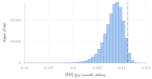
T07's tower frequency with an uncertain soil stiffness (Monte Carlo)
G lognormal with the median of lesson B; fixed-base f1 0.215 Hz
site and median G CoV P(f1 < required) 5 % f1 Hz
dense ground, 80 MPa 0.3 0.02 0.212
T07, 25 MPa 0.3 0.97 0.205
T07, 25 MPa 0.5 0.88 0.202
required f1 0.2112 Hz (10 % above 1P max)
on dense ground the margin holds almost always; at T07 it
is missed in most draws - and a wider scatter cannot
rescue it: the soil investigation narrows the scatter,
the foundation scheme (lesson D) moves the medianمثال 30.43 (پراکندگی نجات نمیدهد) پرسش. با سختیِ نامطمئنِ خاک، احتمالِ ازدسترفتنِ حاشیهٔ بسامد در T07 چقدر است؟
پاسخ. با ضریبِ تغییراتِ 0.3 حدودِ 97 % و با 0.5 حدودِ 88 %. در زمینِ متراکم حدودِ 2 %.
تفسیر. میانه در T07 زیرِ مقدارِ لازم است، پس پراکندگیِ بیشتر فقط شانسِ بیشتری به هر دو سو میدهد. شناساییِ خاک پراکندگی را کم میکند و طرحِ پی میانه را جابهجا میکند (بخش 30.5.2). این همان استدلالِ آزمایشگاهِ ت است، این بار با احتمال. وارسی: صدکِ ۵امِ T07 0.205 Hz است.
30.5.6 مسیرِ بار در یک جدول
برنامه:
python -m companion.ch30.examples_wthe load path from rotor to soil and what governs each link
link governing check lesson: result
tower wall, section 1 fatigue of the welds B: walls 50/45/36 mm
tower wall, section 1 shell buckling B: use 1.02-1.06
base flange bolts slip and separation Q: method sets min
anchor cage joint stays closed G: 1,250 kN preload
grout under the flange bearing stress G: 96 MPa class
pedestal and slab reinforcement H: 64 kg/m3
base on the ground lift-off and bearing D: 24 m at T07
ground stiffness 1P frequency margin B, D: governs T07
no single check sizes the turbine's structure: fatigue sets
the walls, preload the joints, stiffness the base - and
each link is only as good as the evidence for itایده. از روتور تا خاک، هر حلقهٔ مسیرِ بار وارسیِ حاکمِ خودش را دارد. خستگی دیوارهها را تعیین میکند، پیشبار اتصالها را، سختی پی را. هیچ وارسیِ واحدی همهٔ سازه را اندازه نمیکند. هر حلقه هم فقط به اندازهٔ شاهدش معتبر است: گواهیِ فولاد، سابقهٔ پیشبار، مکعبهای گروت، آزمونهای خاک.
30.5.7 شعاعِ لازم: به چه چیزی حساس است
ایده. با سختیِ دورانیِ لازمِ \(K\) از قاعدهٔ حاشیهٔ بسامد، شعاعِ لازمِ پی از رابطهٔ سختی به دست میآید:
\[ r = \left(\frac{3\,(1-\nu)\,K}{8\,G}\right)^{1/3} \tag{30.25}\]
base radius the 1P margin needs at T07 (G 25 MPa, 10 %, 271 t)
base case: r = 12.00 m (diameter 24.0 m)
input changed r low m r high m
soil G -30 % / +30 % 13.51 10.99
margin 8 % / 11 % 9.42 15.24
top mass -5 % / +5 % 11.84 12.15
the margin rule moves the radius most - 11 % instead of
10 % needs a far larger base, and at 12 % even a rigid base
fails (0.192 x 1.12 = 0.21504 Hz, above the fixed 0.215):
then only a stiffer tower helps. Soil stiffness comes
next; the top mass barely matters - the maker's margin
and the measured stiffness are the numbers worth paying for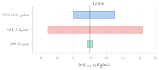
مثال 30.44 (قاعدهٔ حاشیه بیشترین اثر را دارد) پرسش. شعاعِ لازم در T07 به کدام ورودی بیشترین حساسیت را دارد؟
پاسخ. به حاشیهٔ بسامد: با 8 % شعاع 9.4 m است و با 11 % 15.2 m. با 12 % حتی پیِ صلب هم کافی نیست. سختیِ خاک در رتبهٔ بعدی است و جرمِ بالای برج تقریباً اثری ندارد.
تفسیر. حاشیهٔ سازنده و سختیِ اندازهگیریشده دو عددیاند که ارزشِ هزینهکردن دارند (مثال 30.43). اگر سازنده حاشیهٔ ۱۲ درصد بخواهد، مسئله دیگر مسئلهٔ پی نیست و برج سختتر لازم است. شاید فولادِ خستگی بخشی از آن را بدهد (مثال 30.14). شعاعِ پایه، 12.0 m یعنی پیِ 24 m، همان طرحِ S2 و S3 آزمایشگاهِ ت است. وارسی: \(\left(1.95 \times 177\times10^9/(2\times10^8)\right)^{1/3} = 12.0\,\text{m}\).
30.6 ث. سازههای خط و پست
خطِ 132 kV و پستِ نیروگاه سازههای خودشان را دارند: دکلهای مشبک، دروازهها، پایههای تجهیزات و پلینتِ ترانسفورماتور. بارهای حاکمشان با توربین فرق دارد. سیمها کششِ طولی و عرضی میآورند، اتصالِ کوتاه ضربه میزند، و زلزله تجهیزاتِ سنگین و سفت را تکان میدهد. این بخش مسیرِ بار و مرزهای طراحی را نشان میدهد. طراحیِ خط و پست کارِ طراحانِ آنهاست و بهرهبردارِ شبکه یا مهندسِ مالک آن را میپذیرد (A-361، A-362).
برنامه:
python -m companion.ch30.examples_f30.6.1 باد روی سیمها و دکلِ آویزی
transverse wind on a 132 kV suspension tower (50-yr gust at 20 m)
gust 44.4 m/s, pressure 1,072 Pa, wind span 300 m
each phase conductor (24 mm): 7.7 kN; earth wire 3.9 kN
tower body 8 kN (teaching)
total transverse load 35.0 kN
the wires, not the lattice, catch most of the wind: wire
diameter and span set the tower's transverse caseایده. دکلِ آویزی باد را بیشتر از سیمها میگیرد تا از بدنهٔ مشبکِ خودش. دهانهٔ باد (نیمی از دو دهانهٔ کناری) و قطرِ سیم حالتِ عرضیِ آن را تعیین میکنند: \(F = q\,C_\text{d}\,d\,L\) برای هر سیم.
30.6.2 کششِ عرضی در نقطههای زاویه
ایده. در نقطهای که خط \(\theta\) درجه میچرخد، دو کششِ برابرِ \(T\) برآیندی عرضی میسازند:
\[ F_\text{t} = 2\,T\,\sin\frac{\theta}{2} \tag{30.26}\]
transverse pull at the angle points of the straightened route (ch 29)
per wire 2 T sin(theta/2); T 35 kN on 3 phases, 15 kN earth wire
deviation deg per phase kN whole tower kN tower type
40 23.9 82.1 heavy angle
44 26.2 89.9 heavy angle
45 26.8 91.8 heavy angle
86 47.7 163.7 terminal / dead-end
at 40-45 deg the wires pull more than twice as hard as
the storm pushes a suspension tower; at 86 deg almost
five times -
that tower is nearly a dead end - which is why the line
designer may split that turn into two smaller angles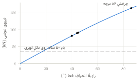
مثال 30.45 (زاویهها، نه طوفان) پرسش. دکلِ زاویهٔ 45° و دکلِ چرخشِ 86° مسیرِ فصلِ ۲۹ چه نیروی عرضیای میگیرند؟
پاسخ. 92 و 164 kN، در برابرِ 35 kN بادِ ۵۰ ساله روی دکلِ آویزی.
تفسیر. راستکردنِ مسیر در فصلِ ۲۹ زاویهها را کم کرد. هر زاویهٔ باقیمانده یک دکلِ سنگین با فونداسیونِ بزرگ است، و چرخشِ 86° عملاً یک دکلِ انتهایی است. طراحِ خط شاید آن را به دو زاویه بشکند (مثال 29.58). وارسی: \((3 \times 70 + 30) \times \sin 22.5^\circ = 240 \times 0.383 = 91.8\,\text{kN}\).
30.6.3 حالتِ سیمِ پاره
broken-wire case on a suspension tower (teaching)
one phase breaks: unbalanced pull 35 kN along the line at 24 m
base moment about the line's direction: 840 kN m
(with torsion from the offset crossarm)
intact towers see no longitudinal load at all; this case
(and a cascade stopped by stronger towers every few km)
sizes the tower's longitudinal bracing and its foundations30.6.4 نیروی اتصالِ کوتاه روی شینه و دروازه
ایده. دو رسانای موازی که جریانِ اتصالِ کوتاه از آنها میگذرد، یکدیگر را با نیرویی متناسب با مربعِ جریانِ اوج میرانند یا میکشند:
\[ F' = \frac{\mu_0}{2\pi}\,\frac{i_\text{p}^2}{a} \tag{30.27}\]
در این رابطه \(F'\) نیرو بر واحدِ طول است، \(i_\text{p}\) جریانِ اوج و \(a\) فاصلهٔ رساناها.
short-circuit force between parallel conductors, F' = 2e-7 ip^2 / a
(peak factor 1.8; teaching spacings)
case ip kA a m N per m
132 kV gantry, fault 7.8 kA (ch 28) 19.8 2.5 31
33 kV busbar, fault 8.5 kA (ch 28) 21.7 0.5 189
33 kV busbar at the gear's rated peak 63.0 0.5 1588
the 132 kV gantry hardly notices a fault; close-spaced
33 kV bars feel a sharp blow - supports and insulators are
designed to the gear's rated peak, not today's fault
level, because the network's fault level grows (ch 28)مثال 30.46 (طراحی برای ردهٔ تجهیزات، نه برای امروز) پرسش. شینهٔ 33 kV با فاصلهٔ 0.5 m در خطای امروز و در جریانِ اوجِ نامیِ تابلو چه نیرویی میبیند؟
پاسخ. 189 و 1,588 N/m.
تفسیر. پایهها و مقرهها برای جریانِ اوجِ نامیِ تابلو طراحی میشوند، نه برای سطحِ خطای امروز، چون سطحِ خطای شبکه با زمان بالا میرود (فصلهای ۲۶ و ۲۸). دروازهٔ 132 kV با فاصلهٔ بزرگ تقریباً اثری حس نمیکند. وارسی: \(2 \times 10^{-7} \times (63 \times 10^3)^2/0.5 = 1{,}588\,\text{N/m}\).
30.6.5 ترانسفورماتور روی پلینت در زلزله
main transformer on its plinth in the teaching earthquake (a_seismic)
shear 582 kN at 2.5 m: overturning 1,456 kN m
weight 932 kN on a 3.0 m anchor base: resisting 1,398 kN m
net uplift on one side: 19 kN -> anchors in tension
without anchors a heavy, short transformer can still tip
or slide in a strong earthquake; anchors, the plinth and
the bushings' qualification (tall porcelain is fragile)
come from the local seismic code and the maker (ch 25)مثال 30.47 (سنگین هم واژگون میشود) پرسش. ترانسفورماتورِ 95 t بیمهار در زلزلهٔ آموزشی پایدار میماند؟
پاسخ. نه کاملاً. گشتاورِ واژگونی 1,456 kN m از گشتاورِ مقاومِ وزن (1,398) بیشتر است و مهارها حدودِ 19 kN کشش در هر سو میگیرند.
تفسیر. ترانسفورماتورِ سنگین و کوتاه هم میتواند در زلزلهٔ شدید بلغزد یا واژگون شود. مهارها، پلینت و تأییدِ لرزهایِ بوشینگها از آییننامهٔ لرزهایِ محل و سازنده میآیند (فصلِ ۲۵). حوضچهٔ روغنِ فصلِ ۲۹ هم دورِ همین پلینت است. وارسی: \(582 \times 2.5 = 1{,}455\,\text{kN m}\).
30.6.6 فاصلههای ایمنی و تجهیزات
ارتفاعِ دکل از فاصلهٔ لازمِ سیم تا زمین در بیشترین شکم به دست میآید. شکمِ دهانهٔ 300 m در سیمِ داغ 7.66 m است (فصلِ ۲۴). فاصلهها را کدِ بهرهبردار و قاعدههای محل میدهند. پایههای تجهیزاتِ پست، مانندِ ترانسفورماتورِ جریان، برقگیر و سکسیونر، بار را از باد، زلزله و نیروی اتصالِ کوتاه میگیرند و ارتفاعشان فاصلهٔ ایمنیِ زیرِ قسمتهای برقدار را برای کارکنان نگه میدارد. همهٔ این سازهها گالوانیزهٔ گرماند و همان زنجیرِ ساخت، بازرسی و سوابقِ برج را دارند (بخش 30.4).
- چرا سیمها، و نه بدنهٔ مشبک، بیشترِ بادِ دکلِ آویزی را میگیرند؟
- نیروی عرضیِ یک سیم با کششِ 35 kN در زاویهٔ 60° چیست؟
- چرا راستکردنِ مسیر هزینهٔ دکلها را کم میکند؟
- حالتِ سیمِ پاره کدام بخشِ دکل را اندازه میکند؟
- نیروی میانِ دو شینه با جریانِ اوجِ 30 kA و فاصلهٔ 0.5 m چیست؟
- چرا پایهها برای جریانِ اوجِ نامی طراحی میشوند؟
- چه چیزی ترانسفورماتور را در زلزله نگه میدارد؟
- ارتفاعِ دکل را کدام حالتِ سیم تعیین میکند؟
30.6.7 دهانهٔ وزنی و برکنشِ مقره
برنامه:
python -m companion.ch30.examples_rایده. دهانهٔ وزنی طولی از سیم است که وزنش روی یک دکل میافتد. وقتی دکل از دو همسایهاش پایینتر است، سیم آن را به بالا هم میکشد. با کششِ \(T\)، وزنِ واحدِ طولِ \(w\)، دهانههای \(L_1\) و \(L_2\) و اختلافِ ارتفاعهای \(h_1\) و \(h_2\)، که برای همسایهٔ پایینتر مثبتاند، دهانهٔ وزنی چنین است:
\[ L_\text{w} = \frac{L_1 + L_2}{2} + \frac{T}{w}\left(\frac{h_1}{L_1} + \frac{h_2}{L_2}\right) \tag{30.28}\]
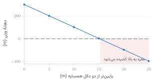
weight span of a suspension tower lower than its neighbours
spans 300 m each side, conductor 11.8 N/m, cold tension 35 kN
tower below both neighbours m weight span m vertical load N
0 300 3,540
5 201 2,373
10 102 1,207
15 3 40
20 -95 -1,127
25 -194 -2,293
the weight span reaches zero at a drop of 15.2 m; any deeper
and the wires pull the insulator UP on the coldest night -
a suspension string cannot take that; the profile
places a tension tower or heavier attachment there, and
the wadi crossing of ch 29 is checked for exactly thisمثال 30.48 (سردترین شب در گودی) پرسش. دکلِ آویزی تا چه عمقی زیرِ همسایههایش میتواند باشد؟
پاسخ. تا حدودِ 15.2 m با کششِ سرمای 35 kN. پایینتر از آن، مقره در سردترین شب به بالا کشیده میشود.
تفسیر. کشش در سرما بیشترین است و برکنش هم در سرما. زنجیرِ مقرهٔ آویزی نیروی رو به بالا را نمیپذیرد و ممکن است به بازوی دکل بخورد. نیمرخِ خط در آنجا دکلِ کششی یا وزنهٔ اضافه میگذارد. گذرِ وادیِ فصلِ ۲۹ دقیقاً برای همین وارسی میشود. وارسی: \(300^2 \times 11.8/(2 \times 35{,}000) = 15.2\,\text{m}\).
30.6.8 نیروی پایههای دکلِ مشبک و پیِ برکنشی
leg forces of a square lattice tower under the dead-end pull
transverse 164 kN at 24 m; vertical 180 kN (teaching)
base width m moment kN m leg kN (diagonal) uplift leg kN
6.0 3,929 463 418
8.0 3,929 347 302
10.0 3,929 278 233
pad 2.4 m square at 3 m: concrete 69 kN + soil cone 924 kN
resistance 993 kN against 302 kN on an 8 m base (FS 3.3)
a dead-end tower is held down by the soil above its pads;
the cone method is a teaching estimate - the line
designer uses the code's method and site test resultsایده. لنگرِ واژگونیِ دکلِ مشبک به نیروی فشاری در یک پایه و کششی در پایهٔ مقابل تبدیل میشود. در جهتِ قطری، نیروی پایه \(M/(b\sqrt2)\) است. هرچه پایهٔ دکل پهنتر باشد، نیرو کمتر است. پیِ پایهٔ کششی با وزنِ بتن و خاکِ روی آن نگه داشته میشود. روشِ مخروطِ خاک یک تخمینِ آموزشی است. طراحِ خط روشِ آییننامه و آزمونهای ساختگاه را به کار میبرد.
30.6.9 کلیدِ قدرت روی پایهاش در زلزله
a circuit breaker on its support in an earthquake (teaching)
mass 1,800 kg at 3 m; ground acceleration ag 0.25 g
support stiffness kN/m f Hz spectral acc. g base shear kN
stiff column 4,000 7.5 0.62 11.0
slender column 900 3.6 0.62 11.0
braced frame 20,000 16.8 0.51 9.1
rigid pedestal 80,000 33.6 0.25 4.4
equipment between about 1 and 10 Hz sits on the plateau of
the spectrum and feels 2.5 times the ground; a stiff
support above about 33 Hz moves with the ground. The
porcelain, not the steel, is usually the weak part: the
maker's qualification and the support are checked togetherمثال 30.49 (پایهٔ لاغر، شتابِ بیشتر) پرسش. چرا ستونِ لاغر و ستونِ سخت در این مثال یک برشِ پایه میدهند و پایهٔ صلب کمتر؟
پاسخ. هر دو ستون بسامدی میانِ ۱ و ۱۰ هرتز دارند و روی سکوی طیفاند، با 2.5 برابرِ شتابِ زمین. پایهٔ صلبِ 33.6 Hz با زمین حرکت میکند و 0.25 g میگیرد.
تفسیر. بیشترِ تجهیزاتِ پست روی سکوی طیفاند. بخشِ ضعیف معمولاً چینی است، نه فولاد. پس تأییدِ لرزهایِ سازنده برای تجهیز و پایه با هم وارسی میشود. پایهای که تجهیز را از سکوی طیف بیرون ببرد شاید ارزانترین راهِ ایمنی باشد (بخش 30.6.5). وارسی: \(\sqrt{4\times10^6/1800}/(2\pi) = 7.5\,\text{Hz}\).
30.6.10 برکنشِ باد روی بامِ ساختمانِ کنترل
wind uplift on the control building roof (12 x 24 m, 6 m high)
gust at roof height 38.3 m/s -> pressure 798 Pa
roof zone cp,e internal net kPa dead kPa uplift kPa
corner -2.0 +0.2 1.76 0.60 1.16
edge -1.4 +0.2 1.28 0.60 0.68
middle -0.7 +0.2 0.72 0.60 0.12
the dead load nearly balances the middle of the roof;
the corners lift twice the roof's weight - their fixings,
purlins and the holding-down of the columns are designed
for it, and
most roof failures in storms start at a cornerایده. باد روی بامِ تخت مکش میسازد. ضریبِ فشار در گوشهها و لبهها بزرگتر از میانه است. وزنِ بام میانه را تقریباً نگه میدارد، اما گوشهها حدودِ دو برابرِ وزنِ بام بالا کشیده میشوند. اتصالها، پرلینها و مهارِ ستونها برای آن طراحی میشوند. بیشترِ آسیبهای بام در توفان از یک گوشه شروع میشود.
- دهانهٔ وزنی برای دکلی 8 m پایینتر از همسایهها با دهانههای 300 m چقدر است؟
- چرا برکنشِ مقره در سرما بدتر است؟
- نیروی پایه با لنگرِ 3,929 kN m و پایهٔ 8 m چقدر است؟
- پیِ پایهٔ کششی با چه چیزی نگه داشته میشود؟
- بسامدِ تجهیزِ 1,800 kg روی پایهای با سختیِ 900 kN/m چقدر است؟
- چرا چینی بخشِ ضعیفِ تجهیزِ پست است؟
- برکنشِ خالصِ گوشهٔ بام با فشارِ 800 Pa و ضریبِ −2.0 چقدر است؟
30.6.11 شش وارسیِ کوچکتر
برنامه:
python -m companion.ch30.examples_uاین وارسیها کوچکاند، اما هر کدام در جایی از نیروگاههای واقعی آسیب ساخته است.
نیروی ریلِ PV اگر نتواند دراز شود. اگر انبساط کاملاً مهار شود، نیرو برابرِ \(E A \alpha \Delta T\) است:
force in a 29.5 m PV rail if it cannot expand (teaching)
rail area 600 mm2; steel range 74.3 K
fully restrained: E A alpha dT = 112 kN
restraint left force kN against a post's side load 5.5 kN
100 % 112 20 x
25 % 28 5 x
5 % 6 1 x
even 5 % of the restraint loads the end posts as much as
the storm does: slotted holes or a joint every table
let the rail move - the 26 mm of lesson A must be freeشناوری روی پیِ T07. آبِ بالاآمده بخشی از وزنِ پی را با نیروی شناوری خنثی میکند:
buoyancy on the 20 m base when the water rises (T07, teaching)
base area 314 m2, founded at 3.5 m; dry weight 35.3 MN
water below ground m uplift MN weight MN e = M/V m e / R
3.5 0.0 35.3 5.23 0.52
2.0 4.6 30.7 6.02 0.60
0.5 9.2 26.0 7.09 0.71
water at 0.5 m lifts about a quarter of the weight: the
eccentricity of the extreme load grows by a third and the
base lifts further off its edge - the 'ok except wet' of
lesson D's scheme S2 comes from exactly this numberمثال 30.50 («درست، مگر در حالتِ خیس») پرسش. آبِ زیرزمینی در عمقِ 0.5 m وزنِ مؤثرِ پی و خروج از مرکزیتِ بارِ استثنایی را چقدر تغییر میدهد؟
پاسخ. حدودِ 9.2 MN از 35.3 MN کم میشود و خروج از مرکزیت از 5.2 به 7.1 m میرسد.
تفسیر. حدودِ یکچهارمِ وزن با شناوری میرود و پی بیشتر از لبه بلند میشود. عبارتِ «درست، مگر در حالتِ خیس» دربارهٔ طرحِ S2 در آزمایشگاهِ ت از همین عدد میآید (بخش 30.5.2). ترازِ طرحِ آب از مطالعهٔ سیلِ فصلِ ۲۹ است. وارسی: \(314 \times 3.0 \times 9.81 = 9.2\,\text{MN}\).
پیچشِ میزِ PV وقتی یک ستون نشست میکند.
twist of a PV table when one post settles (teaching)
post settles mm twist mrad module corner out of plane mm
5 0.85 1.9
10 1.69 3.9
20 3.39 7.7
40 6.78 15.4
a module tolerates only a few millimetres of twist before
the glass and frame are stressed; posts in the loose top
layer (ch 29) that settle or heave 20 mm warp the table -
driving to the tested depth and a survey of post heads
after a wet season catch itارتعاشِ بادیِ سیم. بادهای ملایم و پیوسته گردابههایی میسازند که سیم را با بسامدِ دهها هرتز میلرزانند:
aeolian vibration of a 24 mm conductor (Strouhal 0.2)
wind m/s shedding frequency Hz
1 8
3 25
5 42
7 58
steady light winds across a flat desert drive the wire at
tens of hertz for millions of cycles a year; the strands
fatigue at the clamps. Dampers near each clamp, tension
limits for the everyday case and the line designer's
span-by-span check are the remedy (ch 24)چرخشِ مقرهٔ آویزی در باد. زاویهٔ مقره از نسبتِ نیروی باد به بارِ قائم میآید: \(\tan\theta = F_\text{wind}/F_\text{v}\).
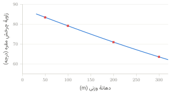
swing of a suspension insulator in the design wind (teaching)
weight span m vertical kN swing angle deg
300 3.84 63
200 2.66 71
100 1.48 79
50 0.89 83
the wires blow out far in a storm, and further where the
weight span is short (a tower in a hollow): the air gap to
the tower body is checked at the swing angle of each
tower, which is why the hollow tower of the weight-span
lesson is a double problemمثال 30.51 (دکلِ گودی، مسئلهٔ دوگانه) پرسش. چرا دکلی که دهانهٔ وزنیِ کوتاهی دارد در باد بیشتر نگرانکننده است؟
پاسخ. بارِ قائمِ کمتر یعنی مقره بیشتر میچرخد: 79 درجه با دهانهٔ وزنیِ 100 m در برابرِ 63 درجه با 300 m.
تفسیر. فاصلهٔ هوایی تا بدنهٔ دکل در زاویهٔ چرخشِ همان دکل وارسی میشود. دکلِ گودیِ درسِ دهانهٔ وزنی (مثال 30.48) هم در سرما برکنش دارد و هم در باد بیشتر میچرخد. وزنهٔ افزوده هر دو را بهتر میکند. وارسی: \(\arctan(7.7/1.48) = 79^\circ\).
دیوارهٔ حوضچهٔ ترانسفورماتور.
the wall of a transformer bund full of oil and water (teaching)
height m base moment kN m per m wall t mm (rebar check)
0.6 0.36 200 (As 9 mm2/m)
1.0 1.67 200 (As 43 mm2/m)
1.5 5.62 200 (As 144 mm2/m)
the hydrostatic load is small; the wall is sized by
crack control and watertightness, not strength - a bund
that leaks fails its only job (ch 29 sets its volume)دیوارهٔ حوضچه را مقاومت تعیین نمیکند، کنترلِ ترک و آببندی تعیین میکند. حوضچهای که نشت کند در تنها کارش شکست خورده است.
- نیروی ریلِ مهارشده با 400 mm² و همان دما چقدر است؟
- شناوری با آب در عمقِ 1.5 m چقدر است؟
- نشستِ 15 mm یک ستون گوشهٔ ماژول را چقدر جابهجا میکند؟
- بسامدِ گردابه برای سیمِ 30 mm در بادِ 4 m/s چقدر است؟
- زاویهٔ مقره با دهانهٔ وزنیِ 150 m چقدر است؟
- چرا دیوارهٔ حوضچه با کنترلِ ترک اندازه میشود؟
30.7 ساخت و تولیدِ صنعتی در این فصل
سازههای نیروگاه در چند جریانِ تولید ساخته میشوند. ساختِ کارخانهایشان در فصلِ ۴۷ و کیفیتِ کارخانه در فصلِ ۴۰ میآید. این فصل فقط مرزِ طراحی با ساخت را نشان میدهد:
| جریانِ تولید | آنچه طراحی از آن میخواهد | شاهد | فصل |
|---|---|---|---|
| بخشهای نوردی و جوشیِ برج | ردهٔ کیفیتِ ساخت، ردهٔ جزئیاتِ جوش، تختیِ فلنج | برگهٔ همراه، پروندهٔ داده | ۴۲، ۴۷ |
| پروفیلهای سردشکل و قابهای PV | مقطع، سوراخها، رواداری، روکش | بازرسیِ ابعادی، ضخامتِ روی | ۴۷ |
| پیچ و مهره | رده، پیشبار، سطحِ تماس | گواهی، آزمونِ نمونه، سوابقِ سفتکاری | ۴۷ |
| روکشِ رویِ گرم و رنگ | ضخامت و دوام برای خوردگیِ محل | ضخامتسنجی، چسبندگی | ۴۷ |
| قفسههای میلگرد | جدولِ خم، پوشش، فاصله | وارسیِ میله به میله | ۲۹، ۴۷ |
| بتن و گروت | رده، دما، عملآوری | نمونهها، دماسنجها | ۲۹ |
| دکلهای مشبکِ خط | مقطعها، پیچها، روکش | مونتاژِ آزمایشی، گواهی | ۴۷ |
ردیابیِ تأمینکننده. هر قطعهٔ سازهای به کارخانه، محموله و آزمونش برمیگردد: ورقِ برج به شمارهٔ ذوب، پیچ به لاتِ تولید، و بتن به برگهٔ تحویلِ کامیون. اگر سالها بعد یک یافته پیدا شود، مانندِ ترکی در یک جوش یا پیچی شکسته، همین ردیابی نشان میدهد کدام قطعههای دیگر همخانوادهاند و باید بازرسی شوند.
30.8 نیروگاهِ P: سه مثالِ یکپارچه
برنامه:
python -m companion.ch30.integratedمثال 30.52 (مقدماتی: دو نتیجهٔ سازهای با دست) پرسش. بسامدِ برج روی خاکِ T07 و سطحِ مؤثرِ پایهٔ 24 m با \(e = 3\,\text{m}\) را با دست حساب و با کد مقایسه کنید.
two structural results checked by hand
T07 rocking: K = 8 x 25e6 x 10^3 / (3 x 0.65) = 102.6 GN m/rad;
f_rot = 0.858 Hz; 1/f^2 = 1/0.215^2 + 1/0.858^2 -> f = 0.209 Hz
code 0.209 Hz
24 m base, e = 3 m: A' = 2 (144 acos(0.25) - 3 sqrt(135)) = 309.9 m2;
code 309.9 m2 (of 452)
a hand check of one number from each formula protects
the whole table against a wrong unit or exponentپاسخ. 0.209 Hz و 309.9 m² (از 452 m²)، هر دو با کد برابر.
تفسیر. وارسیِ دستیِ یک عدد از هر فرمول از کلِ جدول در برابرِ واحد یا توانِ اشتباه محافظت میکند. وارسی: \(\arccos 0.25 = 1.318\,\text{rad}\).
مثال 30.53 (میانی: بستهٔ بازبینیِ طراحی و شاهدهایش) پرسش. بستهٔ بازبینیِ سازهایِ نیروگاه چه وضعی دارد و چه چیزی ساخت را نگه داشته است؟
the structural design-review package of Plant P (teaching status)
document status review
design basis and load set (maker) received checked
site-specific suitability (ch 11) received checked
foundation geotechnical report (ch 29 Q1-Q10) draft open
foundation structural calculation (24 m) received 1 major open
anchor cage and grout calculation received checked
tower fabrication data books (12) 3 of 12 in progress
PV structure calculation and pile tests received checked
line tower load cases and foundations received checked
substation structures and anchors draft open
erection records: bolting, verticality per turbine ongoing
3 items still open: the T07 foundation and the substation
structures wait for the geotechnical answers (ch 29) and
the checker's acceptance; nothing is built on an open itemپاسخ. سه قلم باز است: گزارشِ ژئوتکنیکِ فونداسیون، یک یافتهٔ عمده در محاسبهٔ فونداسیونِ 24 m، و سازههای پست.
تفسیر. فونداسیونِ T07 و سازههای پست منتظرِ پاسخهای ژئوتکنیکِ فصلِ ۲۹ و پذیرشِ وارسیکنندهاند. چیزی روی یک قلمِ باز ساخته نمیشود. بستهٔ بازبینی همان «بستهٔ بازبینیِ طراحیِ وارسیشده و شاهدِ برپایی و بازرسی» است که این فصل تحویل میدهد. وارسی: شمارِ قلمهای «باز» در جدول: ۳.
مثال 30.54 (یکپارچه: مبنای سازههای نیروگاهِ P) پرسش. مبنای سازهایِ نیروگاهِ P را با یافتهها و موردهای باز بنویسید.
structures basis of Plant P (D-034):
loads: the turbine maker's load set (A-356 teaching values),
site suitability for the 50-year gust; wind governs the
turbine, earthquake may govern the substation
tower: buckling and fatigue set the walls; the ch 11
schedule needs about 32 t more steel low down (teaching)
foundation: a 24 m gravity base on dense ground (the 20 m
base of ch 4 / ch 29 lifts off); at T07 new gravel under
the base or piles, decided by the water range (ch 29 Q6);
concrete about 893 m3 a turbine (+44 % on ch 29's take-off)
anchors: preload about 1,250 kN a bolt; grout and flange
ring checked for it; re-tension after the first months
PV: lateral load sets the post depth in dense sand (about
2 m), pull-out the depth in loose silty sand; heavier zinc
or sacrificial steel where the soil is aggressive
line: angle points dominate (two to five times the storm
load); the 86 deg turn is a terminal or split in two
line: suspension towers more than about 15 m below both
neighbours lift their insulators on the coldest night
and swing further in wind - tension towers at the wadi
verification: independent checks of foundation and anchors;
type certificate's site assessment for the tower
findings for the maker: the fatigue steel raises f1 about
4.5 % (T07 would pass if credited); a 12 % margin rule
cannot be met by any base - only by a stiffer tower
open: geotechnical design values (ch 29 U-104..U-107 and Q1-
Q10); maker's dynamic stiffness requirement (A-359)تفسیر. این تصمیمِ D-034 است. یافتههایی که به فصلهای دیگر برمیگردند:
- فونداسیونِ 20 m فصلهای ۴ و ۲۹ بلند میشود. پایهٔ 24 m بتن را 44 % بالا میبرد و برآوردِ مقادیر، آب و ترافیکِ فصلِ ۲۹ را عوض میکند (مثال 30.41).
- جدولِ دیوارهٔ برجِ فصلِ ۱۱ برای کمانش و خستگی نازک است (مثال 30.8).
- پیچهای مهار پیشبارِ بیشتری میخواهند و گروتِ قویتر یا حلقهٔ پهنتر (مثال 30.22).
- در ماسهٔ متراکم، بارِ جانبی عمقِ ستونهای PV را تعیین میکند (مثال 30.17).
- زاویههای خط، بیش از طوفان، دکلها را سنگین میکنند (مثال 30.45).
- برجِ بیناسل نباید شب بماند (مثال 30.3).
30.9 عددهای کلیدیِ سازههای نیروگاهِ P
| کمیت | مقدار | مثال |
|---|---|---|
| گشتاورِ پایه: تولید / حدی / بارِ معادلِ آسیب | 92 / 185 / 30 MN m | مثال 30.1 |
| سرعتِ قفلشدنِ برجِ بیناسل؛ ساعتها در بازه | 6.8 m/s؛ 22 % سال | مثال 30.3 |
| بهرهوریِ کمانش در بخشهای ۲ و ۳ | 1.02 و 1.06 | مثال 30.7 |
| آسیبِ خستگیِ جوشهای بخشهای ۱ تا ۳؛ فولادِ افزوده | 1.39 تا 1.61؛ 32 t | مثال 30.8 |
| سختیِ دورانیِ لازم برای حاشیهٔ ۱۰ درصد | 177 GN m/rad | مثال 30.11 |
| پایه: ۲۰ متر بلند میشود؛ ۲۴ متر با 893 m³ | \(e/r\) = 0.27 در برابرِ 0.17 | مثال 30.41 |
| پیشبارِ لازمِ پیچِ مهار؛ فشارِ گروت | 1,250 kN؛ 96 MPa | مثال 30.22 |
| عمقِ ستونِ PV در ماسهٔ متراکم (جانبی) | حدودِ 2 m | مثال 30.17 |
| نیروی عرضیِ دکلِ ۴۵ و ۸۶ درجه | 92 و 164 kN | مثال 30.45 |
| برشِ پایهٔ لرزهایِ ترانسفورماتور | 582 kN | مثال 30.4 |
30.10 گردشِ کارِ طراحی و وارسیِ سازهها
- بارها: سندِ بارِ سازنده، باد، زلزله، دما، برف و بارهای ساخت، با مسیرِ بار (بخش 30.2).
- پاسخ: کمانش، خستگی، دهانهها، بسامد با فونداسیونِ نرم، تغییرشکل (بخش 30.2.7 تا بخش 30.2.12).
- محصولها: ستونها و آزمایشها، پرلین، پیچ و جوش، قفسهٔ پیچِ مهار و گروت، میلگرد، دوام (بخش 30.3).
- فونداسیون: طرحهای مفهومی زیرِ فرضهای خاک، با پرسشها، بیانتخاب (بخش 30.5).
- خط و پست: زاویهها، سیمِ پاره، نیروی اتصالِ کوتاه، زلزلهٔ ترانسفورماتور (بخش 30.6).
- ساخت و برپایی: برگهٔ همراه، دستورالعملِ جوشکاری، ابعاد، پوشش، آزمونِ غیرمخرب، پیچها، شاقولی، نشست (بخش 30.4).
- وارسیِ مستقل: بستهٔ بازبینی، یافتهها تا بستهشدن با شاهد (بخش 30.4.12).
30.11 آزمایشگاههای پایتونِ این فصل
| آزمایشگاه | برنامه | آنچه میسازد |
|---|---|---|
| داده | sources | بارها، فونداسیون، خاکها، برج، فولاد، میزِ PV، ساختگاه |
| بارها | examples_a | جرمها، باد، ریزشِ گردابه، زلزله، PV، ترکیب |
| پاسخ | examples_b | کمانش، خستگی، در، بسامد با فونداسیون، تغییرشکل |
| محصولها | examples_c | ستونها، آزمایشِ بیرونکشیدن، جانبی، روی، پرلین، پیچ |
| آزمایشگاهِ ت | lab_d | طرحهای فونداسیون و پرسشها |
| آزمایشگاهِ ث | lab_e | برگهٔ همراه، جوش، ابعاد، پوشش، آزمونِ غیرمخرب، تأییدها |
| خط و پست | examples_f | باد، زاویهها، سیمِ پاره، شینه، ترانسفورماتور |
| مصالح و جزئیات | examples_g | چقرمگی، جوشِ گوشهای، پیچِ مهار، گروت، دال |
| ساخت و برپایی | examples_h | ورق، پل، پیچها، جدولِ خم، شاقولی |
| وارسی و پایش | examples_k | ماتریسِ وارسی، یافتهها، نشست، بازکشی |
| خستگی و دوام | examples_m | جریانِ باران، ماینر، کربناتهشدن، پوشش، دیوارهها |
| بار و پاسخ (بیشتر) | examples_n | خمِ گرمایی، ریلی، بزرگنمایی، دنباله، بودجهٔ کجی |
| پی و مصالح (بیشتر) | examples_p | سختیِ خاک با کرنش، لغزش، تسلیم با ضخامت، آزمونِ شمع، گروه |
| ساخت (بیشتر) | examples_q | پراکندگیِ پیشبار، بلوغِ گروت، نمودارِ کنترل، انباشتِ رواداری |
| خط و پست (بیشتر) | examples_r | دهانهٔ وزنی، پایههای دکل، تجهیز در زلزله، برکنشِ بام |
| اطمینان و عمر | examples_s | شاخصِ اطمینان، مونتکارلوی بسامد، افزایشِ عمر، نمونهگیری، پایش |
| چرخهٔ عمر | examples_t | احتمالِ توفان، اسکروتون، پیشبار و خستگی، خوردگی، گوشواره، پیشگرم، برچیدن، کربن |
| وارسیهای کوچک | examples_u | ریلِ مهارشده، شناوری، پیچشِ میز، ارتعاشِ سیم، چرخشِ مقره، دیوارهٔ حوضچه |
| وارسیهای ساختگاه | examples_v | پیشبارِ فراصوتی، دما و پیچِ مهار، پیِ ستون، پوششِ بتن، بالابریِ افقی |
| جمعبندیها | examples_w | مسیرِ بار، حساسیتِ شعاعِ پی |
| نیروگاهِ P | integrated | با دست، بستهٔ بازبینی، مبنای D-034 |
| مثالها و پاسخها | worked | سطرهای E01 و P01 به بعد |
ماژولِ تازهٔ structures با شش آزمون در برابرِ حسابِ دستی پایهٔ این برنامههاست. شمارشِ جریانِ باران از فصلِ ۱۱ میآید، جرمها و برج از فصلِ ۱۱، زمین از فصلِ ۲۹ و مسیرِ خط از فصلهای ۱۴ و ۲۹.
30.12 جعبهٔ استاندارد و انطباق
- IEC 61400-6:2020 (STD-083): الزامهای طراحیِ برج و فونداسیونِ توربینِ بادی: بارها، کمانش، خستگی، اتصالها، فونداسیون و ساخت. ردهها، ضریبها و منحنیهای واقعی از آن و از آییننامههای همراهش میآیند، نه از این فصل.
- EN 1997-2:2024 (STD-134): ویژگیهای زمین برای طراحیِ ژئوتکنیک (فصلِ ۲۹).
- ISO 2859-1:2026 (STD-076): نمونهگیریِ پذیرشِ قطعهها.
- آییننامههای سازهای، لرزهای و بارگذاریِ کشورِ محل، گواهیِ نوعیِ توربین و ارزیابیِ ساختگاه حاکماند. هیچ ضریب یا ردهٔ این فصل الزام نیست (فصلهای ۵۵ تا ۵۷). (وارسیشده 2026-11-16.)
30.13 تحویلدادنیِ نیروگاهِ P
| سند | محتوا | معیارِ پذیرش |
|---|---|---|
| PLP-CIV-REP-0003 | مبنای سازهای و بارها | سندِ بارِ سازنده، مسیرِ بار، حالتها |
| PLP-CIV-CAL-0002 | مقایسهٔ طرحهای فونداسیون با پرسشها | سه فرضِ خاک، پنج وارسی، بیانتخاب |
| PLP-CIV-REG-0002 | بستهٔ بازبینیِ طراحی و یافتهها | وارسیِ مستقل؛ یافتهها بسته با شاهد |
| PLP-CIV-PRO-0002 | برگهٔ همراه و برنامهٔ بازرسیِ بخشهای برج | نقطههای توقف، تأییدکنندگانِ دارای صلاحیت |
| PLP-CIV-REP-0004 | سوابقِ برپایی: پیچها، شاقولی، نشست | برای هر توربین، در پروندهٔ داده |
این فصل اینها را به پروندهٔ نیروگاهِ P میافزاید:
- تصمیمِ D-034: مبنای سازهها (مثال 30.54).
- فرضهای A-356 تا A-362:
- A-356: بارهای پایهٔ برج.
- A-357: فونداسیونِ وزنی.
- A-358: مدولِ برشیِ خاکها.
- A-359: حاشیهٔ \(1P\).
- A-360: میزِ PV و ضریبهای باد.
- A-361: ساختگاه: تندباد، طیفِ لرزه، برف.
- A-362: رواداریها، نرخها، مقطعها، خواندهها و هزینهها.
- مجهولها: الزامِ سختیِ دینامیکیِ سازنده و سندِ بارِ واقعی (U-108). مقدارهای طراحیِ ژئوتکنیک همچنان باز است (فصلِ ۲۹).
- یافتهها: پایهٔ پهنتر و بتنِ بیشتر، دیوارهٔ ضخیمترِ برج، پیشبارِ بیشترِ پیچِ مهار، عمقِ ستونهای PV با بارِ جانبی، روکشِ ضخیمتر در خاکِ خورنده، و دکلهای زاویه.
- کتابخانهٔ همراه: ماژولِ
structuresبا آزمونها و برنامههای فصلِ ۳۰.
30.14 جمعبندی
- بارها: مسیرِ بار از روتور تا خاک؛ بارِ تولید، حدی و خستگی؛ باد با ارتفاع و پسای برج؛ ریزشِ گردابهٔ برجِ بیناسل؛ زلزله که برای سازهٔ کوتاه و سفت حاکم میشود؛ برکنشِ باد روی میزِ PV؛ ضریبهای جزئی و وارسیهای جدا (بخش 30.2).
- پاسخ: کمانش بهجای تسلیم؛ خستگی که پایهٔ برج را اندازه میکند؛ بارِ معادلِ آسیب با شیبش؛ دهانهٔ در؛ سختیِ دورانی که حاشیهٔ \(1P\) را تعیین میکند؛ نوسان در برابرِ کجیِ ماندگار.
- محصولها: عمقِ ستون با بارِ جانبی یا برکنش؛ آزمایشِ ساختگاه؛ روی در خاکِ خورنده؛ پرلین با حدِ خیز؛ اتصالِ لغزشبحرانی؛ چقرمگی در سرما؛ پیشبارِ پیچِ مهار و گروت؛ میلگرد و دوام (بخش 30.3).
- ساخت و برپایی: برگهٔ همراه، پنجرهٔ دستورالعملِ جوشکاری، ابعاد، پوشش، آزمونِ غیرمخرب، افرادِ دارای صلاحیت؛ ورق، پل، پیچها، جدولِ خم، شاقولی؛ وارسیِ مستقل و پایش (بخش 30.4).
- طرحهای فونداسیون: سطحِ مؤثر، چهار طرح زیرِ سه فرضِ خاک، پرسشها بیانتخاب (بخش 30.5).
- خط و پست: باد روی سیمها، زاویهها، سیمِ پاره، نیروی اتصالِ کوتاه، ترانسفورماتور در زلزله (بخش 30.6).
30.14.1 واژگانِ فصلِ ۳۰
| فارسی | انگلیسی | یادداشت |
|---|---|---|
| مسیرِ بار | load path | |
| بارِ معادلِ آسیب | damage-equivalent load | DEL |
| ریزشِ گردابه | vortex shedding | |
| عددِ استروهال | Strouhal number | St |
| طیفِ پاسخ | response spectrum | |
| برشِ پایه | base shear | |
| ضریبِ جزئی | partial factor | |
| کمانشِ پوسته | shell buckling | |
| ضریبِ کاهشِ نقص | knock-down factor | |
| منحنیِ تنش-عمر | S-N curve | |
| ردهٔ جزئیات | detail category | |
| خروج از مرکز | eccentricity | |
| هسته | kern | |
| سطحِ مؤثر | effective area | |
| سختیِ دورانی | rocking stiffness | |
| اصطکاکِ جداره | skin friction | |
| آزمایشِ بیرونکشیدن | pull-out test | |
| پرلین | purlin | |
| اتصالِ لغزشبحرانی | slip-critical joint | |
| پیشبار | preload | |
| گلوگاهِ جوش | weld throat | |
| قفسهٔ پیچِ مهار | anchor bolt cage | |
| گروت | grout | |
| برگهٔ همراهِ ساخت | fabrication traveler | |
| دستورالعملِ جوشکاری | welding procedure specification | WPS |
| بیضیشدگی | ovality | |
| تختیِ فلنج | flange flatness | |
| ضخامتِ فیلمِ خشک | dry film thickness | DFT |
| آزمونِ غیرمخرب | non-destructive testing | NDT |
| شاقولی | verticality | |
| جدولِ خمِ میلگرد | bar bending schedule | |
| وارسیِ مستقل | independent verification | |
| کربناتهشدن | carbonation | |
| حالتِ سیمِ پاره | broken-wire case | |
| دهانهٔ باد | wind span |
30.15 ارزیابیِ پلکانی
معیارِ تسلطِ این فصل: خواننده میتواند برای هر سازهٔ نیروگاه مسیرِ بار، وارسیِ حاکم، شاهدِ ساخت و فردی را که تأیید میکند نام ببرد، و طرحهای مفهومی را بیآنکه جای طراحِ دارای صلاحیت تصمیم بگیرد مقایسه کند. پاسخها در بخش 30.16 آمدهاند.
30.15.1 پلهٔ ۱: مبانی
تمرین 30.1 مسیرِ بارِ توربین را از روتور تا خاک نام ببرید.
تمرین 30.2 سه نوع بارِ توربین و آنچه هر کدام اندازه میکند را بگویید.
تمرین 30.3 معادلهٔ 30.1 را توضیح دهید.
تمرین 30.4 ریزشِ گردابه و قفلشدن چیست؟
تمرین 30.5 چرا برجِ بیناسل نباید شب تنها بماند؟
تمرین 30.6 طیفِ پاسخ و برشِ پایه را توضیح دهید (معادلهٔ 30.3).
تمرین 30.7 چرا زلزله برای سازهٔ کوتاه و سفت خطرناکتر است؟
تمرین 30.8 ضریبِ جزئی چه کاری میکند و چه کسی تعیینش میکند؟
تمرین 30.9 معادلهٔ 30.4 را توضیح دهید.
تمرین 30.10 ضریبِ کاهشِ نقص چه چیزی را نشان میدهد؟
تمرین 30.11 معادلهٔ 30.5 و ردهٔ جزئیات را توضیح دهید.
تمرین 30.12 بارِ معادلِ آسیب (معادلهٔ 30.6) را تعریف کنید.
تمرین 30.13 قاعدهٔ ماینر چیست؟
تمرین 30.14 قابِ در چه کاری میکند؟
تمرین 30.15 معادلهٔ 30.7 را توضیح دهید.
تمرین 30.16 حاشیهٔ \(1P\) چیست و چرا لازم است؟
تمرین 30.17 فرقِ نوسانِ نوکِ برج و کجیِ ماندگار چیست؟
تمرین 30.18 معادلهٔ 30.13 را توضیح دهید.
تمرین 30.19 چرا اصطکاکِ جداره با آزمایش تعیین میشود؟
تمرین 30.20 اتصالِ لغزشبحرانی بار را چگونه منتقل میکند؟
تمرین 30.21 گلوگاهِ جوشِ گوشهای چیست؟
تمرین 30.22 معادلهٔ 30.14 را توضیح دهید.
تمرین 30.23 چرا گروت پرتنشترین مصالحِ فونداسیون است؟
تمرین 30.24 برگهٔ همراهِ ساخت چه چیزی را ثبت میکند؟
تمرین 30.25 معادلهٔ 30.17 را توضیح دهید.
تمرین 30.26 چه وارسیهایی فردِ دارای صلاحیت میخواهند؟
تمرین 30.27 فرقِ طراح و وارسیکنندهٔ مستقل چیست؟
تمرین 30.28 معادلهٔ 30.23 و هستهٔ پایهٔ دایرهای را توضیح دهید.
تمرین 30.29 پنج وارسیِ فونداسیون در بخش 30.5 کداماند؟
تمرین 30.30 معادلهٔ 30.26 را توضیح دهید.
تمرین 30.31 معادلهٔ 30.27 را توضیح دهید.
تمرین 30.32 هفت جریانِ تولیدِ سازهها را نام ببرید.
تمرین 30.33 معادلهٔ 30.8 را توضیح دهید.
تمرین 30.34 معادلهٔ 30.9 را توضیح دهید و بگویید چرا کرانِ بالاست.
تمرین 30.35 معادلهٔ 30.10 را توضیح دهید.
تمرین 30.36 وارسیِ تناسبِ ساختگاه چیست؟
تمرین 30.37 چهار سهمِ بودجهٔ کجیِ نوکِ برج را نام ببرید.
تمرین 30.38 معادلهٔ 30.15 را توضیح دهید.
تمرین 30.39 چرا مقاومتِ تسلیم با ضخامتِ ورق کم میشود؟
تمرین 30.40 معادلهٔ 30.16 را توضیح دهید.
تمرین 30.41 چرا گروهِ شمع جمعِ شمعهایش نیست؟
تمرین 30.42 معادلهٔ 30.18 را توضیح دهید.
تمرین 30.43 معادلهٔ 30.19 را توضیح دهید.
تمرین 30.44 معادلهٔ 30.20 را توضیح دهید.
تمرین 30.45 معادلهٔ 30.24 را توضیح دهید و پیوندش را با ضریبهای جزئی بگویید.
تمرین 30.46 معادلهٔ 30.28 را توضیح دهید.
تمرین 30.47 چرا بیشترِ تجهیزاتِ پست روی سکوی طیفِ پاسخاند؟
تمرین 30.48 معادلهٔ 30.11 را توضیح دهید.
تمرین 30.49 معادلهٔ 30.12 را توضیح دهید.
تمرین 30.50 معادلهٔ 30.21 را توضیح دهید و بگویید کِی دیگر برقرار نیست.
تمرین 30.51 معادلهٔ 30.22 را توضیح دهید.
30.15.2 پلهٔ ۲: تحلیل
تمرین 30.52 سرعت در 120 m از 8 m/s در 10 m با \(\alpha = 0.2\)؟
تمرین 30.53 تندبادِ اوج با میانگینِ 20 m/s، شدتِ تلاطمِ 0.12 و \(g = 3.5\)؟
تمرین 30.54 پسا با \(q = 1{,}000\,\text{Pa}\)، \(C_\text{d} = 0.6\) روی 3 × 10 m؟
تمرین 30.55 فشارِ تندبادِ 40 m/s در هوای 1.09 kg/m³؟
تمرین 30.56 سرعتِ قفلشدن با \(f = 0.45\,\text{Hz}\) و \(D = 3\,\text{m}\)؟
تمرین 30.57 سرعتِ قفلشدنِ استوانهٔ 4 m با 0.3 Hz؟
تمرین 30.58 برشِ پایهٔ 95 t با \(S_a = 0.625\,g\)؟
تمرین 30.59 برشِ پایهٔ 50 t روی فلات با \(a_g = 0.2\,g\)؟
تمرین 30.60 کمانشِ کشسان با \(t = 40\,\text{mm}\)، \(r = 2.06\,\text{m}\) و ضریبِ 0.4؟
تمرین 30.61 مقاومت با رانکین برای همان؟
تمرین 30.62 رانکین با 355 و 700 MPa؟
تمرین 30.63 عمرِ جزئیاتِ ۷۱ در 40 MPa؟
تمرین 30.64 عمرِ جزئیاتِ ۷۱ در 100 MPa؟
تمرین 30.65 عمرِ جزئیاتِ ۷۱ در 60 MPa؟
تمرین 30.66 آسیبِ \(10^7\) چرخه در 45 MPa؟
تمرین 30.67 سطحِ مؤثر با \(r = 10\) و \(e = 3\,\text{m}\)؟
تمرین 30.68 فشار با \(V = 40\,\text{MN}\)، \(M = 120\,\text{MN m}\)، \(r = 12\,\text{m}\)؟
تمرین 30.69 هستهٔ پایهٔ دایرهای به شعاعِ 12 m؟
تمرین 30.70 سختیِ دورانی با \(G = 25\,\text{MPa}\)، \(r = 12\,\text{m}\)، \(\nu = 0.35\)؟
تمرین 30.71 سختیِ دورانی با \(G = 40\,\text{MPa}\)، \(r = 12\,\text{m}\)، \(\nu = 0.3\)؟
تمرین 30.72 بسامد با \(f_\text{fixed} = 0.215\)، \(K = 177\,\text{GN m/rad}\)، 353 t، 100 m؟
تمرین 30.73 برکنشِ ستون با محیطِ 0.55 m، 2 m و 25 kPa؟
تمرین 30.74 ظرفیتِ جانبیِ بِرومز با 1.6 m؟
تمرین 30.75 ظرفیتِ جانبی با 2.0 m؟
تمرین 30.76 عمرِ روی 85 µm با 8 µm/yr؟
تمرین 30.77 عمرِ روی با 3 µm/yr؟
تمرین 30.78 انبساطِ ریلِ 29.5 m در 74 K؟
تمرین 30.79 مقاومتِ لغزش با ۴ پیچ، \(\mu = 0.3\)، 80 kN و یک سطح؟
تمرین 30.80 میلگرد با 2.4 MN m/m، \(d = 1.6\,\text{m}\)، 435 MPa؟
تمرین 30.81 گلوگاهِ جوشِ گوشهای با ساقِ 8 mm؟
تمرین 30.82 طولِ جوشِ 10 mm برای 300 kN با 200 MPa؟
تمرین 30.83 کششِ بدترین پیچِ مهار با 185 MN m، ۱۶۰ پیچ، 4.3 m، 6 MN؟
تمرین 30.84 همان با 150 MN m و ۱۲۰ پیچ؟
تمرین 30.85 گرمای ورودیِ 30 V، 580 A، 9 mm/s با بازدهِ 0.8؟
تمرین 30.86 بیضیشدگیِ 4.512 و 4.489 m روی 4.50 m؟
تمرین 30.87 نیروی عرضی، 35 kN در 60°؟
تمرین 30.88 نیروی میانِ شینهها با 30 kA و 0.5 m؟
تمرین 30.89 کربناتهشدن تا 50 mm با \(k = 5\,\text{mm}/\sqrt{\text{yr}}\)؟
تمرین 30.90 جابهجاییِ هاب با کجیِ 1.2 mm/m؟
تمرین 30.91 ساعتهای سفتکاریِ ۱۲۰ پیچ، دو دور، 2.5 min، دو ابزار؟
تمرین 30.92 جابهجاییِ نوکِ برجِ 100 m با قطرِ 3.75 m و اختلافِ 15 K؟
تمرین 30.93 افزایشِ بسامد با دیوارههای ضخیمترِ خستگی؟
تمرین 30.94 ضریبِ بزرگنمایی در \(r = 0.95\) و \(\zeta = 0.05\)؟
تمرین 30.95 نسبتِ آسیب با آشفتگیِ 0.17 و شیبِ ۳؟
تمرین 30.96 \(G/G_0\) در کرنشِ 1e-3 با کرنشِ مرجعِ 1e-4؟
تمرین 30.97 ضریبِ اطمینانِ لغزش در T07؟
تمرین 30.98 بهرهوریِ کانِ 50 mm با تسلیمِ 335 MPa؟
تمرین 30.99 ظرفیتِ دیویسونِ شمعِ آزمون؟
تمرین 30.100 کاراییِ گروهِ ۵ در ۵ با \(d = 0.6\) و \(s = 2.4\)؟
تمرین 30.101 کمترین پیشبارِ سفتکردنِ گشتاوری با پراکندگیِ 25 %؟
تمرین 30.102 ساعتهای رسیدن به 70 % برای گروتِ آوریل؟
تمرین 30.103 حدِ بالای نمودارِ کنترل با \(\bar p = 0.027\) و \(n = 120\)؟
تمرین 30.104 جمعِ ریشهٔ مجذورِ رواداریهای قفسهٔ مهار؟
تمرین 30.105 عمرِ جوشها با بارِ اندازهگیریشدهٔ 24 MN m و شیبِ ۳؟
تمرین 30.106 احتمالِ یافتنِ یکی از شش پیچِ شل با نمونهٔ 24 تایی؟
تمرین 30.107 شاخصِ اطمینان با میانگینهای 1.8 و 1.0 و ضریبهای 0.10 و 0.30؟
تمرین 30.108 احتمالِ ازدسترفتنِ حاشیهٔ بسامد در زمینِ متراکم؟
تمرین 30.109 دهانهٔ وزنیِ دکلی 10 m پایینتر از همسایهها؟
تمرین 30.110 نیروی کششیِ پایه با پهنای 10 m؟
تمرین 30.111 برشِ پایهٔ کلید روی قابِ مهاربندیشده؟
تمرین 30.112 احتمالِ رویدادِ پنجاهساله در ۲۵ سال؟
تمرین 30.113 احتمالِ رویدادِ ۴۷۵ ساله در ۳۰ سال؟
تمرین 30.114 عددِ اسکروتون با میراگرِ \(\zeta = 0.010\)؟
تمرین 30.115 دامنهٔ پیچِ پیشبارشده برای چرخهٔ 400 kN با \(\Phi = 0.14\)؟
تمرین 30.116 دیوارهٔ ستون در خاکِ گچی در سالِ ۳۰؟
تمرین 30.117 تنشِ برشیِ گوشوارهٔ 50 mm؟
تمرین 30.118 همارزِ کربنِ ذوبِ A؟
تمرین 30.119 کربنِ نهفتهٔ پی و برجِ یک توربین؟
تمرین 30.120 نیروی ریلِ کاملاً مهارشده؟
تمرین 30.121 شناوری روی پیِ T07 با آب در 0.5 m؟
تمرین 30.122 خروج از مرکزیتِ بارِ استثنایی با آب در 0.5 m؟
تمرین 30.123 جابهجاییِ گوشهٔ ماژول با نشستِ 20 mm؟
تمرین 30.124 بسامدِ گردابه برای سیمِ 24 mm در 5 m/s؟
تمرین 30.125 زاویهٔ مقره با دهانهٔ وزنیِ 200 m؟
تمرین 30.126 کشیدگیِ پیچِ M48 با 773 kN؟
تمرین 30.127 تغییرِ نیروی پیچِ M64 با 40 K؟
تمرین 30.128 صدکِ ۵امِ پیمایشِ پوشش؟
تمرین 30.129 تنشِ خمشیِ بخشِ ۲ با گوشواره در دو انتها؟
30.15.3 پلهٔ ۳: کاربرد
تمرین 30.130 پیمانکار میخواهد برج را بیناسل روی شب بگذارد. چه میگویید؟
تمرین 30.131 کسی میگوید فونداسیون در برابرِ واژگونی پایدار است، پس کافی است. پاسخ دهید.
تمرین 30.132 فصلِ ۱۱ بهرهوریِ تسلیمِ برج را 0.74 یافته است. آیا برج کافی است؟
تمرین 30.133 برای کمکردنِ آسیبِ خستگیِ پایه سه گزینه بدهید.
تمرین 30.134 بارِ معادلِ آسیبی بیشیب گزارش شده است. چه میپرسید؟
تمرین 30.135 برای T07 فونداسیونِ 20 m پیشنهاد شده است. ارزیابی کنید.
تمرین 30.136 سازندهٔ توربین الزامِ سختیِ دینامیکیاش را نداده است. چه میکنید؟
تمرین 30.137 آزمایشهای بیرونکشیدن همه گذشتهاند. عمقِ ستونها قطعی است؟
تمرین 30.138 ستونهای بخشِ جنوبی در آزمایش رد شدهاند. چه میکنید؟
تمرین 30.139 روکشِ ستونها در همهٔ بلوک یکسان پیشنهاد شده است. چه میپرسید؟
تمرین 30.140 پرلینِ C120 از نظرِ تنش کافی است. آن را میپذیرید؟
تمرین 30.141 سطحِ تماسِ یک اتصالِ لغزشبحرانی رنگ شده است. اثرش چیست؟
تمرین 30.142 ورقِ برج با چقرمگی در 0 °C پیشنهاد شده است. میپذیرید؟
تمرین 30.143 پیشبارِ پیچهای مهار به 1,250 kN رسیده است. چه چیزِ دیگری عوض میشود؟
تمرین 30.144 پیچها پیش از رسیدنِ گروت به مقاومت کشیده شدهاند. چه خطری دارد؟
تمرین 30.145 یک پاسِ جوش بیرون از پنجرهٔ دستورالعمل است. جوش رد است؟
تمرین 30.146 یک حلقهٔ برج بیضیشدگیِ 0.82 % دارد. چه میکنید؟
تمرین 30.147 میانگینِ ضخامتِ پوشش از حد بیشتر است. پذیرفته است؟
تمرین 30.148 نرخِ تعمیرِ جوش در یک هفته دو برابر شده است. چه میکنید؟
تمرین 30.149 بخشِ پایهٔ برج 5 cm از زیرِ پل میگذرد. نگرانی دارید؟
تمرین 30.150 نشستِ یک فونداسیون روی محورِ زمانِ خطی راست است. چه میگوید؟
تمرین 30.151 یک یافتهٔ عمده با نامهٔ پاسخ بسته شده است. میپذیرید؟
تمرین 30.152 طراحِ خط زاویهٔ 86° را با یک دکلِ زاویهٔ معمولی پیشنهاد کرده است. پاسخ دهید.
تمرین 30.153 پایههای شینهٔ 33 kV برای خطای امروز طراحی شدهاند. ایراد چیست؟
تمرین 30.154 ترانسفورماتور بیمهار روی پلینت گذاشته شده است. پاسخ دهید.
تمرین 30.155 نقشهبردار برج را در ظهرِ تیر 180 mm کج گزارش کرده است. چه میکنید؟
تمرین 30.156 طراح میخواهد افزایشِ بسامد از فولادِ خستگی را برای T07 به حساب آورد. پاسخ دهید.
تمرین 30.157 توربینی در ردیفِ دوم با فاصلهٔ تنگتر از طرح نصب شده است. چه چیزی را وارسی میکنید؟
تمرین 30.158 کجیِ پیِ یک توربین پس از یک سال 1 mm/m است. نگران باشیم؟
تمرین 30.159 گزارشِ ژئوتکنیک فقط یک مدولِ برشی داده است. چه میخواهید؟
تمرین 30.160 وارسیِ بخشِ نخست با 355 MPa انجام شده است. پاسخ دهید.
تمرین 30.161 پیمانکار روشِ تفسیرِ آزمونِ شمع را پس از دیدنِ منحنی برگزیده است. چه اشکالی دارد؟
تمرین 30.162 روالِ برپایی گشتاور را مشخص کرده اما پراکندگی را نه. چه میخواهید؟
تمرین 30.163 گروتِ زمستان پس از دو روز کشیده شده است. پاسخ دهید.
تمرین 30.164 نرخِ تعمیرِ جوش سه هفته بالای حد بوده است. چه میکنید؟
تمرین 30.165 برنامهٔ بازرسی از سالِ نخست فقط نمونهٔ دهدرصدیِ پیچها را دارد. پاسخ دهید.
تمرین 30.166 مالک میخواهد با بارهای اندازهگیریشده عمر را تمدید کند. چه شاهدی لازم است؟
تمرین 30.167 دکلِ آویزی در گذرِ وادی 18 m پایینتر از همسایههاست. پاسخ دهید.
تمرین 30.168 تجهیزِ پست با تأییدِ لرزهای روی پایهای دیگر نصب شده است. چه چیزی کم است؟
تمرین 30.169 مالک میگوید تندبادِ پنجاهساله در عمرِ نیروگاه رخ نمیدهد. پاسخ دهید.
تمرین 30.170 پیمانکار میخواهد برجِ برهنه را شب بیمیراگر بگذارد. چه میگویید؟
تمرین 30.171 در بازرسیِ سالِ سوم یک پیچِ مهار شل پیدا شده است. چه میکنید؟
تمرین 30.172 جوشکار پیشگرم را از جدولِ رده برداشته است. پاسخ دهید.
تمرین 30.173 ریلهای PV با سوراخِ گرد و پیچِ سفت بسته شدهاند. پاسخ دهید.
تمرین 30.174 طراحِ خط زاویهٔ چرخشِ همهٔ دکلها را یکسان فرض کرده است. چه میگویید؟
تمرین 30.175 پیمانکار پیشبار را فقط با آچارِ گشتاوری گزارش کرده است. چه شاهدی میخواهید؟
تمرین 30.176 یک گزینهٔ پیِ ستون برای همهٔ ساختگاه پیشنهاد شده است. پاسخ دهید.
تمرین 30.177 گزارشِ پوشش فقط میانگین را داده است. چه میخواهید؟
30.15.4 پلهٔ ۴: طراحی و راستیآزمایی
تمرین 30.178 مسیرِ بار و حالتهای بارِ یک توربین را با منبعِ هر عدد بنویسید.
تمرین 30.179 جدولِ دیوارهٔ برج را با کمانش و خستگی تعیین کنید.
تمرین 30.180 الزامِ حاشیهٔ \(1P\) را به سختیِ دورانی تبدیل کنید و برای یک خاکِ تازه وارسی کنید.
تمرین 30.181 چهار طرحِ فونداسیون را برای خاکِ دیگری مقایسه کنید و پرسش بنویسید.
تمرین 30.182 برنامهٔ آزمایشِ ستونهای PV را برای دو بخشِ بلوک بنویسید.
تمرین 30.183 مقطعِ پرلین را با مقاومت و خیز انتخاب کنید.
تمرین 30.184 قفسهٔ پیچِ مهار و گروت را با پیشبارِ لازم اندازه کنید.
تمرین 30.185 برگهٔ همراهِ ساختِ بخشِ ۲ برج را بنویسید.
تمرین 30.186 قاعدههای پذیرشِ ابعاد، پوشش و جوش را برای مشخصات بنویسید.
تمرین 30.187 برنامهٔ برپایی با سفتکاری و شاقولی بنویسید.
تمرین 30.188 ماتریسِ طراح و وارسیکننده را برای نیروگاه کامل کنید.
تمرین 30.189 برنامهٔ پایشِ نشست و بازکشیِ پیچ بنویسید.
تمرین 30.190 حالتهای بارِ یک دکلِ زاویه را بنویسید.
تمرین 30.191 مهار و پلینتِ ترانسفورماتور را برای زلزله وارسی کنید.
تمرین 30.192 مشخصاتِ دوامِ بتن و پوشش را برای خاکِ گچدار بنویسید.
تمرین 30.193 جدولِ ردیابیِ قطعههای سازهای را بنویسید.
تمرین 30.194 برای T07 برنامهٔ شناساییِ خاک بنویسید که پراکندگیِ سختی را کم کند.
تمرین 30.195 روالِ اندازهگیریِ شاقولیِ برج را با شرایطِ دما و توربین بنویسید.
تمرین 30.196 مشخصاتِ آزمونِ بارگذاریِ شمع را بنویسید.
تمرین 30.197 برنامهٔ بازرسیِ پیچهای فلنج را برای ده سال بنویسید.
30.15.5 پلهٔ ۵: تسلط
تمرین 30.198 مبنای سازهایِ نیروگاهِ P را در جلسهٔ بازبینی ارائه کنید و از سه یافته دفاع کنید.
تمرین 30.199 نشان دهید چگونه یک تغییر (دیوارهٔ ضخیمتر یا پایهٔ پهنتر) در کلِ زنجیره پخش میشود.
تمرین 30.200 ارزشِ پاسخِ پرسشِ Q6 فصلِ ۲۹ را با درختِ تصمیم برآورد کنید.
تمرین 30.201 یک خطای مدل در این فصل را بازسازی کنید و بگویید چگونه پیدا شد.
تمرین 30.202 مرزِ کارِ مهندسِ نیروگاه و مهندسانِ دارای صلاحیت را در سازهها بنویسید.
تمرین 30.203 بستهٔ بازبینیِ طراحی را برای یک مالکِ تازه خلاصه کنید.
تمرین 30.204 یک برنامهٔ بازرسیِ بهرهبرداری برای سازهها بنویسید (فصلِ ۵۲).
تمرین 30.205 خطرهای سازهایِ دورهٔ ساخت را با مهارشان فهرست کنید.
30.16 پاسخنامه و راهحلها
پاسخهای عددی را برنامهٔ worked میسازد (سطرهای E01 و P01 به بعد در بخش 30.16.1)؛ پاسخهای دیگر از خروجیِ درسها وارسی شدهاند. برای مسئلههای طراحی و تسلط، معیارهای پاسخ آمدهاند.
حل. تمرین 30.1. شکل 30.1.
حل. تمرین 30.2. بخش 30.2.1.
حل. تمرین 30.3. بخش 30.2.2.
حل. تمرین 30.4. بخش 30.2.3.
حل. تمرین 30.5. مثال 30.3.
حل. تمرین 30.6. بخش 30.2.4.
حل. تمرین 30.7. مثال 30.4.
حل. تمرین 30.8. بخش 30.2.6.
حل. تمرین 30.9. بخش 30.2.7.
حل. تمرین 30.10. بخش 30.2.7.
حل. تمرین 30.11. بخش 30.2.8.
حل. تمرین 30.12. بخش 30.2.9.
حل. تمرین 30.13. مثال 30.9.
حل. تمرین 30.14. مثال 30.10.
حل. تمرین 30.15. بخش 30.2.11.
حل. تمرین 30.16. مثال 30.11.
حل. تمرین 30.17. مثال 30.12.
حل. تمرین 30.18. بخش 30.3.1.
حل. تمرین 30.19. مثال 30.18.
حل. تمرین 30.20. بخش 30.3.5.
حل. تمرین 30.21. بخش 30.3.7.
حل. تمرین 30.22. بخش 30.3.8.
حل. تمرین 30.23. مثال 30.22.
حل. تمرین 30.24. بخش 30.4.1.
حل. تمرین 30.25. بخش 30.4.2.
حل. تمرین 30.26. بخش 30.4.6.
حل. تمرین 30.27. بخش 30.4.12.
حل. تمرین 30.28. بخش 30.5.1.
حل. تمرین 30.29. مثال 30.41.
حل. تمرین 30.30. بخش 30.6.2.
حل. تمرین 30.31. بخش 30.6.4.
حل. تمرین 30.32. جدول 30.1.
حل. تمرین 30.33. بخش 30.2.13.
حل. تمرین 30.34. بخش 30.2.14.
حل. تمرین 30.35. بخش 30.2.15.
حل. تمرین 30.36. مثال 30.15.
حل. تمرین 30.37. بخش 30.2.17.
حل. تمرین 30.38. بخش 30.3.11.
حل. تمرین 30.39. مثال 30.25.
حل. تمرین 30.40. بخش 30.3.14.
حل. تمرین 30.41. بخش 30.3.15.
حل. تمرین 30.42. بخش 30.4.16.
حل. تمرین 30.43. بخش 30.4.17.
حل. تمرین 30.44. بخش 30.4.20.
حل. تمرین 30.45. مثال 30.42.
حل. تمرین 30.46. بخش 30.6.7.
حل. تمرین 30.47. مثال 30.49.
حل. تمرین 30.48. بخش 30.2.18.
حل. تمرین 30.49. بخش 30.2.19.
حل. تمرین 30.50. بخش 30.4.22.
حل. تمرین 30.51. بخش 30.4.25.
حل. تمرین 30.52. 13.15 m/s (P01).
حل. تمرین 30.53. 28.4 m/s (P02).
حل. تمرین 30.54. 18 kN (P03).
حل. تمرین 30.55. 872 Pa (E02).
حل. تمرین 30.56. 6.75 m/s (P04).
حل. تمرین 30.57. 6.0 m/s.
حل. تمرین 30.58. 582 kN (P18).
حل. تمرین 30.59. \(50 \times 9.81 \times 0.5 = 245\,\text{kN}\).
حل. تمرین 30.60. 987 MPa (P05).
حل. تمرین 30.61. 261 MPa (P06).
حل. تمرین 30.62. 236 MPa.
حل. تمرین 30.63. \(1.91 \times 10^7\) چرخه (P07).
حل. تمرین 30.64. \(7.16 \times 10^5\) چرخه (P08).
حل. تمرین 30.65. \(3.31 \times 10^6\) چرخه.
حل. تمرین 30.66. 0.94 (P09).
حل. تمرین 30.67. 196 m² (P10).
حل. تمرین 30.68. 129 kPa (P11).
حل. تمرین 30.69. 3 m.
حل. تمرین 30.70. 177 GN m/rad (P12).
حل. تمرین 30.71. 263 GN m/rad.
حل. تمرین 30.72. 0.2112 Hz (P13).
حل. تمرین 30.73. 27.5 kN (P14).
حل. تمرین 30.74. 5.9 kN (P15).
حل. تمرین 30.75. 10.1 kN (E09).
حل. تمرین 30.76. 10.6 سال (P16).
حل. تمرین 30.77. 28 سال (E10).
حل. تمرین 30.78. 26 mm (P17).
حل. تمرین 30.79. 96 kN (P19).
حل. تمرین 30.80. 3,831 mm²/m (P20).
حل. تمرین 30.81. 5.7 mm.
حل. تمرین 30.82. 212 mm.
حل. تمرین 30.83. 1,038 kN (P23).
حل. تمرین 30.84. \(4 \times 150/(120 \times 4.3) - 6/120 = 1.113\,\text{MN}\).
حل. تمرین 30.85. 1.55 kJ/mm.
حل. تمرین 30.86. 0.51 %.
حل. تمرین 30.87. 35 kN برای هر سیم (P21).
حل. تمرین 30.88. 360 N/m (P22).
حل. تمرین 30.89. 100 سال (P24).
حل. تمرین 30.90. 120 mm (P25).
حل. تمرین 30.91. 5 h.
حل. تمرین 30.92. 240 mm (بخش 30.2.13).
حل. تمرین 30.93. 4.5 % (مثال 30.14).
حل. تمرین 30.94. 7.3 (بخش 30.2.15).
حل. تمرین 30.95. 4.91 (مثال 30.15).
حل. تمرین 30.96. 0.09 (مثال 30.24).
حل. تمرین 30.97. 8.0 (بخش 30.3.12).
حل. تمرین 30.98. 0.82 (مثال 30.25).
حل. تمرین 30.99. حدودِ 2,220 kN (مثال 30.26).
حل. تمرین 30.100. 0.75 (بخش 30.3.15).
حل. تمرین 30.101. 773 kN (مثال 30.32).
حل. تمرین 30.102. 65 ساعت (بخش 30.4.16).
حل. تمرین 30.103. 7.1 % (بخش 30.4.17).
حل. تمرین 30.104. 2.9 mm (مثال 30.34).
حل. تمرین 30.105. 48.8 سال (مثال 30.35).
حل. تمرین 30.106. 0.75 (بخش 30.4.20).
حل. تمرین 30.107. 2.29 (بخش 30.5.4).
حل. تمرین 30.108. حدودِ 2 % (مثال 30.43).
حل. تمرین 30.109. حدودِ 102 m (بخش 30.6.7).
حل. تمرین 30.110. 233 kN (بخش 30.6.8).
حل. تمرین 30.111. 9.1 kN (مثال 30.49).
حل. تمرین 30.112. 40 % (مثال 30.16).
حل. تمرین 30.113. 6 % (بخش 30.2.18).
حل. تمرین 30.114. 43 (بخش 30.2.19).
حل. تمرین 30.115. 57 kN (مثال 30.36).
حل. تمرین 30.116. 1.48 mm (بخش 30.4.23).
حل. تمرین 30.117. 158 MPa (مثال 30.37).
حل. تمرین 30.118. 0.43 (بخش 30.4.25).
حل. تمرین 30.119. حدودِ 1,050 t (مثال 30.38).
حل. تمرین 30.120. 112 kN (بخش 30.6.11).
حل. تمرین 30.121. 9.2 MN (مثال 30.50).
حل. تمرین 30.122. 7.09 m (مثال 30.50).
حل. تمرین 30.123. 7.7 mm (بخش 30.6.11).
حل. تمرین 30.124. 42 Hz (بخش 30.6.11).
حل. تمرین 30.125. 71 درجه (مثال 30.51).
حل. تمرین 30.126. 1.00 mm (مثال 30.39).
حل. تمرین 30.127. حدودِ 45 kN (بخش 30.4.28).
حل. تمرین 30.128. 62.9 mm (مثال 30.40).
حل. تمرین 30.129. 5.7 MPa (بخش 30.4.28).
حل. تمرین 30.130. معیار: سرعتِ قفلشدن و ساعتهایش؛ روالِ سازنده (مثال 30.3).
حل. تمرین 30.131. معیار: وارسیهای جدا (مثال 30.6، مثال 30.41).
حل. تمرین 30.132. معیار: کمانش و خستگی (مثال 30.7، مثال 30.8).
حل. تمرین 30.133. معیار: دیواره، جزئیات، بار (مثال 30.8).
حل. تمرین 30.134. معیار: شیب و تعدادِ چرخهٔ مرجع (مثال 30.9).
حل. تمرین 30.135. معیار: بلندشدن و سختی (مثال 30.41).
حل. تمرین 30.136. معیار: مجهولِ U-108؛ پرسشِ F2 (بخش 30.5.2).
حل. تمرین 30.137. معیار: آزمایشِ جانبی هم لازم است (مثال 30.17).
حل. تمرین 30.138. معیار: ستونِ بلندتر یا آزمایشی دیگر (مثال 30.18).
حل. تمرین 30.139. معیار: خوردگیِ خاک در هر بخش (مثال 30.19).
حل. تمرین 30.140. معیار: خیز (مثال 30.20).
حل. تمرین 30.141. معیار: اصطکاکِ فرضشده کم میشود (بخش 30.3.5).
حل. تمرین 30.142. معیار: نه؛ −20 °C (مثال 30.21).
حل. تمرین 30.143. معیار: گروت و حلقهٔ فلنج (مثال 30.22).
حل. تمرین 30.144. معیار: لهشدنِ گروت و افتِ پیشبار (بخش 30.3.8).
حل. تمرین 30.145. معیار: ارزیابی و آزمون، نه رد یا پذیرشِ خودکار (بخش 30.4.2).
حل. تمرین 30.146. معیار: گرد کردنِ دوباره یا موافقتِ طراح (مثال 30.27).
حل. تمرین 30.147. معیار: قاعدهٔ دوبخشی (مثال 30.27).
حل. تمرین 30.148. معیار: نشانهٔ فرایند؛ هماهنگکنندهٔ جوش (بخش 30.4.5).
حل. تمرین 30.149. معیار: نقشهبرداریِ مسیر (مثال 30.28).
حل. تمرین 30.150. معیار: نشست کند نمیشود؛ هشدار (مثال 30.31).
حل. تمرین 30.151. معیار: نه؛ محاسبهٔ بازنگریشده (مثال 30.30).
حل. تمرین 30.152. معیار: دکلِ انتهایی یا دو زاویه (مثال 30.45).
حل. تمرین 30.153. معیار: جریانِ اوجِ نامی (مثال 30.46).
حل. تمرین 30.154. معیار: زلزله و مهار (مثال 30.47).
حل. تمرین 30.155. معیار: اندازهگیریِ دوباره در سپیدهدم (مثال 30.13).
حل. تمرین 30.156. معیار: فقط با مدلِ نهاییِ سازنده (مثال 30.14).
حل. تمرین 30.157. معیار: تناسبِ ساختگاه و بارِ خستگی (مثال 30.15).
حل. تمرین 30.158. معیار: روند، یکسومِ بودجه (بخش 30.2.17).
حل. تمرین 30.159. معیار: مدولِ کرنشِ کوچک و بزرگ از آزمون (مثال 30.24).
حل. تمرین 30.160. معیار: تسلیمِ ضخامت (مثال 30.25).
حل. تمرین 30.161. معیار: روش پیش از آزمون (مثال 30.26).
حل. تمرین 30.162. معیار: کمترین پیشبار در طرح (مثال 30.32).
حل. تمرین 30.163. معیار: مقاومتِ اندازهگیریشده، نه تقویم (مثال 30.33).
حل. تمرین 30.164. معیار: جستوجوی علت (بخش 30.4.17).
حل. تمرین 30.165. معیار: وارسیِ همه در آغاز (بخش 30.4.20).
حل. تمرین 30.166. معیار: بازرسی، عدمِ قطعیت، گواهیدهنده (مثال 30.35).
حل. تمرین 30.167. معیار: برکنش؛ دکلِ کششی (مثال 30.48).
حل. تمرین 30.168. معیار: وارسیِ تجهیز و پایه با هم (مثال 30.49).
حل. تمرین 30.169. معیار: 40 % (مثال 30.16).
حل. تمرین 30.170. معیار: روالِ سازنده، حدِ باد (بخش 30.2.19).
حل. تمرین 30.171. معیار: بازکشی و پرسشِ آسیبِ انباشته (مثال 30.36).
حل. تمرین 30.172. معیار: همارزِ کربنِ ذوبِ همان ورق (بخش 30.4.25).
حل. تمرین 30.173. معیار: سوراخِ لوبیایی یا درزِ انبساط (بخش 30.6.11).
حل. تمرین 30.174. معیار: دهانهٔ وزنیِ هر دکل (مثال 30.51).
حل. تمرین 30.175. معیار: نمونهٔ فراصوتی (مثال 30.39).
حل. تمرین 30.176. معیار: بلوک به بلوک از آزمونها (بخش 30.4.28).
حل. تمرین 30.177. معیار: صدک و جای خواندنهای کم (مثال 30.40).
حل. تمرین 30.178. معیار: بخش 30.2 با سندِ بارِ سازنده.
حل. تمرین 30.179. معیار: مثال 30.8.
حل. تمرین 30.180. معیار: مثال 30.11.
حل. تمرین 30.181. معیار: مثال 30.41.
حل. تمرین 30.182. معیار: بیرونکشیدن و جانبی، بخش به بخش (مثال 30.18، مثال 30.17).
حل. تمرین 30.183. معیار: مثال 30.20.
حل. تمرین 30.184. معیار: مثال 30.22.
حل. تمرین 30.185. معیار: مثال 30.27.
حل. تمرین 30.186. معیار: بخش 30.4.
حل. تمرین 30.187. معیار: بخش 30.4.9 و بخش 30.4.11.
حل. تمرین 30.188. معیار: بخش 30.4.12.
حل. تمرین 30.189. معیار: مثال 30.31 و بخش 30.4.14.
حل. تمرین 30.190. معیار: باد، زاویه، سیمِ پاره (بخش 30.6).
حل. تمرین 30.191. معیار: مثال 30.47.
حل. تمرین 30.192. معیار: مثال 30.23.
حل. تمرین 30.193. معیار: جدول 30.1 و ردیابیِ تأمینکننده.
حل. تمرین 30.194. معیار: مثال 30.43 و فصلِ ۲۹.
حل. تمرین 30.195. معیار: بخش 30.2.13.
حل. تمرین 30.196. معیار: بخش 30.3.14.
حل. تمرین 30.197. معیار: بخش 30.4.20 و بخش 30.4.15.
حل. تمرین 30.198. معیار: مثال 30.54 با شاهد.
حل. تمرین 30.199. معیار: بخش 30.2.11، مثال 30.41، فصلِ ۲۹.
حل. تمرین 30.200. معیار: مثال 30.41 و فصلِ ۲۲.
حل. تمرین 30.201. معیار: خواندنِ خروجی در برابرِ فیزیک (برای نمونه بارِ جانبیِ ستونها).
حل. تمرین 30.202. معیار: پرسش و شاهد، نه طراحی؛ وارسیِ مستقل.
حل. تمرین 30.203. معیار: مثال 30.53.
حل. تمرین 30.204. معیار: پیچها، پوشش، نشست، ترکها، با بازه و شاهد.
حل. تمرین 30.205. معیار: ریزشِ گردابه، سکوی جرثقیل، گروت، باد.
30.16.1 خروجیِ برنامهها
پاسخهای عددی:
P01 wind at 120 m from 8 m/s at 10 m, alpha 0.2: 13.15 m/s
P02 peak gust, 20 m/s mean, TI 0.12, g 3.5: 28.4 m/s
P03 drag, q 1,000 Pa, Cd 0.6, 3 m x 10 m: 18.0 kN
P04 vortex lock-in, f 0.45 Hz, D 3.0 m, St 0.2: 6.75 m/s
P05 elastic buckling, t 40 mm, r 2.06 m, knock-down 0.4: 987 MPa
P06 Rankine with fy 355 and that: 261 MPa
P07 S-N life at 40 MPa, detail 71: 1.91e+07 cycles
P08 S-N life at 100 MPa, detail 71: 7.16e+05 cycles
P09 damage of 1e7 cycles at 45 MPa, detail 71: 0.94
P10 effective area, r 10 m, e 3 m: 196.0 m2
P11 pressure, V 40 MN, M 120 MN m, r 12 m: 129 kPa
P12 rocking stiffness, G 25 MPa, r 12 m, nu 0.35: 177 GN m/rad
P13 f1 with f_fixed 0.215 Hz, K 177 GN m/rad, m 353 t, h 100 m: 0.2112 Hz
P14 pile uplift, perimeter 0.55 m, 2 m, 25 kPa: 27.5 kN
P15 Broms, d 0.15, L 1.6, gamma 18, Kp 3, e 1.2: 5.9 kN
P16 zinc 85 um at 8 um/yr: 10.6 years
P17 expansion of a 29.5 m rail over 74 K: 26 mm
P18 base shear, 95 t, Sa 0.625 g: 582 kN
P19 slip resistance, 4 bolts, mu 0.3, 80 kN, 1 surface: 96 kN
P20 rebar, M 2.4 MN m/m, d 1.6 m, fyd 435 MPa: 3,831 mm2/m
P21 transverse pull, 35 kN at 60 deg: 35.0 kN a wire
P22 force between bars, ip 30 kA, a 0.5 m: 360 N/m
P23 worst anchor bolt, M 185 MN m, 160 bolts, D 4.3 m, V 6 MN: 1038 kN
P24 carbonation to 50 mm with k 5 mm/sqrt(yr): 100 years
P25 verticality, 1.2 mm/m at 100 m: 120 mmمثالهای کوچک:
E01 wind at 100 m from 10 m/s at 10 m, alpha 0.14: 13.80 m/s
E02 pressure of a 40 m/s gust in air 1.09 kg/m3: 872 Pa
E03 vortex lock-in, f 0.5 Hz, D 3 m: 7.5 m/s
E04 elastic buckling, t 30 mm, r 2 m, knock-down 0.4: 762 MPa
E05 Rankine with fy 355 and 1,000 MPa: 262 MPa
E06 S-N life at 50 MPa, detail 71: 6.27e+06 cycles
E07 effective area, r 12 m, e 4 m: 264.0 m2
E08 rocking stiffness, G 80 MPa, r 12 m, nu 0.3: 527 GN m/rad
E09 Broms, d 0.15, L 2.0, gamma 18, Kp 3, e 1.2: 10.1 kN
E10 zinc 85 um at 3 um/yr: 28 years30.17 منابع
- IEC 61400-6:2020؛ EN 1997-2:2024؛ ISO 2859-1:2026 (با تاریخِ وارسی در دفترِ استانداردها).
- کتابهای درسیِ تحلیلِ سازه، سازههای فولادی و بتنی، پایداری و کمانشِ پوستهها، خستگیِ اتصالهای جوشی، مهندسیِ پی و دینامیکِ خاک، و طراحیِ خطوطِ انتقال؛ فصلهای ۴، ۱۱، ۲۴، ۲۵ و ۲۹ همین کتاب.